<!DOCTYPE HTML>
<html lang="en" class="sidebar-visible no-js light">
    <head>
        <!-- Book generated using mdBook -->
        <meta charset="UTF-8">
        <title>ImportantArticles</title>
        <meta name="robots" content="noindex" />
        <!-- Custom HTML head -->
        <meta content="text/html; charset=utf-8" http-equiv="Content-Type">
        <meta name="description" content="The note of Important Articles">
        <meta name="viewport" content="width=device-width, initial-scale=1">
        <meta name="theme-color" content="#ffffff" />

        <link rel="icon" href="favicon.svg">
        <link rel="shortcut icon" href="favicon.png">
        <link rel="stylesheet" href="css/variables.css">
        <link rel="stylesheet" href="css/general.css">
        <link rel="stylesheet" href="css/chrome.css">
        <link rel="stylesheet" href="css/print.css" media="print">
        <!-- Fonts -->
        <link rel="stylesheet" href="FontAwesome/css/font-awesome.css">
        <link rel="stylesheet" href="fonts/fonts.css">
        <!-- Highlight.js Stylesheets -->
        <link rel="stylesheet" href="highlight.css">
        <link rel="stylesheet" href="tomorrow-night.css">
        <link rel="stylesheet" href="ayu-highlight.css">

        <!-- Custom theme stylesheets -->
        <link rel="stylesheet" href="theme/pagetoc.css">
        <!-- MathJax -->
        <script async type="text/javascript" src="https://cdnjs.cloudflare.com/ajax/libs/mathjax/2.7.1/MathJax.js?config=TeX-AMS-MML_HTMLorMML"></script>
    </head>
    <body>
        <!-- Provide site root to javascript -->
        <script type="text/javascript">
            var path_to_root = "";
            var default_theme = window.matchMedia("(prefers-color-scheme: dark)").matches ? "navy" : "light";
        </script>

        <!-- Work around some values being stored in localStorage wrapped in quotes -->
        <script type="text/javascript">
            try {
                var theme = localStorage.getItem('mdbook-theme');
                var sidebar = localStorage.getItem('mdbook-sidebar');

                if (theme.startsWith('"') && theme.endsWith('"')) {
                    localStorage.setItem('mdbook-theme', theme.slice(1, theme.length - 1));
                }

                if (sidebar.startsWith('"') && sidebar.endsWith('"')) {
                    localStorage.setItem('mdbook-sidebar', sidebar.slice(1, sidebar.length - 1));
                }
            } catch (e) { }
        </script>

        <!-- Set the theme before any content is loaded, prevents flash -->
        <script type="text/javascript">
            var theme;
            try { theme = localStorage.getItem('mdbook-theme'); } catch(e) { }
            if (theme === null || theme === undefined) { theme = default_theme; }
            var html = document.querySelector('html');
            html.classList.remove('no-js')
            html.classList.remove('light')
            html.classList.add(theme);
            html.classList.add('js');
        </script>

        <!-- Hide / unhide sidebar before it is displayed -->
        <script type="text/javascript">
            var html = document.querySelector('html');
            var sidebar = 'hidden';
            if (document.body.clientWidth >= 1080) {
                try { sidebar = localStorage.getItem('mdbook-sidebar'); } catch(e) { }
                sidebar = sidebar || 'visible';
            }
            html.classList.remove('sidebar-visible');
            html.classList.add("sidebar-" + sidebar);
        </script>

        <nav id="sidebar" class="sidebar" aria-label="Table of contents">
            <div class="sidebar-scrollbox">
                <ol class="chapter"><li class="chapter-item expanded "><a href="index.html"><strong aria-hidden="true">1.</strong> Introduction</a></li><li class="chapter-item expanded "><a href="ReadPapers.html"><strong aria-hidden="true">2.</strong> 如何高效读论文</a></li><li class="chapter-item expanded affix "><li class="part-title">CVPR Tutorial - Denoising Diffusion Models: A Generative Learning Big Bang</li><li class="chapter-item expanded "><a href="diffusion-tutorial-part/Introduction.html"><strong aria-hidden="true">3.</strong> Introduction</a></li><li class="chapter-item expanded "><div><strong aria-hidden="true">4.</strong> Fundamentals</div></li><li><ol class="section"><li class="chapter-item expanded "><a href="diffusion-tutorial-part/Fundamentals/DenoisingDiffusionProbabilisticModels.html"><strong aria-hidden="true">4.1.</strong> Denoising Diffusion Probabilistic Models</a></li><li class="chapter-item expanded "><a href="diffusion-tutorial-part/Fundamentals/Score-basedGenerativeModelingwithDifferentialEquations.html"><strong aria-hidden="true">4.2.</strong> Score-based Generative Modeling with Differential Equations</a></li><li class="chapter-item expanded "><a href="diffusion-tutorial-part/Fundamentals/AcceleratedSampling.html"><strong aria-hidden="true">4.3.</strong> Accelerated Sampling</a></li><li class="chapter-item expanded "><a href="diffusion-tutorial-part/Fundamentals/ConditionalGenerationandGuidance.html"><strong aria-hidden="true">4.4.</strong> Conditional Generation and Guidance</a></li><li class="chapter-item expanded "><a href="diffusion-tutorial-part/Fundamentals/Summary.html"><strong aria-hidden="true">4.5.</strong> Summary</a></li></ol></li><li class="chapter-item expanded "><a href="diffusion-tutorial-part/Architecture.html"><strong aria-hidden="true">5.</strong> T2I 基模型</a></li><li class="chapter-item expanded "><div><strong aria-hidden="true">6.</strong> Image Applications Based on 基模型</div></li><li><ol class="section"><li class="chapter-item expanded "><a href="diffusion-tutorial-part/ApplicationOnImage/ImageEditing.html"><strong aria-hidden="true">6.1.</strong> 图像编辑</a></li><li class="chapter-item expanded "><a href="diffusion-tutorial-part/Applicationsonotherdomains/InverseProblems.html"><strong aria-hidden="true">6.2.</strong> 图像去噪/图像超分/图像补全</a></li><li class="chapter-item expanded "><a href="diffusion-tutorial-part/ApplicationOnImage/LargeContents.html"><strong aria-hidden="true">6.3.</strong> 大图生成</a></li></ol></li><li class="chapter-item expanded "><div><strong aria-hidden="true">7.</strong> 3D Applications Based on Diffusion</div></li><li><ol class="section"><li class="chapter-item expanded "><a href="diffusion-tutorial-part/ApplicationsOn3D/3D.html"><strong aria-hidden="true">7.1.</strong> 3D表示</a></li><li class="chapter-item expanded "><a href="diffusion-tutorial-part/ApplicationsOn3D/2Ddiffusionmodelsfor3Dgeneration.html"><strong aria-hidden="true">7.2.</strong> 3D生成</a></li><li class="chapter-item expanded "><a href="diffusion-tutorial-part/ApplicationsOn3D/Diffusionmodelsforviewsynthesis.html"><strong aria-hidden="true">7.3.</strong> 新视角合成</a></li><li class="chapter-item expanded "><a href="diffusion-tutorial-part/ApplicationsOn3D/3Dreconstruction.html"><strong aria-hidden="true">7.4.</strong> 3D重建</a></li><li class="chapter-item expanded "><a href="diffusion-tutorial-part/ApplicationsOn3D/Inverseproblems.html"><strong aria-hidden="true">7.5.</strong> 3D编辑</a></li></ol></li><li class="chapter-item expanded "><a href="diffusion-tutorial-part/ApplicationsOn3D/Safetyandlimitationsofdiffusionmodels.html"><strong aria-hidden="true">8.</strong> Safety and limitations of diffusion models</a></li><li class="chapter-item expanded affix "><li class="part-title">Video Diffusion Models</li><li class="chapter-item expanded "><a href="VideoDiffusionModels/Introduction.html"><strong aria-hidden="true">9.</strong> Introduction</a></li><li class="chapter-item expanded "><a href="VideoDiffusionModels/VideoGeneration/VideoGeneration.html"><strong aria-hidden="true">10.</strong> Video Generation</a></li><li><ol class="section"><li class="chapter-item expanded "><a href="VideoDiffusionModels/VideoGeneration/Pioneeringearlyworks.html"><strong aria-hidden="true">10.1.</strong> 闭源T2V大模型</a></li><li class="chapter-item expanded "><a href="VideoDiffusionModels/VideoGeneration/Open-sourcebasemodels.html"><strong aria-hidden="true">10.2.</strong> 开源T2V基模型</a></li><li class="chapter-item expanded "><a href="VideoDiffusionModels/VideoGeneration/WorksBasedOnT2I.html"><strong aria-hidden="true">10.3.</strong> Works Based on T2I 基模型</a></li><li class="chapter-item expanded "><a href="VideoDiffusionModels/VideoGeneration/WorksBasedOnT2V.html"><strong aria-hidden="true">10.4.</strong> Works Based on T2V 基模型</a></li><li class="chapter-item expanded "><a href="VideoDiffusionModels/VideoGeneration/Storyboard.html"><strong aria-hidden="true">10.5.</strong> Storyboard</a></li><li class="chapter-item expanded "><a href="VideoDiffusionModels/VideoGeneration/Longvideogeneration.html"><strong aria-hidden="true">10.6.</strong> Long video generation</a></li><li class="chapter-item expanded "><a href="VideoDiffusionModels/VideoGeneration/Multimodal-guidedgeneration.html"><strong aria-hidden="true">10.7.</strong> Multimodal-guided generation</a></li></ol></li><li class="chapter-item expanded "><a href="VideoDiffusionModels/VideoEditing.html"><strong aria-hidden="true">11.</strong> Video Editing</a></li><li><ol class="section"><li class="chapter-item expanded "><a href="VideoDiffusionModels/VideoEditing/Tuning-based.html"><strong aria-hidden="true">11.1.</strong> Tuning-based</a></li><li class="chapter-item expanded "><a href="VideoDiffusionModels/VideoEditing/Training-free.html"><strong aria-hidden="true">11.2.</strong> Training-free</a></li><li class="chapter-item expanded "><a href="VideoDiffusionModels/VideoEditing/ControlledEdifng.html"><strong aria-hidden="true">11.3.</strong> Controlled Edifng</a></li><li class="chapter-item expanded "><a href="VideoDiffusionModels/VideoEditing/3D-Aware.html"><strong aria-hidden="true">11.4.</strong> 3D-Aware</a></li><li class="chapter-item expanded "><a href="VideoDiffusionModels/VideoEditing/OtherGuidance.html"><strong aria-hidden="true">11.5.</strong> Other Guidance</a></li></ol></li><li class="chapter-item expanded "><a href="VideoDiffusionModels/EvaluationMetrics.html"><strong aria-hidden="true">12.</strong> 评价指标</a></li><li class="chapter-item expanded affix "><li class="part-title">Others</li><li class="chapter-item expanded "><a href="LargeMultimodalModelsNotesonCVPR2023Tutorial.html"><strong aria-hidden="true">13.</strong> Large Multimodal Models Notes on CVPR 2023 Tutorial</a></li><li class="chapter-item expanded "><a href="HPE_HMR_Summary.html"><strong aria-hidden="true">14.</strong> Deep Learning for 3D Human Pose Estimation and Mesh Recovery: A Survey</a></li><li class="chapter-item expanded "><a href="3D_Gaussian_Splatting.html"><strong aria-hidden="true">15.</strong> A Survey on 3D Gaussian Splatting</a></li><li class="chapter-item expanded "><a href="HumanMotionGenerationSummary.html"><strong aria-hidden="true">16.</strong> Human Motion Generation: A Survey</a></li><li class="chapter-item expanded "><a href="HumanVideoGeneration.html"><strong aria-hidden="true">17.</strong> Human Video Generation</a></li><li class="chapter-item expanded "><a href="数据集.html"><strong aria-hidden="true">18.</strong> 数据集</a></li></ol>
            </div>
            <div id="sidebar-resize-handle" class="sidebar-resize-handle"></div>
        </nav>

        <div id="page-wrapper" class="page-wrapper">

            <div class="page">
                <div id="menu-bar-hover-placeholder"></div>
                <div id="menu-bar" class="menu-bar sticky bordered">
                    <div class="left-buttons">
                        <button id="sidebar-toggle" class="icon-button" type="button" title="Toggle Table of Contents" aria-label="Toggle Table of Contents" aria-controls="sidebar">
                            <i class="fa fa-bars"></i>
                        </button>
                        <button id="theme-toggle" class="icon-button" type="button" title="Change theme" aria-label="Change theme" aria-haspopup="true" aria-expanded="false" aria-controls="theme-list">
                            <i class="fa fa-paint-brush"></i>
                        </button>
                        <ul id="theme-list" class="theme-popup" aria-label="Themes" role="menu">
                            <li role="none"><button role="menuitem" class="theme" id="light">Light (default)</button></li>
                            <li role="none"><button role="menuitem" class="theme" id="rust">Rust</button></li>
                            <li role="none"><button role="menuitem" class="theme" id="coal">Coal</button></li>
                            <li role="none"><button role="menuitem" class="theme" id="navy">Navy</button></li>
                            <li role="none"><button role="menuitem" class="theme" id="ayu">Ayu</button></li>
                        </ul>
                        <button id="search-toggle" class="icon-button" type="button" title="Search. (Shortkey: s)" aria-label="Toggle Searchbar" aria-expanded="false" aria-keyshortcuts="S" aria-controls="searchbar">
                            <i class="fa fa-search"></i>
                        </button>
                    </div>

                    <h1 class="menu-title">ImportantArticles</h1>

                    <div class="right-buttons">
                        <a href="print.html" title="Print this book" aria-label="Print this book">
                            <i id="print-button" class="fa fa-print"></i>
                        </a>
                        <a href="https://github.com/CaterpillarStudyGroup/ImportantArticles" title="Git repository" aria-label="Git repository">
                            <i id="git-repository-button" class="fa fa-github"></i>
                        </a>
                    </div>
                </div>

                <div id="search-wrapper" class="hidden">
                    <form id="searchbar-outer" class="searchbar-outer">
                        <input type="search" id="searchbar" name="searchbar" placeholder="Search this book ..." aria-controls="searchresults-outer" aria-describedby="searchresults-header">
                    </form>
                    <div id="searchresults-outer" class="searchresults-outer hidden">
                        <div id="searchresults-header" class="searchresults-header"></div>
                        <ul id="searchresults">
                        </ul>
                    </div>
                </div>
                <!-- Apply ARIA attributes after the sidebar and the sidebar toggle button are added to the DOM -->
                <script type="text/javascript">
                    document.getElementById('sidebar-toggle').setAttribute('aria-expanded', sidebar === 'visible');
                    document.getElementById('sidebar').setAttribute('aria-hidden', sidebar !== 'visible');
                    Array.from(document.querySelectorAll('#sidebar a')).forEach(function(link) {
                        link.setAttribute('tabIndex', sidebar === 'visible' ? 0 : -1);
                    });
                </script>

                <div id="content" class="content">
                    <main><div class="sidetoc"><nav class="pagetoc"></nav></div>
                        <h1 id="reference"><a class="header" href="#reference">Reference</a></h1>
<ol>
<li>个人博客</li>
</ol>
<ul>
<li>Daniel Holden's blog: https://www.daniel-holden.com/page/all</li>
</ul>
<ol start="2">
<li>CVPR Tutorl</li>
</ol>
<ul>
<li>https://cvpr2023-tutorial-diffusion-models.github.io/</li>
</ul>
<ol start="3">
<li>B站分享</li>
</ol>
<ul>
<li>https://sites.google.com/view/showlab/tutorial</li>
</ul>
<ol start="4">
<li>大学课程</li>
</ol>
<h1 id="未归档论文"><a class="header" href="#未归档论文">未归档论文</a></h1>
<table><thead><tr><th>ID</th><th>Year</th><th>Name</th><th>Note</th><th>Tags</th><th>Link</th></tr></thead><tbody>
<tr><td>39</td><td>2024</td><td>Motion Avatar: Generate Human and Animal Avatars with Arbitrary Motion</td><td>文生3D Mesh + 文生成3D动作 + 重定向 = 3D动物运动序列</td><td></td><td><a href="https://caterpillarstudygroup.github.io/ReadPapers/39.html">link</a></td></tr>
<tr><td>35</td><td></td><td>MagicPony: Learning Articulated 3D Animals in the Wild</td><td>图像生成3D动物Mesh并绑定，图像生成3D动作</td><td></td><td><a href="https://caterpillarstudygroup.github.io/ReadPapers/35.html">link</a></td></tr>
<tr><td>32</td><td></td><td>Artemis: Articulated Neural Pets with Appearance and Motion Synthesis</td><td>NGI 动物的高度逼真渲染</td><td></td><td><a href="https://caterpillarstudygroup.github.io/ReadPapers/32.html">link</a></td></tr>
<tr><td>30</td><td>2024</td><td>CAT3D: Create Anything in 3D with Multi-View Diffusion Models</td><td>基于Diffusion的3D重建</td><td></td><td><a href="https://caterpillarstudygroup.github.io/ReadPapers/30.html">link</a></td></tr>
</tbody></table>
<div style="break-before: page; page-break-before: always;"></div><p>转载出处：GAMES 在线报告227</p>
<p>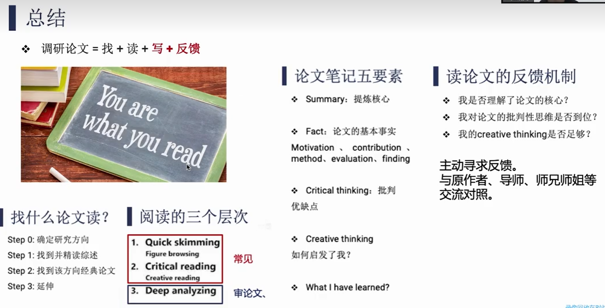</p>
<h1 id="找论文"><a class="header" href="#找论文">找论文</a></h1>
<ol>
<li>找方向</li>
</ol>
<ul>
<li>主流会议的paper session</li>
</ul>
<ol start="2">
<li>找综述，精读</li>
</ol>
<ul>
<li>搜索“方向”相关的关键词</li>
</ul>
<ol start="3">
<li>找经典论文，精读</li>
</ol>
<ul>
<li>综述里面被highlight的论文</li>
<li>引用非常高的论文</li>
<li>获奖论文</li>
</ul>
<ol start="4">
<li>延伸</li>
</ol>
<ul>
<li>reference：综述里（第二章）被metion的论文次之</li>
<li>citation：在google里点击“被引用”</li>
</ul>
<ol start="5">
<li>习惯</li>
</ol>
<ul>
<li>维持一个paper queue，经典论文提高优先级</li>
<li>从队首选一篇</li>
<li>把reference和citation（筛去不相关）放入队尾</li>
</ul>
<ol start="6">
<li>多交流</li>
</ol>
<h1 id="读论文"><a class="header" href="#读论文">读论文</a></h1>
<ol>
<li>Quick skim</li>
</ol>
<p>内容：看图，看视频（会议的 presentation view）
目的：对文章了解大概
时间：十分钟</p>
<ol start="2">
<li>Critical reading</li>
</ol>
<p>内容：</p>
<ul>
<li>Title</li>
<li>Abstract</li>
<li>Introduction</li>
<li>discussion/limitation</li>
</ul>
<p>目的：</p>
<ul>
<li>核心问题是什么</li>
<li>核心贡献是什么？</li>
<li>大致方法是什么？有效？缺陷？验证？</li>
<li>启发</li>
</ul>
<h1 id="记笔记"><a class="header" href="#记笔记">记笔记</a></h1>
<ol>
<li>Summary</li>
<li>Fact.</li>
</ol>
<ul>
<li>motivafion</li>
<li>contribution</li>
<li>method</li>
<li>evaluation</li>
</ul>
<ol start="3">
<li>Crifical thinking</li>
</ol>
<ul>
<li>批判优缺点</li>
</ul>
<ol start="4">
<li>Creative thinking</li>
</ol>
<p>如何启发了我</p>
<ul>
<li>想到什么idea</li>
<li>怎么improve</li>
<li>怎么generalize</li>
</ul>
<ol start="5">
<li>what I have learned</li>
</ol>
<p>精读：1周1～2篇</p>
<h1 id="求反馈"><a class="header" href="#求反馈">求反馈</a></h1>
<ul>
<li>对照作者video的重点</li>
<li>对照作者总结的limitaton</li>
<li>分享，交流</li>
</ul>
<div style="break-before: page; page-break-before: always;"></div><h1 id="diffusion-model思维导图"><a class="header" href="#diffusion-model思维导图">Diffusion Model思维导图</a></h1>
<ul>
<li>基础
<ul>
<li>DDPM
<ul>
<li>原理：Forward/Reverse</li>
<li>训练与推断</li>
<li>数学原理</li>
</ul>
</li>
<li>Scored-based 
<ul>
<li>从DDPM到SDE</li>
<li>用SDE描述DDPM的正向过程和逆向过程</li>
<li>拟合score function</li>
<li>从SDE到ODE</li>
</ul>
</li>
<li>Pipeline
<ul>
<li>条件生成</li>
<li>损失函数</li>
<li>采样</li>
</ul>
</li>
</ul>
</li>
<li>T2I基模型</li>
<li>基于T2I基模型的图像应用
<ul>
<li>图像生成</li>
<li>图像编辑</li>
<li>特定对象的图像生成</li>
<li>多个特定对象的生成</li>
</ul>
</li>
<li>基于T2I基模型的3D应用
<ul>
<li>3D表示</li>
<li>3D生成</li>
<li>新视角生成</li>
<li>3D重建</li>
<li>3D编辑</li>
</ul>
</li>
<li>基于T2I基模型的视频生成（见另外一个系列）</li>
<li>算法技巧
<ul>
<li>加速</li>
<li>提升质量</li>
<li>提升稳定性</li>
</ul>
</li>
</ul>
<h1 id="背景"><a class="header" href="#背景">背景</a></h1>
<h2 id="generative-adversarial-networks"><a class="header" href="#generative-adversarial-networks">Generative Adversarial Networks</a></h2>
<p>Restricted Boltzmann Machines<br />
Bayesian Networks<br />
Variational Autoencoders<br />
Normalizing Flows<br />
Energy-based Models<br />
Autoregressive Models<br />
Denoising Diffusion Models</p>
<p>P6</p>
<p>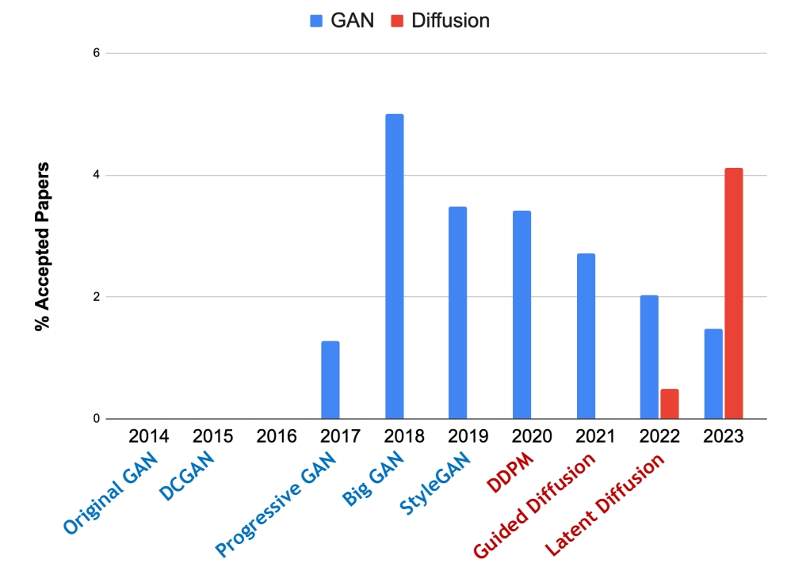 </p>
<p>Disclaimer: We rely on paper titles for counting the number of papers in each topic. Our statistics are likely to be biased.</p>
<h1 id="参考材料"><a class="header" href="#参考材料">参考材料</a></h1>
<h2 id="denoising-diffusion-models-a-generative-learning-big-bang"><a class="header" href="#denoising-diffusion-models-a-generative-learning-big-bang">Denoising Diffusion Models: A Generative Learning Big Bang　　　</a></h2>
<p>Jiaming Song　　　Chenlin Meng 　　　Arash Vahdat　　　</p>
<p>CVPR  #18546</p>
<p>https://www.youtube.com/watch?v=1d4r19GEVos</p>
<p><a href="https://cvpr2023-tutorial-diffusion-models.github.io/">https://cvpr2023-tutorial-diffusion-models.github.io/</a></p>
<p>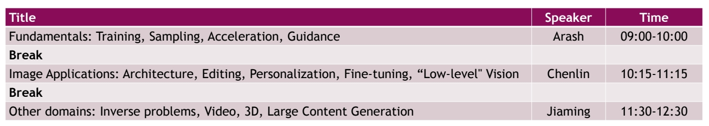 </p>
<h2 id="李宏毅dm课程"><a class="header" href="#李宏毅dm课程">李宏毅DM课程</a></h2>
<h2 id="其它参考材料"><a class="header" href="#其它参考材料">其它参考材料</a></h2>
<p>P4</p>
<div style="break-before: page; page-break-before: always;"></div><p>P12</p>
<h1 id="diffusion-model-是如何运作的"><a class="header" href="#diffusion-model-是如何运作的">Diffusion Model 是如何运作的？</a></h1>
<p>P13</p>
<p>Denoising diffusion models consist of two processes:</p>
<ul>
<li>Forward diffusion process that gradually adds noise to input</li>
<li>Reverse denoising process that learns to generate data by denoising</li>
</ul>
<p> </p>
<p>P14</p>
<h2 id="forward-diffusion-process"><a class="header" href="#forward-diffusion-process">Forward Diffusion Process</a></h2>
<p>The formal definition of the forward process in T steps:</p>
<h3 id="直观理解"><a class="header" href="#直观理解">直观理解</a></h3>
<p></p>
<blockquote>
<p>真正的加噪过程，<strong>不是直接的image + noise</strong>。</p>
</blockquote>
<h3 id="从数学上理解"><a class="header" href="#从数学上理解">从数学上理解</a></h3>
<blockquote>
<p>✅ 从第一张图像到最后的纯噪声，实际上是分布的改变。</p>
</blockquote>
<p>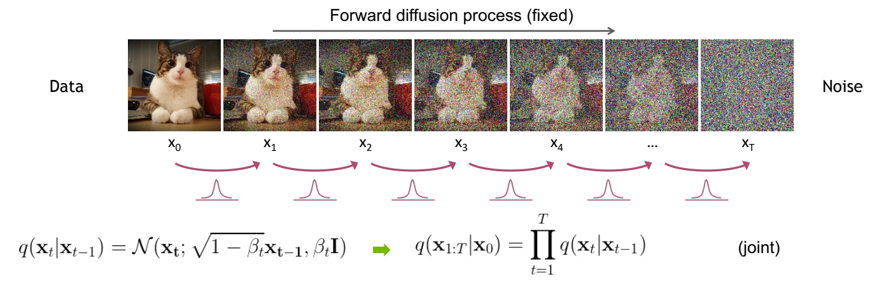 </p>
<p>通过逐步的 scale down 让均值趋近于 0。通过引入噪声使方差趋近于 1。使得原始分布逐步逼近 \(\mathcal{N} (0,1 )\)分布，</p>
<blockquote>
<p>❓ 求联合分布有什么用?</p>
</blockquote>
<h3 id="从操作层面理解"><a class="header" href="#从操作层面理解">从操作层面理解</a></h3>
<p>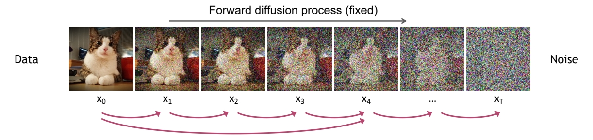 </p>
<blockquote>
<p>✅ 实际上，在给定一张图像x0时，想要获得第t张加噪图像时，不需要真的通过公式\(q(x_t|x_{t-1})\)从 \(\mathbf{x} _{t-1}\)到 \(\mathbf{x} _{t}\)一步一步计算出来，可以直接从 \(\mathbf{x}_0\)生成任意的 \(\mathbf{x}_t\)。 </p>
</blockquote>
<p> </p>
<p>从数学上可以证明，从x0逐步计算到xt和从x0直接计算到xt，这两种行为是等价的。</p>
<p>根据公式 \(\mathbf{x} _t=\sqrt{\bar{a} _t}   \mathbf{x} _0+\sqrt{(1-\bar{a} _t) }  \varepsilon  \)可知，当 \(\bar{a} _T  → 0\)，分布\(q(x_T)\)的均值趋于0，方差趋于1，变成纯高斯噪声。</p>
<p>P16</p>
<h3 id="进一步理解"><a class="header" href="#进一步理解">进一步理解</a></h3>
<p>So far, we discussed the diffusion kernel \(q(\mathbf{x} _t|\mathbf{x} _0)\) but what about \(q(\mathbf{x}_t)\)?</p>
<p>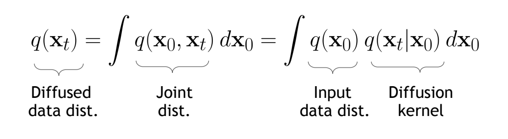 </p>
<p>The diffusion kernel is Gaussian convolution.</p>
<blockquote>
<p>✅ convolution 是一种信号平滑方法。<br />
✅ \(q(\mathbf{x} _ t|\mathbf{x} _ 0)\) 是标准高斯分布，因此 \(q(\mathbf{x} _ t)\) 是以高斯分布为权重的真实数据的加权平均。</p>
</blockquote>
<p>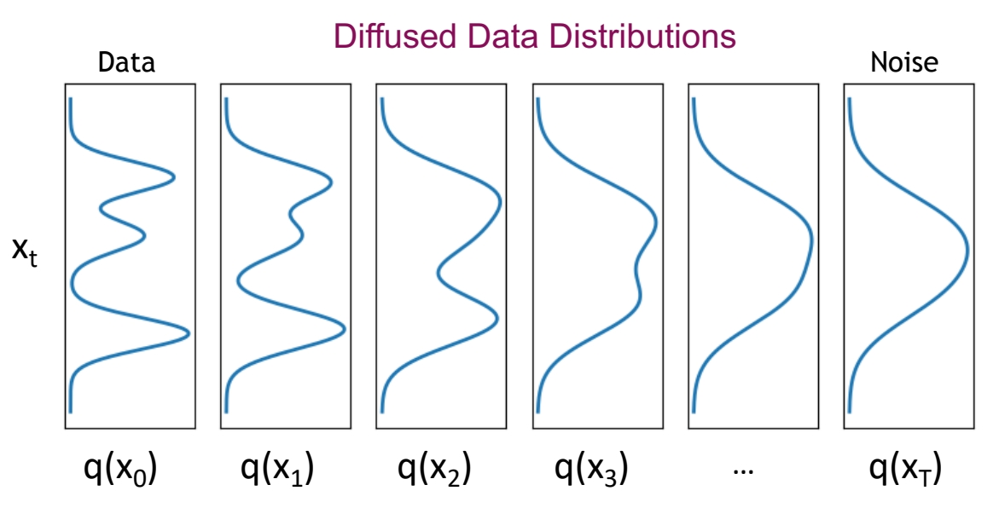 </p>
<p>We can sample \(\mathbf{x}_t \sim q(\mathbf{x}_t)\) by first sampling \(\mathbf{x}_0\) and then sampling \(\mathbf{x}_t \sim q(\mathbf{x}_t|\mathbf{x}_0)\) (i.e., ancestral sampling).</p>
<blockquote>
<p>✅ 实际上，没有任意一个时间步的 \(q(\mathbf{x})\) 的真实分布，只有这些分布的 sample.</p>
</blockquote>
<h2 id="reverse-denoising-process"><a class="header" href="#reverse-denoising-process">Reverse Denoising Process</a></h2>
<p>P17</p>
<h3 id="直观理解-1"><a class="header" href="#直观理解-1">直观理解</a></h3>
<p>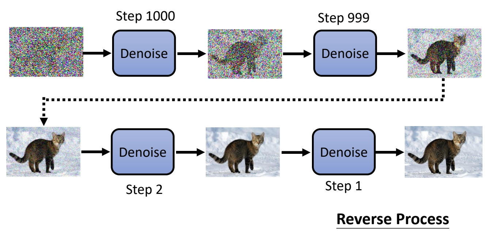</p>
<p>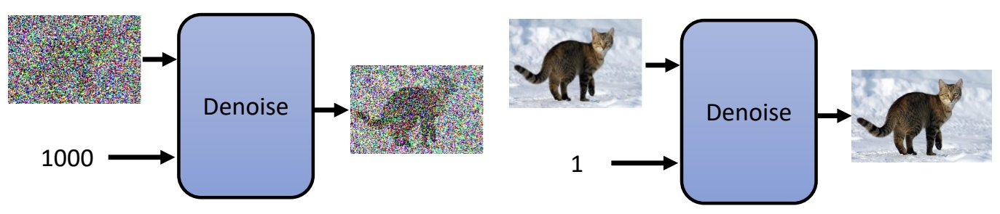</p>
<p>Denoise是一个网络模块，通过Denoise模块学习每个时间步的去噪过程。</p>
<blockquote>
<p>✅ 把 \(\mathbf{x}_0\) 加噪为 init-noise，再从 init-noise 恢复出 \(\mathbf{x}_0\)，这个操作是不可行的。<br />
✅ 因为，根据公式 \(\mathbf{x} _t=\sqrt{\bar{a} _t}   \mathbf{x} _0+\sqrt{(1-\bar{a} _t) }  \varepsilon  \), 且 \(\bar{a} _T  → 0\)，那么经过 \(T\) 步加噪后，\(\mathbf{x} _t\approx \varepsilon \). 而是 \(\varepsilon \) 是一个与 \(\mathbf{x} _ 0\) 没有任务关系的噪声，所以不可能从中恢复出 \(\mathbf{x} _ 0\).</p>
</blockquote>
<h3 id="从数学上理解-1"><a class="header" href="#从数学上理解-1">从数学上理解</a></h3>
<p>从xT到x0的过程，也是分布的改变。从\(\mathcal{N}(\mathbf{x}_T；\mathbf{0,I})\)w分布变成真实分布的过程。</p>
<p> </p>
<p>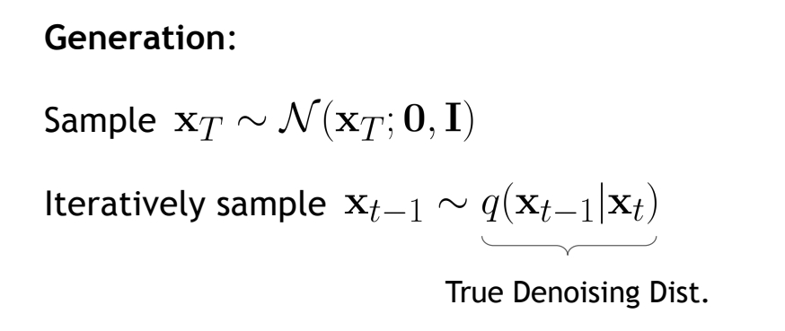 </p>
<p>与Forward不同的是，\(q(\mathbf{x}_{t-1}|\mathbf{x}_t)\)没有一个准确的数学公式来表达。</p>
<p>Can we approximate \(q(\mathbf{x}_{t-1}|\mathbf{x}_t)\)? Yes, we can use a <strong>Normal distribution</strong> if \(\beta _t\) is small in each forward diffusion step.</p>
<blockquote>
<p>✅ Nomal distribution 是特定均值和方差的高斯分布，不一定是 std 高斯。</p>
</blockquote>
<p>P18</p>
<p>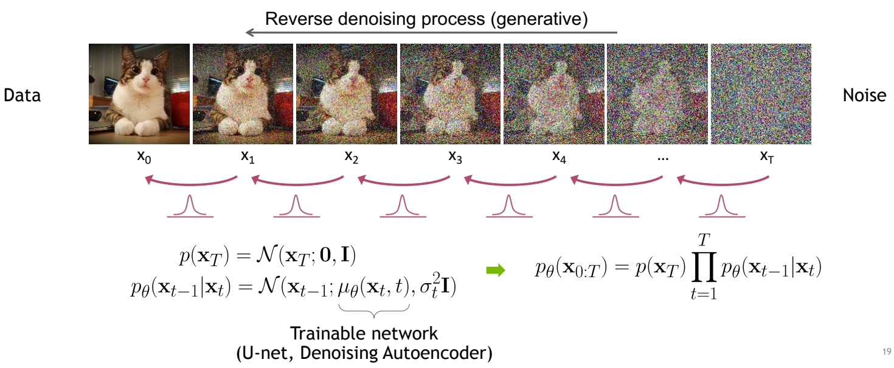 </p>
<p>假设\(p(\mathbf{x} _ T)\)和\(p(\mathbf{x}_{t-1}|\mathbf{x}<em>t)\)分别符合以上分布。<br />
从第1个分布中sample出\(x_T\)，把它代入第二个分布，就可以sample出\(x</em>{T-1}\)，直到最终sample出\(x_0\)</p>
<p><strong>由于以上截图来自不同的材料，存在p和q混有的情况，需注意区分。</strong></p>
<p>P19</p>
<h3 id="learning-denoising-model"><a class="header" href="#learning-denoising-model">Learning Denoising Model</a></h3>
<p>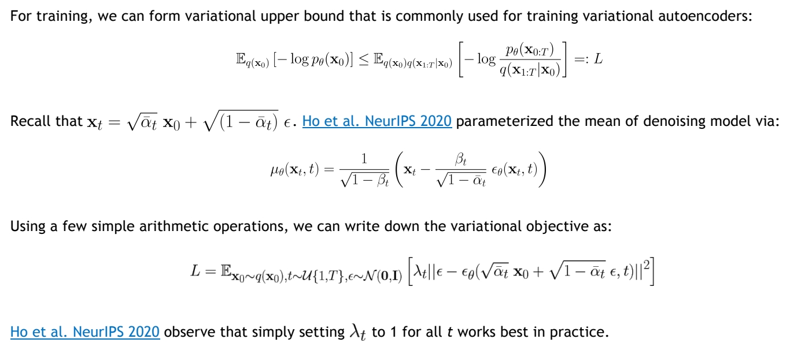 </p>
<blockquote>
<p>✅ 以上是去噪模型的公式，下面有关于这些公式的详细解释。</p>
</blockquote>
<p>P20</p>
<h1 id="训练与推断"><a class="header" href="#训练与推断">训练与推断</a></h1>
<p>使用Forward流程对真实数据加噪，以构造pair data。<br />
使用使用Denoise模块学习去噪分布，完成去噪过程。</p>
<p>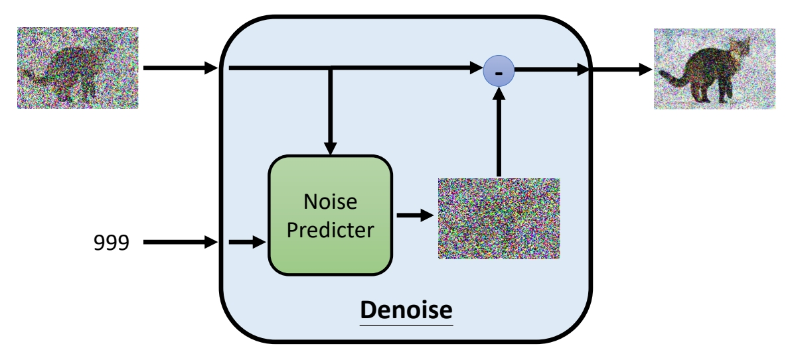</p>
<p>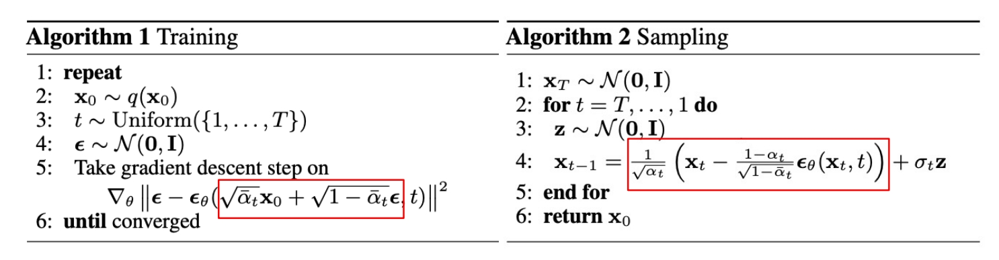 </p>
<p>P21</p>
<h2 id="implementation-considerations"><a class="header" href="#implementation-considerations">Implementation Considerations</a></h2>
<p>Diffusion models often use U-Net architectures with ResNet blocks and self-attention layers to represent \(\epsilon _\theta (\mathbf{x}_t,t)\).</p>
<p>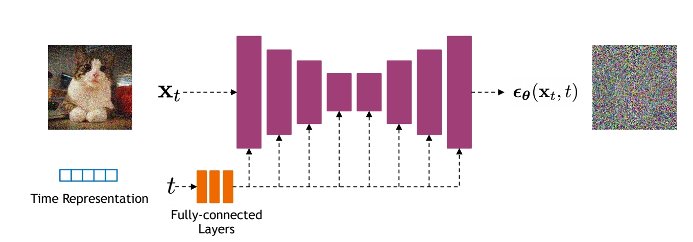 </p>
<p>Time representation: sinusoidal positional embeddings or random Fourier features.</p>
<p>Time features are fed to the residual blocks using either simple spatial addition or using adaptive group normalization layers. (see <u>Dharivwal and Nichol NeurIPS 2021</u>).</p>
<blockquote>
<p>✅ \(\sigma \) 是怎么定义的？</p>
</blockquote>
<h1 id="数学原理"><a class="header" href="#数学原理">数学原理</a></h1>
<p>P10</p>
<h2 id="生成模型本质上的共同目标"><a class="header" href="#生成模型本质上的共同目标">生成模型本质上的共同目标</a></h2>
<h3 id="目标是要学一个分布"><a class="header" href="#目标是要学一个分布">目标是要学一个分布</a></h3>
<p>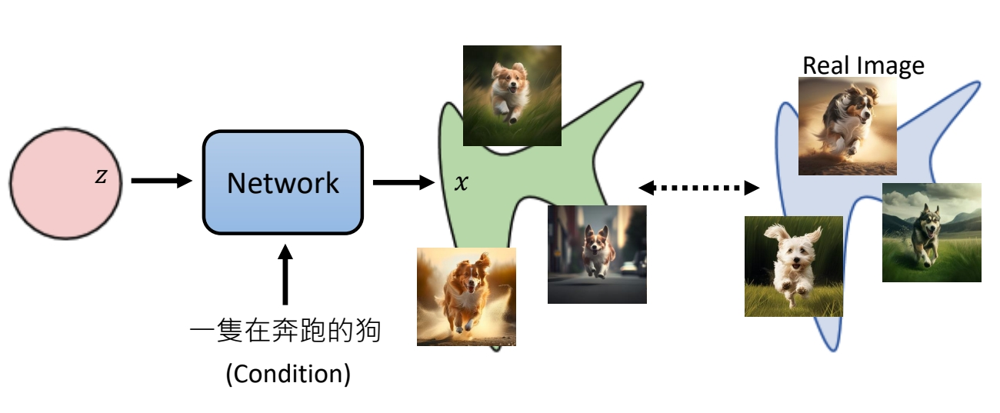 </p>
<p>生成模型的本质是要学到真实数据的分布，以及从某个已经分布（通常是正态分布）到这个真实数据分布的映射。</p>
<blockquote>
<p>✅ 实际使用中还会加一个 condition，但整体上没有本质差异，因此后面推导中不考虑 condition.</p>
</blockquote>
<p>P11</p>
<h3 id="定义目标函数"><a class="header" href="#定义目标函数">定义目标函数</a></h3>
<h4 id="以minimize-kl-divergence作为目标函数"><a class="header" href="#以minimize-kl-divergence作为目标函数">以Minimize KL Divergence作为目标函数</a></h4>
<p>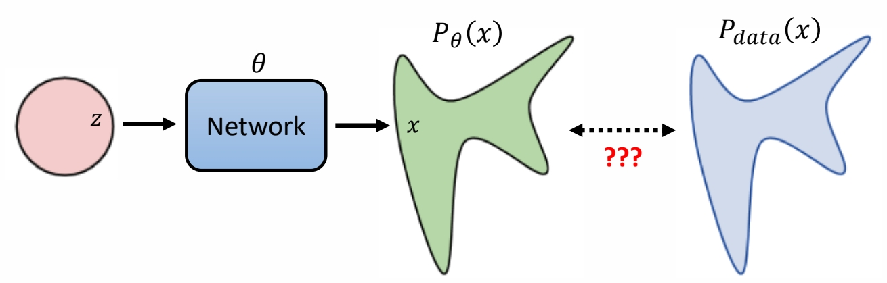 </p>
<p>目标是让生成数据的分布与真实数据的分布尽量的接近，但是怎样衡量两个分布是否接近？</p>
<blockquote>
<p>✅ 常用KL Divergence来衡量预测分布与GT分布之间的距离。</p>
</blockquote>
<h4 id="以maximum-likelihood-estimation"><a class="header" href="#以maximum-likelihood-estimation">以Maximum Likelihood Estimation</a></h4>
<p>\(P_{data}\) 代表真实分布，从分布中 Sample 出来的 \(x\) 即训练集<br />
\(x_i\)是数据集里的一个数据，也是真实数据分布里的一个采样。\(P_\theta (x^i)\) 代表 \(P_\theta\) 生成 \(x^i\) 的概率。</p>
<blockquote>
<p>✅ 由于 \(P_\theta\) 非常复杂，算不出这个概率，但此处假设 \(P_\theta (x^i)\) 已知。</p>
</blockquote>
<p>于是可以将定义目标函数为：找出让真实 \(x^i\) 被生成出来的概率最高的\(\theta \).</p>
<p>\begin{align*} \theta ^\ast =\text{arg } \max_{\theta } \prod_{i=1}^{m} P_\theta (x^i) \end{align*}</p>
<h4 id="两个目标函数是等价的"><a class="header" href="#两个目标函数是等价的">两个目标函数是等价的</a></h4>
<p>可通过数据推导证明，这里提到的两个目标，本质上是一致的。证明过程如下：</p>
<p>P12</p>
<p>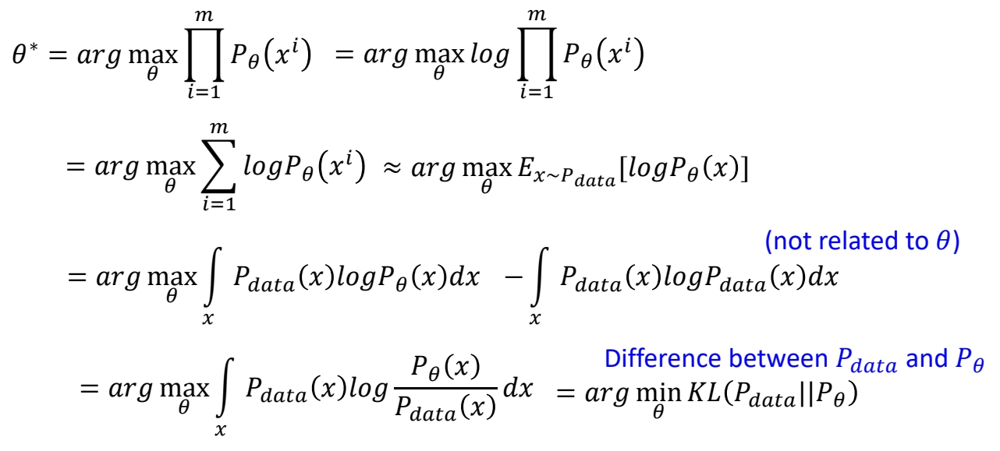 </p>
<p>Maximum Likelihood = Minimize KL Divergence</p>
<blockquote>
<p>✅ 结论：让真实数据的概率最大，与让两个分布尽量接近，在数学上是一致的。<br />
✅ VAE、diffusion、flow based 等生成模型，都是以最大化 Likelihood 为目标。GAN 是最小化 JS Divergence 为目标。</p>
</blockquote>
<p>P13</p>
<h2 id="compute-𝑃_thetax"><a class="header" href="#compute-𝑃_thetax">Compute \(𝑃_\theta(x)\)</a></h2>
<h3 id="计算𝑃_thetax的常用技巧"><a class="header" href="#计算𝑃_thetax的常用技巧">计算\(𝑃_\theta(x)\)的常用技巧</a></h3>
<blockquote>
<p>✅ VAE 和 diffusion 非常相似，许多公式是通用的。</p>
</blockquote>
<h4 id="技巧一不推断生成结果而是推断生成结果分布的均值"><a class="header" href="#技巧一不推断生成结果而是推断生成结果分布的均值">技巧一：不推断生成结果，而是推断生成结果分布的均值</a></h4>
<table><thead><tr><th></th><th></th></tr></thead><tbody>
<tr><td>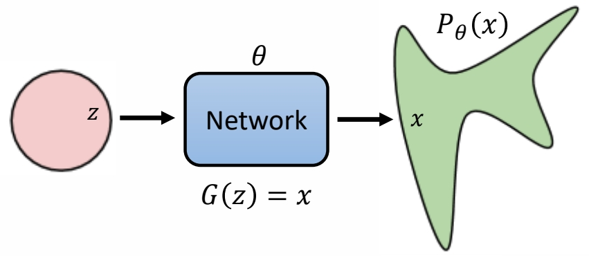</td><td>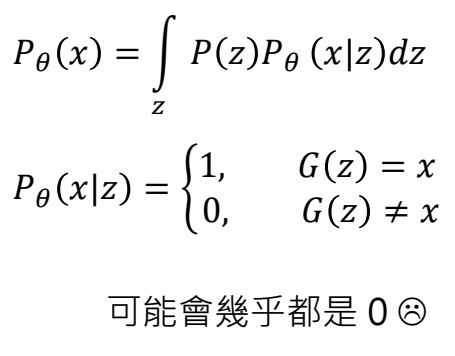</td></tr>
<tr><td>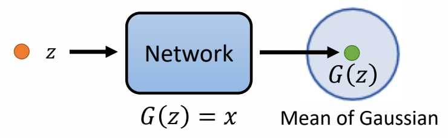</td><td>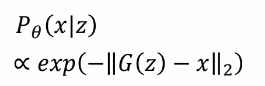</td></tr>
</tbody></table>
<blockquote>
<p>✅ \(G（z）\) 不代表某个生成结果，而是一个高斯的均值，然后计算 \(x\) 在这个分布中的概率。</p>
</blockquote>
<p>P14</p>
<h4 id="技巧二不求𝑃_thetax而是求lower-bound-of-log-px"><a class="header" href="#技巧二不求𝑃_thetax而是求lower-bound-of-log-px">技巧二：不求\(𝑃_\theta(x)\)，而是求Lower bound of \(log P(x)\)</a></h4>
<p>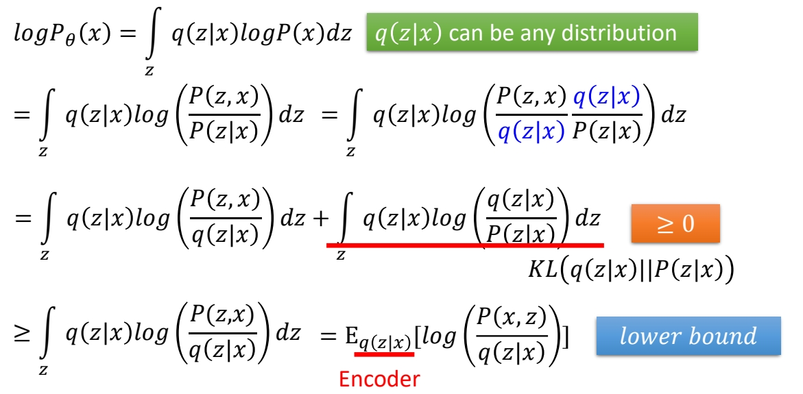</p>
<blockquote>
<p>✅ 通常无法最大化 \(P（x）\)，而是最大化 \(log P(x)\) 的下界。<br />
✅ 以上公式推导中省略参数 \( \theta\)。</p>
</blockquote>
<p>P15</p>
<h3 id="ddpm-compute-𝑃_thetax"><a class="header" href="#ddpm-compute-𝑃_thetax">DDPM: Compute \(𝑃_\theta(x)\)</a></h3>
<p>对于 diffusion model，假设每次 denoise 出的是一个高斯分布的均值。</p>
<blockquote>
<p>❓ 问：为什么假设\(G(x_t)\) 是高斯分布的 mean？<br />
✅ 答：有人尝试过其它假设，效果没有变好，且高斯分布便于计算。</p>
</blockquote>
<p>通过链式法则，可以得出 \(x_0\) 在最终分布中的概率为：</p>
<p>$$
P_ \theta (x_0)=\int\limits _ {x_1:x_T}^{} P(x_T)P_ \theta (x_{T-1}|x_T) \dots P_ \theta (x_ {t-1}|x_t) \dots P_ \theta(x_0|x_1)dx_1:x_T<br />
$$</p>
<p>P16</p>
<h3 id="ddpm-lower-bound-of-log-px"><a class="header" href="#ddpm-lower-bound-of-log-px">DDPM: Lower bound of \(log P(x)\)</a></h3>
<p>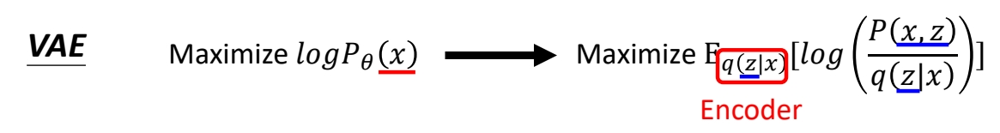</p>
<p>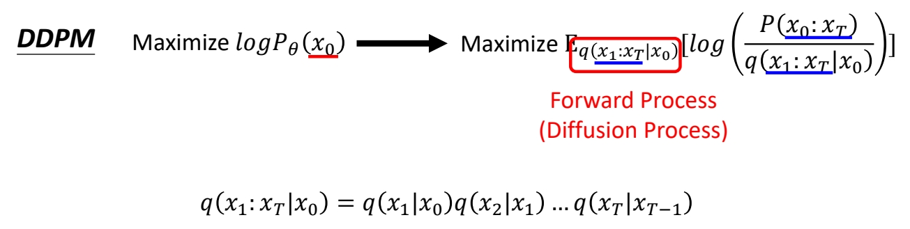</p>
<h3 id="计算lower-bound-of-log-px"><a class="header" href="#计算lower-bound-of-log-px">计算Lower bound of \(log P(x)\)</a></h3>
<h4 id="计算qx_tx_t-1"><a class="header" href="#计算qx_tx_t-1">计算\(q（x_t｜x_{t-1}）\)</a></h4>
<p>P17<br />
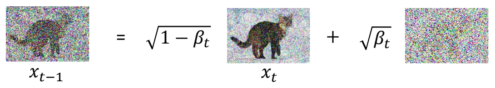</p>
<blockquote>
<p>✅ 提前定好一组 \(\beta \)．代表 noise 要加多大。<br />
✅ \(q（x_t｜x_{t-1}）\) 仍然属于高斯分布，其均值为 \(\sqrt{1-\beta _t} \cdot x_t\)，方差为 \(\beta _t\).</p>
</blockquote>
<h4 id="计算qx_tx_0"><a class="header" href="#计算qx_tx_0">计算\(q（x_t｜x_{0}）\)</a></h4>
<p>P18<br />
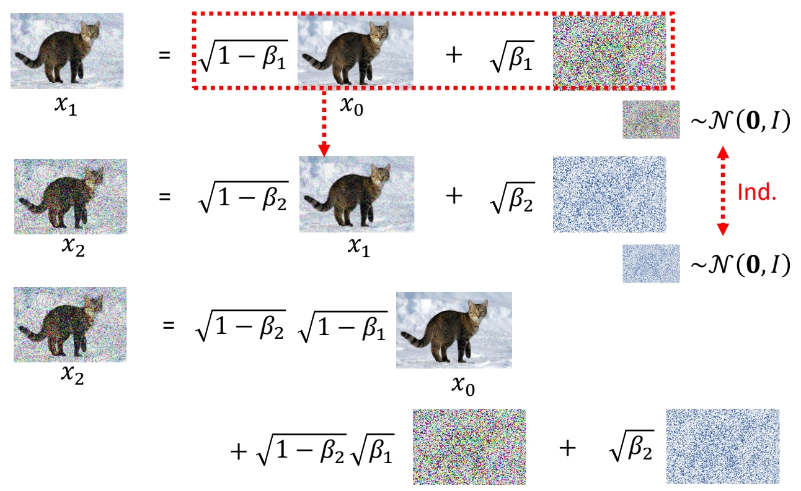</p>
<p>P19<br />
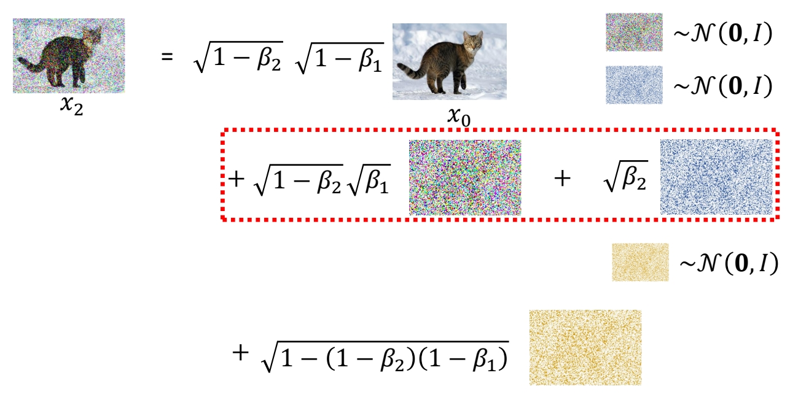</p>
<blockquote>
<p>✅ 由于两次 sample 出的 noise 是独立同分布，两个 noise 以这种形式相加的结果，也符合某个特定的高斯分布。</p>
</blockquote>
<p>P20</p>
<p>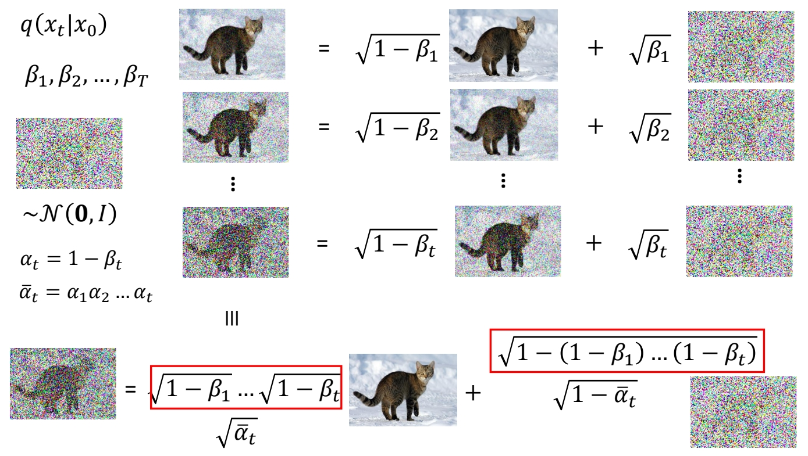</p>
<blockquote>
<p>✅ 结论：\(q（x_t｜x_{0}）\)也符合高斯分布，其均值为\(\bar{\alpha }_t\)，方差为\({1-\bar{\alpha }_t}\).</p>
</blockquote>
<h2 id="定义损失函数"><a class="header" href="#定义损失函数">定义损失函数</a></h2>
<p>如何定义损失函数，可以达到最大化\(\log P_{\theta}(x_0)\)的目的</p>
<h3 id="损失函数与目标函数"><a class="header" href="#损失函数与目标函数">损失函数与目标函数</a></h3>
<blockquote>
<p>目标函数是根据实际意义推导出来的优化目标。损失函数是能引导学习收敛到目标状态的函数，可以没有实际意义，也可以跟目标函数不一样。<br />
虽然目标函数很明确，但是损失函数不一定要跟目标函数一样。可以从目标函数中提取出影响结果的关键因素来引导学习过程。</p>
</blockquote>
<h3 id="推导与简化目标函数log-px"><a class="header" href="#推导与简化目标函数log-px">推导与简化目标函数\(log P(x)\)</a></h3>
<p></p>
<p>P21<br />
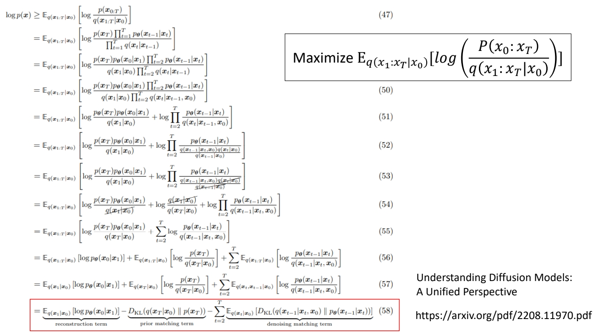</p>
<p>P22</p>
<p>最后简化为以下三项：</p>
<p>\begin{align*} E_{q(x_1|x_0)}[log P(x_0|x_1)]-KL(q(x_T|x_0)||P(x_T))
-\sum_{t=2}^{T}E_{q(x_t|x_0)}[KL(q(x_{t-1}|x_t,x_0)||P(x_{t-1}|x_t))]   \end{align*}</p>
<h3 id="分析目标函数中与优化相关的关键因素"><a class="header" href="#分析目标函数中与优化相关的关键因素">分析目标函数中与优化相关的关键因素</a></h3>
<h4 id="结论"><a class="header" href="#结论">结论</a></h4>
<blockquote>
<p>✅ 目标是要优化 \( \theta\)，第二项与\( \theta\)无关，可以略掉。<br />
✅ 第三项的 KL Divrgence 涉及到两个分布，分布1是固定的，可以通过计算得到，分布2是由 \( \theta\) 决定的，是要优化的对象。</p>
</blockquote>
<p>P23</p>
<h4 id="关于第三项分布1的推导过程"><a class="header" href="#关于第三项分布1的推导过程">关于第三项分布1的推导过程</a></h4>
<p>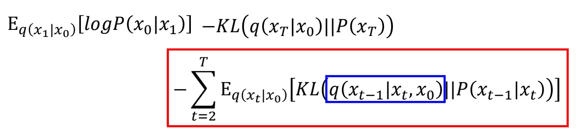</p>
<p>已知 \(q (x_t\mid x_0)\)，\(q (x_{t-1} \mid x_0)\) 和 \(q (x_t \mid x_{t-1})\)为：</p>
<p>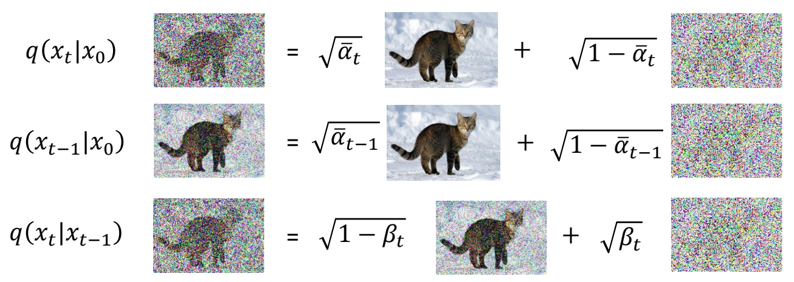</p>
<p>求 \(q (x_{t-1} \mid x_t,x_0)\).</p>
<blockquote>
<p>✅ \((q(x_{t-1}|x_t,x_0)\)的数据含义为：已知\(x_0\) 和 \(x_t\)，求 \(x_{t-1}\) 的分布。</p>
</blockquote>
<p>P24<br />
</p>
<p>P25<br />
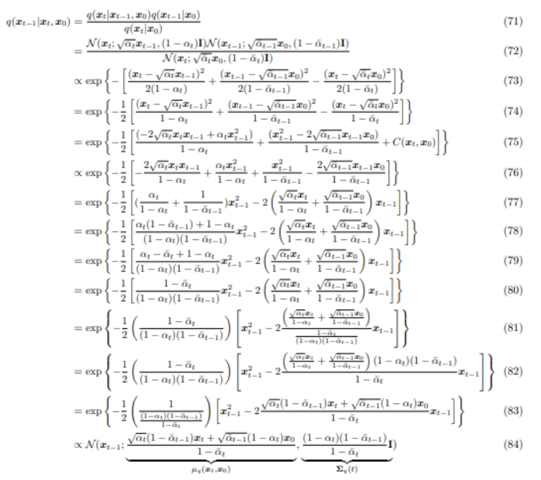</p>
<blockquote>
<p>https://arxiv.org/pdf/2208.11970.pdf</p>
</blockquote>
<p>P26<br />
</p>
<blockquote>
<p>✅ 结论：\(q(x_{t-1}|x_t,x_0)\) 也是高斯分布，且其均值与方差是与\(\theta\)无关的固定的值。</p>
</blockquote>
<h4 id="化简后的目标函数"><a class="header" href="#化简后的目标函数">化简后的目标函数</a></h4>
<p>根据以上推导，目标函数可简化为最小化原目标函数第三项中分布1与分布2的KL Divergence。</p>
<p>\begin{align*} E_{q(x_1|x_0)}[log P(x_0|x_1)]-KL(q(x_T|x_0)||P(x_T))
-\sum_{t=2}^{T}E_{q(x_t|x_0)}[KL(q(x_{t-1}|x_t,x_0)||P(x_{t-1}|x_t))]   \end{align*}</p>
<p>其中分布1为与\(\theta\)无关的固定，分布2为与\(\theta\)有关的待优化分布。</p>
<h4 id="how-to-minimize-kl-divergence"><a class="header" href="#how-to-minimize-kl-divergence">How to minimize KL divergence?</a></h4>
<h5 id="方式一直接套公式"><a class="header" href="#方式一直接套公式">方式一：直接套公式</a></h5>
<p></p>
<blockquote>
<p>✅ 两个高斯分布的 KLD 有公式解，但此处不用公式解，因为  \( \theta\) 只能影响分布2的均值。</p>
</blockquote>
<h5 id="方式二"><a class="header" href="#方式二">方式二</a></h5>
<p>分布1的均值和方差是固定的。分布2的均值是待优化的，方差是固定的。</p>
<p>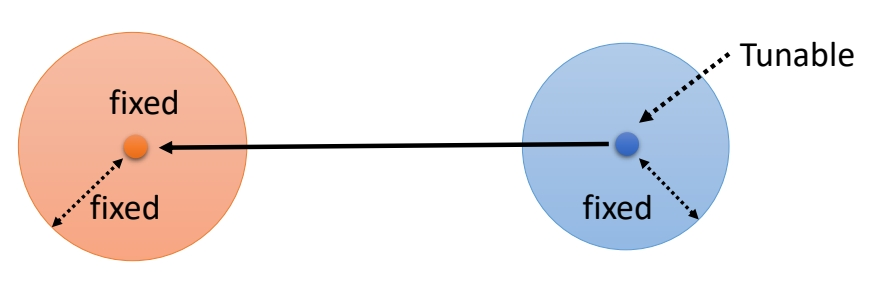</p>
<blockquote>
<p>✅ 因此减小 KLD 的方法是让分布2的均值接近分布1的均值。</p>
</blockquote>
<h3 id="定义损失函数-1"><a class="header" href="#定义损失函数-1">定义损失函数</a></h3>
<blockquote>
<p>✅ 分布1的均值可以看作是 \(x_{t-1}\) 的 GT 了。其计算公式为：</p>
</blockquote>
<p>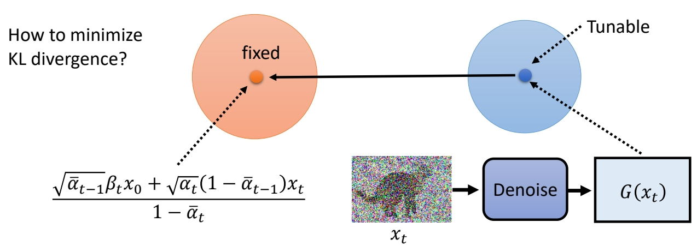</p>
<p>\(x_{t-1}\)的GT的计算公式中包含了x0和xt，把x0和xt都转化为xt的表示，得：</p>
<p>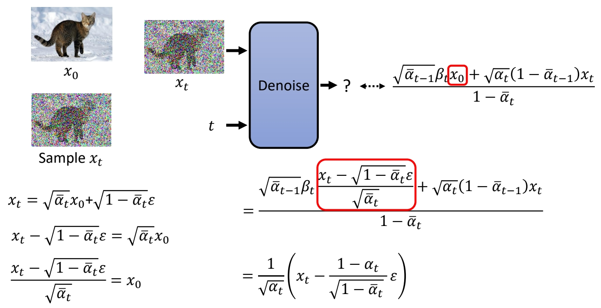</p>
<blockquote>
<p>✅ 可以发现 \(x_t\) 与 \(x_{t-1}\)和GT 之间，唯一未知的部分就是 noise \(\varepsilon \). 因此用网络学习这个noise。</p>
</blockquote>
<p>最终定义损失函数为网络输出(预测的noise)与GT（构造训练数据时所生成的noise）之间的L2距离。</p>
<h2 id="其它问题"><a class="header" href="#其它问题">其它问题</a></h2>
<h3 id="关于alpha-"><a class="header" href="#关于alpha-">关于\(\alpha \)</a></h3>
<blockquote>
<p>✅ \(\alpha \) 是预定义的超参，DDPM 试图学习 \(\alpha \)，发现没有提升。</p>
</blockquote>
<h1 id="相关论文"><a class="header" href="#相关论文">相关论文</a></h1>
<table><thead><tr><th>ID</th><th>Year</th><th>Name</th><th>Note</th><th>Tags</th><th>Link</th></tr></thead><tbody>
<tr><td></td><td>2015</td><td>Deep Unsupervised Learning using Nonequilibrium Thermodynamics</td><td></td><td></td><td></td></tr>
<tr><td></td><td>2020</td><td>Denoising Diffusion Probabilistic Models</td><td></td><td></td><td></td></tr>
<tr><td></td><td>2021</td><td>Score-Based Generative Modeling through Stochastic Differential Equations</td><td></td><td></td><td><a href="https://caterpillarstudygroup.github.io/ReadPapers/8.html">link</a></td></tr>
</tbody></table>
<hr />
<blockquote>
<p>本文出自CaterpillarStudyGroup，转载请注明出处。</p>
<p>https://caterpillarstudygroup.github.io/ImportantArticles/</p>
</blockquote>
<div style="break-before: page; page-break-before: always;"></div><p>P22</p>
<h1 id="score-based-generative-modeling-with-differential-equations"><a class="header" href="#score-based-generative-modeling-with-differential-equations">Score-based Generative Modeling with Differential Equations</a></h1>
<table><thead><tr><th>ID</th><th>Year</th><th>Name</th><th>Note</th><th>Tags</th><th>Link</th></tr></thead><tbody>
<tr><td></td><td>2021</td><td>Score-Based Generative Modeling through Stochastic Differential Equations</td><td></td><td></td><td><a href="https://caterpillarstudygroup.github.io/ReadPapers/8.html">link</a></td></tr>
</tbody></table>
<p>P26</p>
<h2 id="ddpm-vs-stochastic-differential-equation"><a class="header" href="#ddpm-vs-stochastic-differential-equation">DDPM VS Stochastic Differential Equation</a></h2>
<blockquote>
<p>🔎 <a href="https://caterpillarstudygroup.github.io/mathematics_basic_for_ML/NumericalComputation/ODE_SDE.html">SDE</a>
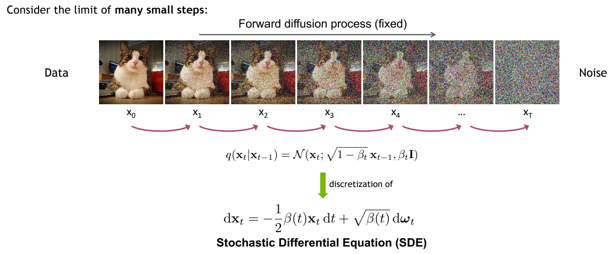 </p>
</blockquote>
<blockquote>
<p>✅ DDPM 是在时间上做了离散化的 SDE．</p>
</blockquote>
<p>P27</p>
<h3 id="forward-diffusion-process-as-stochastic-differential-equation"><a class="header" href="#forward-diffusion-process-as-stochastic-differential-equation">Forward Diffusion Process as Stochastic Differential Equation</a></h3>
<p>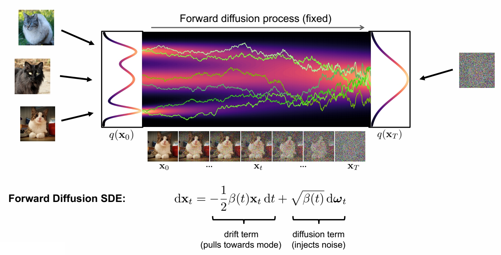 </p>
<blockquote>
<p>✅ drift term 使 \( \mathbf{x} _ t\) 趋向于 Origin.<br />
✅ Origin 我理解为 \( \vec{0} \) 向量的意思。<br />
✅ \( \mathbf{x} _ t\) 最终趋向于 std normal.</p>
</blockquote>
<p>P29</p>
<h3 id="the-generative-reverse-stochastic-differential-equation"><a class="header" href="#the-generative-reverse-stochastic-differential-equation">The Generative Reverse Stochastic Differential Equation</a></h3>
<p>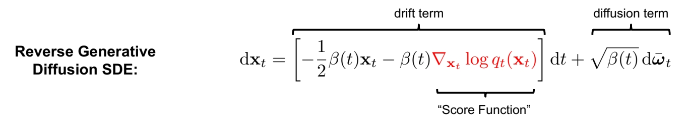 </p>
<blockquote>
<p>🔎 <u>Anderson, in Stochastic Processes and their Applications, 1982</u></p>
</blockquote>
<blockquote>
<p>✅ \(q _ t(\cdot )\) 描述 \(t\) 时刻的分布。<br />
✅ \(q _ t(\mathbf{x} _ t)\) 为 \(\mathbf{x} _ t\) 在 \(q _ t\) 分布中的概率。<br />
✅ Generative 的关键是拟合 score funchon．</p>
</blockquote>
<p><strong>But how to get the score function</strong> \(\nabla \mathbf{x} _t \log q_t(\mathbf{x} _t)\)?</p>
<p>P32</p>
<h2 id="score-matching"><a class="header" href="#score-matching">Score Matching</a></h2>
<p>Naïve idea, learn model for the score function by direct regression?</p>
<p>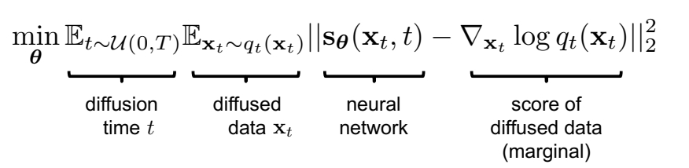 </p>
<blockquote>
<p>✅ 直接用一个网络拟合 score function．</p>
</blockquote>
<p><strong>But</strong> \(\nabla \mathbf{x} _t \log q_t(\mathbf{x} _t)\) <strong>(score of the</strong> <em><strong>marginal diffused density</strong></em> \(q_t(\mathbf{x} _t)\)<strong>) is not tractable!</strong></p>
<blockquote>
<p>✅ 存在的问题：只能 sample from \(q_t\)，但没有 \(q_t\) 的 close form.</p>
</blockquote>
<p><u>Vincent, “A Connection Between Score Matching and Denoising Autoencoders”, Neural Computation, 2011</u></p>
<p><u>Song and Ermon, “Generative Modeling by Estimating Gradients of the Data Distribution”, NeurIPS, 2019</u></p>
<p>P33</p>
<h3 id="denoising-score-matching"><a class="header" href="#denoising-score-matching">Denoising Score Matching</a></h3>
<p>Instead, diffuse individual data points \(\mathbf{x}_0\). Diffused \(q_t(\mathbf{x}_t|\mathbf{x}_0)\) <em><strong>is</strong></em> tractable!</p>
<blockquote>
<p>🔎 <u>Vincent, in Neural Computation, 2011</u></p>
</blockquote>
<p>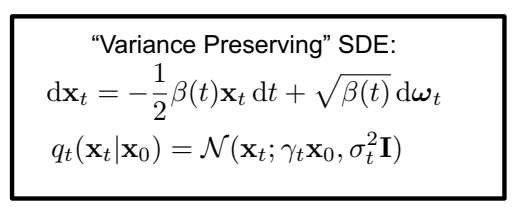 </p>
<blockquote>
<p>❓ \(\gamma _ t\) 和 \(\sigma\) 怎么定义？ 答：见上一页DDPM的推导。</p>
</blockquote>
<p>因此<strong>Denoising Score Matching</strong>的目标函数变为:</p>
<p>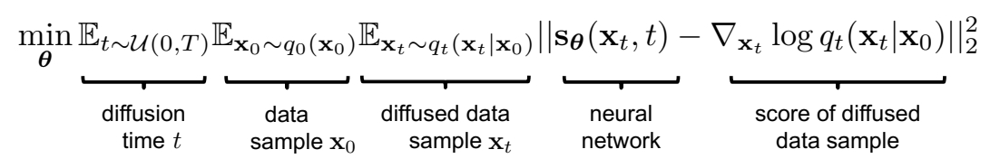 </p>
<p><strong>After expectations</strong>, \(\mathbf{s} _ \theta (\mathbf{x} _ t,t)\approx \nabla _ {\mathbf{x} _ t}\log q _ t(\mathbf{x} _ t)\)<strong>!</strong></p>
<blockquote>
<p>🔎 <u>Song and Ermon, NeurIPS, 2019</u></p>
</blockquote>
<blockquote>
<p>✅ 最后 \(\mathbf{s} _ \theta (\mathbf{x} _ t,t)\) 学到的是所有 \(\mathbf{x} _ 0\) 对应的 score 的均值。</p>
</blockquote>
<blockquote>
<p>✅ 结果发现时间离散的 diffusion model(DDPM) 和时间连续的 diffusion model(SDE),其目标函数是一致的，且两个版本可以互相转化。</p>
</blockquote>
<p>$$
\min_ {\mathbf{\theta}  } \mathbb{E} _ {t\sim u(0,T)}\mathbb{E} _ {\mathbf{x} _ 0\sim q_ 0(\mathbf{x} _ 0)}\mathbb{E} _{\epsilon \sim \mathcal{N}(\mathbf{0,I} ) }\frac{1}{\sigma ^2_t} ||\epsilon -\epsilon _ \theta (\mathbf{x} _ t,t)||^2_2 
$$</p>
<p>P35</p>
<h2 id="different-parameterizations"><a class="header" href="#different-parameterizations">Different Parameterizations</a></h2>
<blockquote>
<p>🔎 Karras et al., <u>&quot;Elucidating the Design Space of Diffusion-Based Generative Models&quot;,</u> NeurIPS 2022 <a href="https://caterpillarstudygroup.github.io/ReadPapers/9.html">link</a></p>
</blockquote>
<blockquote>
<p>✅ 调参对生成质量影响很大。</p>
</blockquote>
<p>P36</p>
<h2 id="synthesis-with-sde-vs-ode"><a class="header" href="#synthesis-with-sde-vs-ode">Synthesis with SDE vs. ODE</a></h2>
<p><strong>Generative Reverse Diffusion SDE (stochastic):</strong></p>
<p>$$
d\mathbf{x} _ t=-\frac{1}{2} \beta (t)[\mathbf{x} _ t+2s_ \theta (\mathbf{x} _ t,t)]dt+\sqrt{\beta (t)} d\varpi _ t
$$</p>
<p><strong>Generative Probability Flow ODE (deterministic):</strong></p>
<p>$$
d\mathbf{x} _ t=-\frac{1}{2} \beta (t)[\mathbf{x} _ t+s_ \theta (\mathbf{x} _ t,t)]dt
$$</p>
<blockquote>
<p>✅ <a href="https://caterpillarstudygroup.github.io/ReadPapers/9.html">Song et al., ICLR, 2021</a>表明，可以把 SDE 模型转换为ODE模型。只需要对sample过程进行公式修改即可。每个噪声对应特定的输出。</p>
</blockquote>
<p>P37</p>
<h4 id="diffusion-models-as-neural-odes"><a class="header" href="#diffusion-models-as-neural-odes">Diffusion Models as Neural ODEs</a></h4>
<p></p>
<p>使用ODE的sample公式有以下好处：</p>
<ul>
<li>ODE 推断，可以使用成熟的 ODE solver 进行 sample 加速。</li>
<li><strong>Deterministic encoding and generation</strong> (semantic image interpolation, etc.)</li>
<li><strong>Log-likelihood computation</strong> (instantaneous change of variables):</li>
</ul>
<blockquote>
<p>❓ 第三条没听懂，把 model 当成基于数据的 ODE 来用？</p>
</blockquote>
<hr />
<blockquote>
<p>本文出自CaterpillarStudyGroup，转载请注明出处。</p>
<p>https://caterpillarstudygroup.github.io/ImportantArticles/</p>
</blockquote>
<div style="break-before: page; page-break-before: always;"></div><p>P38</p>
<h1 id="accelerated-sampling"><a class="header" href="#accelerated-sampling">Accelerated Sampling</a></h1>
<p>P39</p>
<h2 id="the-generative-learning-trilemma"><a class="header" href="#the-generative-learning-trilemma">The generative learning trilemma</a></h2>
<p>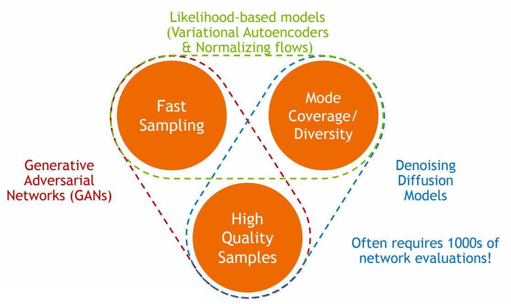 </p>
<blockquote>
<p>🔎 <u>Tackling the Generative Learning Trilemma with Denoising Diffusion GANs, ICLR 2022</u> </p>
</blockquote>
<p>其中Diffusion based生成模型的主要问题是生成速度慢，因此需要在保持高采样质量和多样性的前提下，针对采样速度慢的问题进行加速。</p>
<p>P41</p>
<h2 id="acceleration-techniques"><a class="header" href="#acceleration-techniques">Acceleration Techniques</a></h2>
<ul>
<li>Advanced ODE/SDE Solvers</li>
<li>Distillation Techniques</li>
<li>Low-dim. Diffusion Processes</li>
<li>Advanced Diffusion Processes</li>
</ul>
<p>P42</p>
<h1 id="advanced-odesde-solvers"><a class="header" href="#advanced-odesde-solvers">Advanced ODE/SDE Solvers</a></h1>
<blockquote>
<p>✅ ODE 实现 std normal 分布与真实数据分布之间的映射。</p>
</blockquote>
<p>P43</p>
<h2 id="generative-odes"><a class="header" href="#generative-odes">Generative ODEs</a></h2>
<p>Solve ODEs with as little function evaluations as possible</p>
<p>$$
dx=\epsilon _\theta (x,t)dt
$$</p>
<p>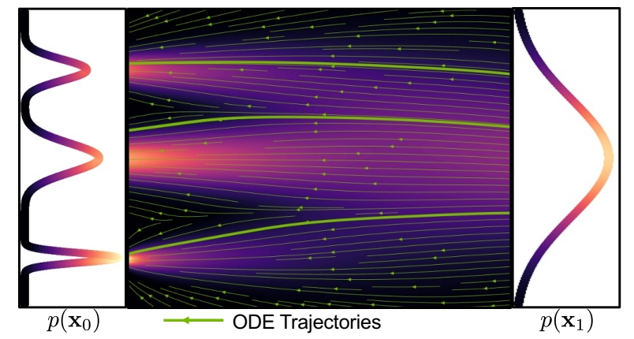 </p>
<ul>
<li>一阶方法（Euler 方法）：每个时间步简化为线性过程。当 step 较大时，会与 GT 有较大的偏离。</li>
</ul>
<p>P44</p>
<p>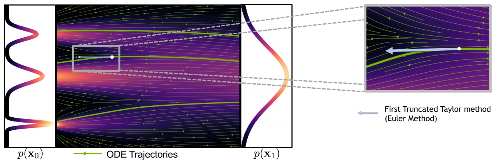 </p>
<ul>
<li>高阶方法
P45<br />
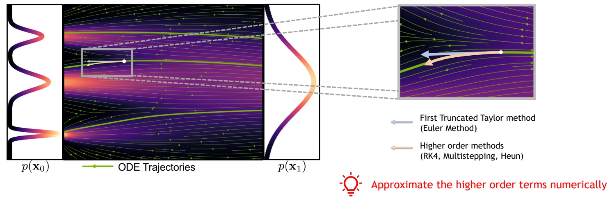 </li>
</ul>
<p>P46</p>
<h2 id="扩散模型-odesde-求解器的相关工作"><a class="header" href="#扩散模型-odesde-求解器的相关工作">扩散模型 ODE/SDE 求解器的相关工作</a></h2>
<p>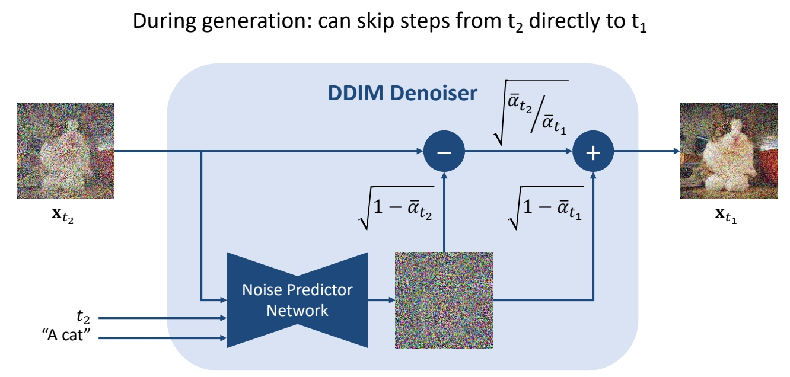</p>
<table><thead><tr><th>ID</th><th>Year</th><th>Name</th><th>Note</th><th>Tags</th><th>Link</th></tr></thead><tbody>
<tr><td><strong>2</strong></td><td>2021</td><td>Denoising Diffusion Implicit Models (DDIM)</td><td>✅ DDIM：可以直接从 \(t_2\) 去噪到 \(t_1\). <br> ✅ 把 \(x_t\) 去掉一个 nolse 之后，不是 sample 另一个noise，而是把原来的 noise 乘以一个系数再加回去。</td><td></td><td><a href="https://caterpillarstudygroup.github.io/ReadPapers/2.html">link</a></td></tr>
<tr><td></td><td>2021</td><td>Score-Based Generative Modeling through Stochastic Differential Equations</td><td>Runge-Kutta adaptive step-size ODE solver</td><td></td><td></td></tr>
<tr><td></td><td>2021</td><td>Gotta Go Fast When Generating Data with Score-Based Models</td><td>Higher-Order adaptive step-size SDE solver</td><td></td><td></td></tr>
<tr><td></td><td>2021</td><td>Denoising Diffusion Implicit Models</td><td>Reparametrized, smoother ODE</td><td></td><td></td></tr>
<tr><td></td><td>2022</td><td>gDDIM: Generalized denoising diffusion implicit models</td><td>Reparametrized, smoother ODE</td><td></td><td></td></tr>
<tr><td></td><td>2022</td><td>Pseudo Numerical Methods for Diffusion Models on Manifolds</td><td>Higher-Order ODE solver with linear multistepping</td><td></td><td></td></tr>
<tr><td></td><td>2022</td><td>Fast Sampling of Diffusion Models with Exponential Integrator</td><td>Exponential ODE Integrators</td><td></td><td></td></tr>
<tr><td></td><td>2022</td><td>DPM-Solver: A Fast ODE Solver for Diffusion Probabilistic Model Sampling in Around 10 Steps</td><td>Exponential ODE Integrators</td><td></td><td></td></tr>
<tr><td></td><td>2022</td><td>DPM-Solver++: Fast Solver for Guided Sampling of Diffusion Probabilistic Models</td><td>Exponential ODE Integrators</td><td></td><td></td></tr>
<tr><td></td><td>2022</td><td>Elucidating the Design Space of Diffusion-Based Generative Models</td><td>Higher-Order ODE solver with Heun’s Method</td><td></td><td></td></tr>
<tr><td></td><td>2023</td><td>UniPC: A Unified Predictor-Corrector Framework for Fast Sampling of Diffusion Models</td><td></td><td></td><td></td></tr>
<tr><td></td><td>2023</td><td>Parallel Sampling of Diffusion Model</td><td></td><td></td><td></td></tr>
<tr><td></td><td>2023</td><td>A Geometric Perspective on Diffusion Models</td><td></td><td></td><td></td></tr>
</tbody></table>
<blockquote>
<p>✅ 这些solvers可以以plug-in的方式使用，且通常能比DDPM更快收敛。</p>
</blockquote>
<h1 id="distillation-techniques"><a class="header" href="#distillation-techniques">Distillation Techniques</a></h1>
<p>P48</p>
<h2 id="ode-distillation"><a class="header" href="#ode-distillation">ODE Distillation</a></h2>
<p>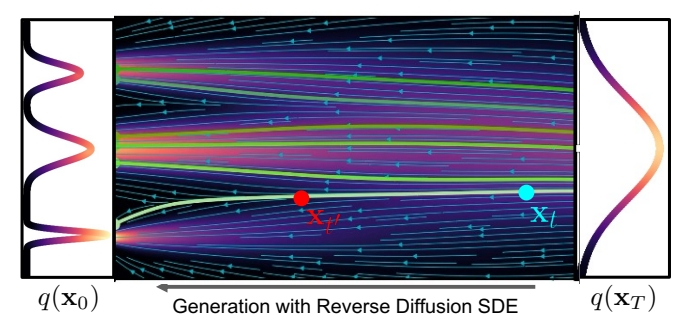 </p>
<p>Can we train a neural network to directly predict \(\mathbf{x} _{{t}'} \) given \(\mathbf{x} _t\)?</p>
<blockquote>
<p>✅ \(\mathbf{x} _{{t}'} \)与\(\mathbf{x} _t\)的关系是确定的。</p>
</blockquote>
<p>P49</p>
<table><thead><tr><th>ID</th><th>Year</th><th>Name</th><th>Note</th><th>Tags</th><th>Link</th></tr></thead><tbody>
<tr><td></td><td>2022</td><td><strong>Progressive distillation</strong> for fast sampling of diffusion models</td><td>蒸馏</td><td></td><td><a href="https://caterpillarstudygroup.github.io/ReadPapers/1.html">link</a></td></tr>
<tr><td></td><td>2023</td><td>On Distillation of Guided Diffusion Models</td><td><strong>Award Candidate</strong></td><td></td><td><a href="https://caterpillarstudygroup.github.io/ReadPapers/3.html">link</a></td></tr>
<tr><td></td><td>2023</td><td><strong>Consistency Models</strong></td><td></td><td></td><td><a href="https://caterpillarstudygroup.github.io/ReadPapers/7.html">link</a></td></tr>
</tbody></table>
<p>P52</p>
<h2 id="sde-distillation"><a class="header" href="#sde-distillation">SDE Distillation</a></h2>
<p> </p>
<p>Can we train a neural network to directly predict <strong>distribution of</strong> \(\mathbf{x} _ {{t}'} \) given \(\mathbf{x} _ t \) ?</p>
<blockquote>
<p>✅ \(\mathbf{x} _ t\) 与 \( \mathbf{x} _ {{t}' }\) 没有必然的联系，得到的是 \( \mathbf{x} _ {{t}' }\) 的分布。</p>
</blockquote>
<p>但Normal assumption in denoising distribution holds only for small step</p>
<blockquote>
<p>✅ 从 \(t\) 与 \({t}'\) 的差距过大时，normal 分布不足以表达 \(q(\mathbf{x} _ {{t}'}｜\mathbf{x} _ t)\).</p>
</blockquote>
<p> </p>
<p>因此<strong>Requires more complicated functional approximators!</strong>，例如GAN或energy-based。</p>
<table><thead><tr><th>ID</th><th>Year</th><th>Name</th><th>Note</th><th>Tags</th><th>Link</th></tr></thead><tbody>
<tr><td></td><td>2022</td><td>Tackling the Generative Learning Trilemma with Denoising Diffusion GANs</td><td>GAN</td><td></td><td><a href="https://caterpillarstudygroup.github.io/ReadPapers/10.html">link</a></td></tr>
<tr><td></td><td>2021</td><td>Learning energy-based models by diffusion recovery likelihood</td><td>Energy-based models</td><td></td><td></td></tr>
</tbody></table>
<p>P54</p>
<h2 id="training-based-sampling-techniques"><a class="header" href="#training-based-sampling-techniques">Training-based Sampling Techniques</a></h2>
<table><thead><tr><th>ID</th><th>Year</th><th>Name</th><th>Note</th><th>Tags</th><th>Link</th></tr></thead><tbody>
<tr><td></td><td>2021</td><td>Knowledge Distillation in Iterative Generative Models for Improved Sampling Speed</td><td>Knowledge distillation</td><td></td><td></td></tr>
<tr><td></td><td>2022</td><td>Learning Fast Samplers for Diffusion Models by Differentiating Through Sample Quality</td><td>Learned Samplers</td><td></td><td></td></tr>
<tr><td></td><td>2023</td><td>Fast Sampling of Diffusion Models via Operator Learning</td><td>Neural Operators</td><td></td><td></td></tr>
<tr><td></td><td>2023</td><td>Wavelet Diffusion Models Are Fast and Scalable Image Generators</td><td>Wavelet Diffusion Models</td><td></td><td></td></tr>
<tr><td></td><td>2022</td><td>GENIE: Higher-Order Denoising Diffusion Solvers</td><td>Distilled ODE Solvers</td><td></td><td></td></tr>
</tbody></table>
<p>P56</p>
<h1 id="low-dim-diffusion-process"><a class="header" href="#low-dim-diffusion-process">Low-dim Diffusion Process</a></h1>
<h2 id="cascaded-generation"><a class="header" href="#cascaded-generation">Cascaded Generation</a></h2>
<p>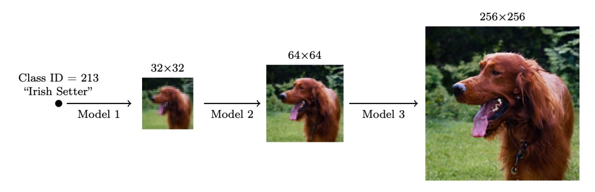 </p>
<p>Cascaded Diffusion Models outperform Big-GAN in FID and IS and VQ-VAE2 in Classification Accuracy Score.</p>
<table><thead><tr><th>ID</th><th>Year</th><th>Name</th><th>Note</th><th>Tags</th><th>Link</th></tr></thead><tbody>
<tr><td></td><td>2021</td><td>Cascaded Diffusion Models for High Fidelity Image Generation</td><td></td><td></td><td><a href="https://caterpillarstudygroup.github.io/ReadPapers/3.html">link</a></td></tr>
<tr><td></td><td>2022</td><td>Hierarchical Text-Conditional Image Generation with CLIP Latents</td><td></td><td></td><td></td></tr>
<tr><td></td><td>2022</td><td>Photorealistic Text-to-Image Diffusion Models with Deep Language Understanding</td><td></td><td></td><td></td></tr>
</tbody></table>
<p>P57</p>
<h2 id="latent-diffusion-models"><a class="header" href="#latent-diffusion-models">Latent Diffusion Models</a></h2>
<p>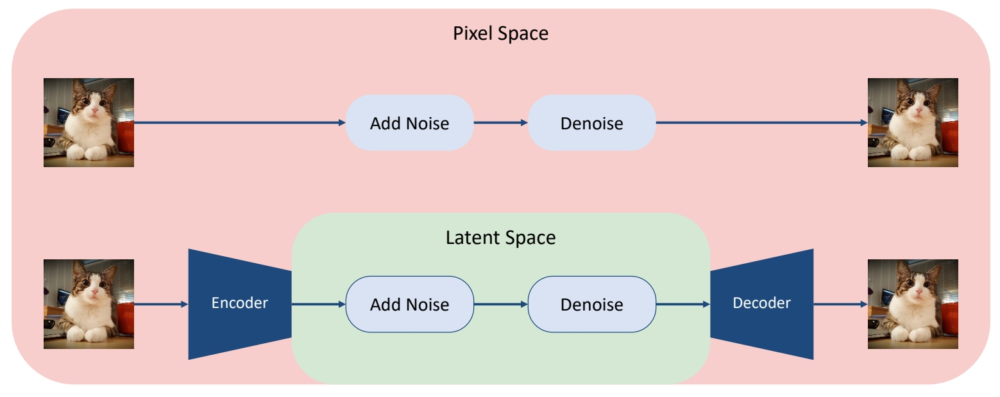 </p>
<h3 id="main-idea"><a class="header" href="#main-idea">Main Idea：</a></h3>
<p><strong>Variational autoencoder + score-based prior</strong></p>
<p>Encoder maps the input data to an embedding space<br />
Denoising diffusion models are applied in the latent space</p>
<p>P58</p>
<h3 id="advantages"><a class="header" href="#advantages">Advantages:</a></h3>
<p>(1) The distribution of latent embeddings close to Normal distribution \(\to \) <em><strong>Simpler denoising, Faster synthesis</strong></em>!<br />
(2) Latent space \(\to \) <em><strong>More expressivity and flexibility in design!</strong></em><br />
(3) Tailored Autoencoders \(\to \) <em><strong>More expressivity, Application to any data type (graphs, text, 3D data, etc.)!</strong></em></p>
<table><thead><tr><th>ID</th><th>Year</th><th>Name</th><th>Note</th><th>Tags</th><th>Link</th></tr></thead><tbody>
<tr><td></td><td>2021</td><td>Score-based generative modeling in latent space</td><td><strong>End-to-End</strong> Training objective<br> <br> ✅ 这篇文章对 VAE 和 diffusion 一起进行训练，文章的创新点是，利用 score matching 中的信息来计算 cross entropy.</td><td></td><td></td></tr>
<tr><td>45</td><td>2022</td><td>High-Resolution Image Synthesis with Latent Diffusion Models</td><td><strong>Two-stage</strong> Training，先训E&amp;D，再训diffusion。每次需要训练的网络都不大。</td><td></td><td><a href="https://caterpillarstudygroup.github.io/ReadPapers/45.html">link</a></td></tr>
<tr><td></td><td>2021</td><td>D2C: Diffusion-Denoising Models for Few-shot Conditional Generation</td><td></td><td></td><td></td></tr>
<tr><td></td><td>2022</td><td>Score-Guided Intermediate Layer Optimization: Fast Langevin Mixing for Inverse Problems</td><td></td><td></td><td></td></tr>
<tr><td></td><td>2022</td><td>Dimensionality-Varying Diffusion Process</td><td></td><td></td><td></td></tr>
</tbody></table>
<p>The efficiency and expressivity of latent diffusion models + open-source access fueled a large body of work in the community</p>
<h1 id="advanced-diffusion-models"><a class="header" href="#advanced-diffusion-models">Advanced Diffusion Models</a></h1>
<blockquote>
<p>✅ 这一部分没有讲</p>
</blockquote>
<p>P63</p>
<h2 id="ode-interpretation"><a class="header" href="#ode-interpretation">ODE interpretation</a></h2>
<p>把ODE看作是Deterministic generative process</p>
<p> </p>
<ul>
<li>DDIM sampler can be considered as an integration rule of the following ODE:</li>
</ul>
<p>$$
d\mathbf{\bar{x} } (t)=\epsilon ^{(t)} _ \theta(\frac{\mathbf{\bar{x} } (t)}{\sqrt{\eta ^2+1}} )d\eta (t); \mathbf{\bar{x} } =\mathbf{x} / \sqrt{\bar{a} },\eta = \sqrt{1-\bar{a}} / \sqrt{\bar{a } }
$$</p>
<ul>
<li>
<p>Karras et al. argue that the ODE of DDIM is favored, as the tangent of the solution trajectory always points 
towards the denoiser output.</p>
</li>
<li>
<p>This leads to largely linear solution trajectories with low curvature à Low curvature means less truncation 
errors accumulated over the trajectories. </p>
</li>
</ul>
<blockquote>
<p>🔎 <u>Song et al., “Denoising Diffusion Implicit Models”, ICLR 2021.</u><br />
🔎 <u>Karras et al., “Elucidating the Design Space of Diffusion-Based Generative Models”, arXiv 2022.</u></p>
</blockquote>
<table><thead><tr><th>ID</th><th>Year</th><th>Name</th><th>Note</th><th>Tags</th><th>Link</th></tr></thead><tbody>
<tr><td></td><td>2022</td><td><strong>Progressive distillation</strong> for fast sampling of diffusion models</td><td>通过修改参数化方式来提升“减少sampling steps”的稳定性。</td><td></td><td><a href="https://caterpillarstudygroup.github.io/ReadPapers/1.html">link</a></td></tr>
</tbody></table>
<p>P64</p>
<h2 id="momentum-based-diffusion"><a class="header" href="#momentum-based-diffusion">“Momentum-based” diffusion</a></h2>
<h5 id="introduce-a-velocity-variable-and-run-diffusion-in-extended-space"><a class="header" href="#introduce-a-velocity-variable-and-run-diffusion-in-extended-space">Introduce a velocity variable and run diffusion in extended space</a></h5>
<p> </p>
<p><u>Dockhorn et al., “Score-Based Generative Modeling with Critically-Damped Langevin Diffusion”, ICLR 2022.</u></p>
<p>P65</p>
<h2 id="additional-reading"><a class="header" href="#additional-reading">Additional Reading</a></h2>
<ul>
<li>Schrödinger Bridge:</li>
</ul>
<blockquote>
<p>🔎 Bortoli et al., <u>&quot;Diffusion Schrödinger Bridge&quot;,</u> NeurIPS 2021<br />
🔎 Chen et al., <u>“Likelihood Training of Schrödinger Bridge using Forward-Backward SDEs Theory”, </u>ICLR 2022</p>
</blockquote>
<ul>
<li>Diffusion Processes on Manifolds:</li>
</ul>
<blockquote>
<p>🔎 Bortoli et al., <u>&quot;Riemannian Score-Based Generative Modelling&quot;, </u>NeurIPS 2022</p>
</blockquote>
<ul>
<li>Cold Diffusion:</li>
</ul>
<blockquote>
<p>🔎 Bansal et al., <u>&quot;Cold Diffusion: Inverting Arbitrary Image Transforms Without Noise&quot;, </u>arXiv 2022</p>
</blockquote>
<ul>
<li>Diffusion for Corrupted Data:</li>
</ul>
<blockquote>
<p>🔎 Daras et al., <u>&quot;Soft Diffusion: Score Matching for General Corruptions&quot;, </u>TMLR 2023<br />
🔎 Delbracio and Milanfar, <u>&quot;Inversion by Direct Iteration: An Alternative to Denoising Diffusion for Image Restoration&quot;, </u>arXiv 2023<br />
🔎 Luo et al., <u>&quot;Image Restoration with Mean-Reverting Stochastic Differential Equations&quot;, </u>ICML 2023<br />
🔎 Liu et al., <u>“I2SB: Image-to-Image Schrödinger Bridge”, </u>ICML 2023</p>
</blockquote>
<ul>
<li>Blurring Diffusion Process:</li>
</ul>
<blockquote>
<p>🔎 Hoogeboom and Salimans, <u>&quot;Blurring Diffusion Models&quot;, </u>ICLR 2023<br />
🔎 Rissanen et al, <u>“Generative Modelling With Inverse Heat Dissipation”, </u>ICLR 2023</p>
</blockquote>
<hr />
<blockquote>
<p>本文出自CaterpillarStudyGroup，转载请注明出处。</p>
<p>https://caterpillarstudygroup.github.io/ImportantArticles/</p>
</blockquote>
<div style="break-before: page; page-break-before: always;"></div><p>P66</p>
<h1 id="conditional-generation-and-guidance"><a class="header" href="#conditional-generation-and-guidance">Conditional Generation and Guidance</a></h1>
<p>P67</p>
<blockquote>
<p>✅ 通常需要的是特定的生成，而不是随意的生成。因此需要通过control引入特定的需求。</p>
</blockquote>
<p>以下是文生图的例子：</p>
<p> </p>
<p><u>Ramesh et al., “Hierarchical Text-Conditional Image Generation with CLIP Latents”, arXiv 2022.</u><br />
<u>Saharia et al., “Photorealistic Text-to-Image Diffusion Models with Deep Language Understanding”, arXiv 2022.</u></p>
<p>P68</p>
<h2 id="conditioning-and-guidance-techniques"><a class="header" href="#conditioning-and-guidance-techniques">Conditioning and Guidance Techniques</a></h2>
<p>Explicit Conditions<br />
Classifier Guidance<br />
Classifier-free Guidance</p>
<p>P69</p>
<h1 id="explicit-conditions"><a class="header" href="#explicit-conditions">Explicit Conditions</a></h1>
<p>P70<br />
Conditional sampling can be considered as training \(p(\mathbf{x} |\mathbf{y} )\) where \(\mathbf{y}\) is the input conditioning (e.g., text) and \(\mathbf{x}\) is generated output (e.g., image)</p>
<p>Train the score model for \(\mathbf{x}\) conditioned on \(\mathbf{y}\) using:</p>
<p>$$
\mathbb{E} _ {(\mathbf{x,y} )\sim P\mathrm{data} (\mathbf{x,y} )}\mathbb{E} _ {\epsilon \sim \mathcal{N}(\mathbf{0,I} ) }\mathbb{E} _{t\sim u[0,T]}||\epsilon _ \theta (\mathbf{x} _ t,t;\mathbf{y} )- \epsilon ||^2_2 
$$</p>
<p>The conditional score is simply a U-Net with \(\mathbf{x}_t\) and \(\mathbf{y}\) together in the input.</p>
<p> </p>
<blockquote>
<p>✅ 需要 \((x，y)\) 的 pair data.</p>
</blockquote>
<p>P71</p>
<h1 id="classifier-guidance"><a class="header" href="#classifier-guidance">Classifier Guidance</a></h1>
<p>P72</p>
<h2 id="bayes-rule-in-action"><a class="header" href="#bayes-rule-in-action">Bayes’ Rule in Action</a></h2>
<p> </p>
<blockquote>
<p>✅ \(p(y)\) 与 \(\mathbf{x} _ t\) 无关，因此可以去掉。</p>
</blockquote>
<h2 id="训练方法"><a class="header" href="#训练方法">训练方法</a></h2>
<blockquote>
<p>✅ 第一步：需要一个训好的p(x)的 diffusion model 。<br />
✅ 第二步：训练一个分类网络，输入xt能够正确地预测控制条件（y不一定是离散的类别）。<br />
✅ 第三步：取第二步的梯度，用一定的权重\(w \)结合到第一步的forward过程中。\(w \)决定分类器的影响力。</p>
</blockquote>
<blockquote>
<p>✅ 只需要部分pair data和大量的非pair data。但需要单独训练一个分类器。</p>
</blockquote>
<h2 id="相关论文-1"><a class="header" href="#相关论文-1">相关论文</a></h2>
<table><thead><tr><th>ID</th><th>Year</th><th>Name</th><th>Note</th><th>Tags</th><th>Link</th></tr></thead><tbody>
<tr><td></td><td>2021</td><td>Score-Based Generative Modeling through Stochastic Differential Equations</td><td><a href="https://caterpillarstudygroup.github.io/ReadPapers/14.html">link</a></td><td></td><td></td></tr>
<tr><td></td><td>2021</td><td>Controllable and Compositional Generation with Latent-Space Energy-Based Models</td><td></td><td></td><td></td></tr>
<tr><td></td><td>2021</td><td>Diffusion models beat GANs on image synthesis</td><td></td><td></td><td></td></tr>
</tbody></table>
<h1 id="classifier-free-guidance"><a class="header" href="#classifier-free-guidance">Classifier-free Guidance</a></h1>
<table><thead><tr><th>ID</th><th>Year</th><th>Name</th><th>Note</th><th>Tags</th><th>Link</th></tr></thead><tbody>
<tr><td></td><td>2021</td><td>Classifier-Free Diffusion Guidance</td><td></td><td></td><td><a href="https://caterpillarstudygroup.github.io/ReadPapers/6.html">link</a></td></tr>
</tbody></table>
<div style="break-before: page; page-break-before: always;"></div><p>P76</p>
<h1 id="summary"><a class="header" href="#summary">Summary</a></h1>
<p>We reviewed diffusion fundamentals in 4 parts:</p>
<ul>
<li>Discrete-time diffusion models</li>
<li>Continuous-time diffusion models</li>
<li>Accelerated sampling from diffusion models</li>
<li>Guidance and conditioning.</li>
</ul>
<p>Next, we will review different applications and use cases of diffusion models after a break.</p>
<hr />
<blockquote>
<p>本文出自CaterpillarStudyGroup，转载请注明出处。</p>
<p>https://caterpillarstudygroup.github.io/ImportantArticles/</p>
</blockquote>
<div style="break-before: page; page-break-before: always;"></div><h1 id="architecture"><a class="header" href="#architecture">Architecture</a></h1>
<p>P5</p>
<h2 id="u-net-based-diffusion-architecture"><a class="header" href="#u-net-based-diffusion-architecture">U-Net Based Diffusion Architecture</a></h2>
<h3 id="u-net-architecture"><a class="header" href="#u-net-architecture">U-Net Architecture</a></h3>
<p> </p>
<blockquote>
<p>✅ U-Net的是Large Scale Image Diffusion Model中最常用的backbone。</p>
</blockquote>
<blockquote>
<p>🔎 Ronneberger et al., <u>“U-Net: Convolutional Networks for Biomedical Image Segmentation”, </u>MICCAI 2015</p>
</blockquote>
<h3 id="pipeline"><a class="header" href="#pipeline">Pipeline</a></h3>
<p> </p>
<blockquote>
<p>✅ 包含Input、U-Net backbone、Condition。<br />
✅ Condition 通常用 Concat 或 Cross attention 的方式与 Content 相结合。</p>
</blockquote>
<table><thead><tr><th>ID</th><th>Year</th><th>Name</th><th>Note</th><th>Tags</th><th>Link</th></tr></thead><tbody>
<tr><td>45</td><td>2022</td><td>High-Resolution Image Synthesis with Latent Diffusion Models</td><td><strong>Stable Diffusion</strong>, U-Net Based Diffusion Architecture<br>✅ (1)：在 latent space 上工作<br> ✅ (2)：引入多种 condition．</td><td>UNet</td><td><a href="https://caterpillarstudygroup.github.io/ReadPapers/45.html">link</a></td></tr>
<tr><td></td><td>2022</td><td>Photorealistic text-to-image diffusion models with deep language understanding</td><td>Imagen</td><td></td><td></td></tr>
<tr><td></td><td>2022</td><td>ediffi: Text-to-image diffusion models with an ensemble of expert denoiser</td><td>eDiff-I</td><td></td><td></td></tr>
</tbody></table>
<p>P7</p>
<h2 id="transformer-architecture"><a class="header" href="#transformer-architecture">Transformer Architecture</a></h2>
<h3 id="vision-transformervit"><a class="header" href="#vision-transformervit">Vision Transformer(ViT)</a></h3>
<p> </p>
<p>Dosovitskiy et al., <u>“An image is worth 16x16 words: Transformers for image recognition at scale”, </u>ICLR 2021</p>
<h3 id="pipeline-1"><a class="header" href="#pipeline-1">Pipeline</a></h3>
<p> </p>
<blockquote>
<p>✅ 特点：<br />
✅ 1. 把 image patches 当作 token.<br />
✅ 2. 在 Shallow layer 与 deep layer 之间引入 long skip connection.</p>
</blockquote>
<p>Bao et al.,<u> &quot;All are Worth Words: a ViT Backbone for Score-based Diffusion Models&quot;, </u>arXiv 2022</p>
<p>P8</p>
<h3 id="application"><a class="header" href="#application">Application</a></h3>
<table><thead><tr><th>ID</th><th>Year</th><th>Name</th><th>Note</th><th>Tags</th><th>Link</th></tr></thead><tbody>
<tr><td></td><td>2022</td><td>Scalable Diffusion Models with Transformers</td><td></td><td></td><td></td></tr>
<tr><td></td><td>2023</td><td>One Transformer Fits All Distributions in Multi-Modal Diffusion at Scale</td><td></td><td></td><td></td></tr>
<tr><td></td><td>2023</td><td>simple diffusion: End-to-end diffusion for high resolution images</td><td></td><td></td><td></td></tr>
</tbody></table>
<div style="break-before: page; page-break-before: always;"></div><p>P9</p>
<h1 id="图像编辑"><a class="header" href="#图像编辑">图像编辑</a></h1>
<p>P10</p>
<h2 id="gaussian-noise方法"><a class="header" href="#gaussian-noise方法">Gaussian Noise方法</a></h2>
<table><thead><tr><th>ID</th><th>Year</th><th>Name</th><th>Note</th><th>Tags</th><th>Link</th></tr></thead><tbody>
<tr><td></td><td>2022</td><td>SDEdit: Guided Image Synthesis and Editing with Stochastic Differential Equations</td><td></td><td><a href="https://caterpillarstudygroup.github.io/ReadPapers/23.html">link</a></td><td></td></tr>
</tbody></table>
<h2 id="ddim-inversion方法"><a class="header" href="#ddim-inversion方法">DDIM Inversion方法</a></h2>
<table><thead><tr><th>ID</th><th>Year</th><th>Name</th><th>Note</th><th>Tags</th><th>Link</th></tr></thead><tbody>
<tr><td>23</td><td>2023</td><td>Dual diffusion implicit bridges for image-to-image translation</td><td></td><td><a href="https://caterpillarstudygroup.github.io/ReadPapers/23.html">link</a></td><td></td></tr>
<tr><td>24</td><td>2023</td><td>DiffEdit: Diffusion-based semantic image editing with mask guidance</td><td></td><td><a href="https://caterpillarstudygroup.github.io/ReadPapers/24.html">link</a></td><td></td></tr>
<tr><td>25</td><td>2023</td><td>Imagic: Text-Based Real Image Editing with Diffusion Models</td><td></td><td><a href="https://caterpillarstudygroup.github.io/ReadPapers/25.html">link</a></td><td></td></tr>
</tbody></table>
<h2 id="attention-based-方法"><a class="header" href="#attention-based-方法">Attention based 方法</a></h2>
<table><thead><tr><th>ID</th><th>Year</th><th>Name</th><th>Note</th><th>Tags</th><th>Link</th></tr></thead><tbody>
<tr><td></td><td>2023</td><td>Prompt-to-Prompt Image Editing with Cross-Attention Control</td><td>通过控制生成过程中的 attention maps进行图像编辑</td><td>attention控制</td><td><a href="https://caterpillarstudygroup.github.io/ReadPapers/20.html">link</a></td></tr>
<tr><td></td><td>2023</td><td>NULL-text Inversion for Editing Real Images Using Guided Diffusion Models</td><td>针对真实图像（非生成图像）的编辑，以<a href="https://caterpillarstudygroup.github.io/ReadPapers/6.html">CFG</a>为基础，fix condition分支，优化无condition分支，使其embedding向condition分支的embedding靠近</td><td>attention控制</td><td></td></tr>
<tr><td></td><td></td><td>Plug-and-Play Diffusion Features for Text-Driven Image-to-Image Translation</td><td>在上一篇的基础上，通过attention注入的方式加速上述流程</td><td>attention控制</td><td></td></tr>
<tr><td></td><td>2023</td><td>InstructPix2Pix: Learning to Follow Image Editing Instructions</td><td>在上一篇的基础上，通过attention注入的方式加速上述流程</td><td>attention控制</td><td></td></tr>
</tbody></table>
<p>P32</p>
<h1 id="特定对象定制化的图像生成"><a class="header" href="#特定对象定制化的图像生成">特定对象定制化的图像生成</a></h1>
<table><thead><tr><th>ID</th><th>Year</th><th>Name</th><th>Note</th><th>Tags</th><th>Link</th></tr></thead><tbody>
<tr><td>52</td><td>2024</td><td>Mix-of-Show: Decentralized Low-Rank Adaptation for Multi-Concept Customization of Diffusion Models</td><td>多个特定对象的图像生成，让多个特定的对象生成到一张图像中，并用2D pose控制对象的动作</td><td>TI, LoRA</td><td><a href="https://caterpillarstudygroup.github.io/ReadPapers/51.html">link</a></td></tr>
<tr><td>62</td><td>2023</td><td>Ruiz et al., “DreamBooth: Fine Tuning Text-to-Image Diffusion Models for Subject-Driven Generation,”</td><td></td><td></td><td><a href="https://caterpillarstudygroup.github.io/ReadPapers/62.html">link</a></td></tr>
<tr><td>63</td><td>2023</td><td>Gal et al., <u>&quot;An Image is Worth One Word: Personalizing Text-to-Image Generation using Textual Inversion&quot;</td><td></td><td></td><td><a href="https://caterpillarstudygroup.github.io/ReadPapers/63.html">link</a></td></tr>
<tr><td><strong>38</strong></td><td>2021</td><td>Lora: Low-rank adaptation of large language models</td><td>对已训好的大模型进行微调，生成想要的风格。学习其中的残差。残差通常可以用low rank Matrix来拟合，因此称为low-rank adaptation。low rank的好处是要训练或调整的参数非常少。</td><td></td><td><a href="https://caterpillarstudygroup.github.io/ReadPapers/38.html">link</a></td></tr>
<tr><td></td><td></td><td>Lora + Dreambooth (by Simo Ryu)</td><td></td><td></td><td><a href="https://github.com/cloneofsimo/lora">https://github.com/cloneofsimo/lora</a></td></tr>
<tr><td></td><td>2023</td><td>Mix-of-Show: Decentralized Low-Rank Adaptation for Multi-Concept Customization of Diffusion Models</td><td>将多个LoRA融合到一个模型时，解决LoRA之间的冲突问题。</td><td></td><td></td></tr>
</tbody></table>
<p>P43</p>
<h1 id="多个特定对象定制化的图像生成"><a class="header" href="#多个特定对象定制化的图像生成">多个特定对象定制化的图像生成</a></h1>
<table><thead><tr><th>ID</th><th>Year</th><th>Name</th><th>Note</th><th>Tags</th><th>Link</th></tr></thead><tbody>
<tr><td>52</td><td>2024</td><td>Mix-of-Show: Decentralized Low-Rank Adaptation for Multi-Concept Customization of Diffusion Models</td><td>多个特定对象的图像生成，让多个特定的对象生成到一张图像中，并用2D pose控制对象的动作</td><td>TI, LoRA</td><td><a href="https://caterpillarstudygroup.github.io/ReadPapers/51.html">link</a></td></tr>
<tr><td>64</td><td>2023</td><td>Kumari et al., <u>&quot;Multi-Concept Customization of Text-to-Image Diffusion&quot;</td><td></td><td></td><td><a href="https://caterpillarstudygroup.github.io/ReadPapers/64.html">link</a></td></tr>
<tr><td></td><td>2023</td><td>Tewel et al., Key-Locked Rank One Editing for Text-to-Image Personalization&quot;</td><td>✅ 方法：dynamic rank one update. <br> ✅ Perffusion 解决 Image Personalization 的 overfitting 问题的方法：  <br> ✅ (1) 训练时，Introducing new <em>xxxx</em> that locks the new concepts cross-attention keys to their sub-ordinate category.    <br> ✅ (2) 推断时，引入 a gate rank one approach 可用于控制 the learned concept的影响力。    <br> ✅ (3) 允许 medel 把不同的 concept 结合到一起，并学到不同concept 之间的联系。<br>Results: 可以很好地model the interaction of the two conception。</td><td></td><td></td></tr>
<tr><td>65</td><td>2023</td><td>Mou et al., T2I-Adapter: Learning Adapters to Dig out More Controllable Ability for Text-to-Image Diffusion Models&quot;,</td><td></td><td></td><td><a href="https://caterpillarstudygroup.github.io/ReadPapers/65.html">link</a></td></tr>
<tr><td></td><td>2013</td><td>Adding Conditional Control to Text-to-Image Diffusion Models</td><td></td><td></td><td></td></tr>
<tr><td>66</td><td>2023</td><td>Li et al., <u>&quot;GLIGEN: Open-Set Grounded Text-to-Image Generation&quot;,</u></td><td></td><td></td><td><a href="https://caterpillarstudygroup.github.io/ReadPapers/66.html">link</a></td></tr>
</tbody></table>
<p>P64</p>
<p>P67</p>
<h1 id="other-applications"><a class="header" href="#other-applications">Other applications</a></h1>
<p>P68</p>
<h2 id="your-diffusion-model-is-secretly-a-zero-shot-classifier"><a class="header" href="#your-diffusion-model-is-secretly-a-zero-shot-classifier">Your Diffusion Model is Secretly a Zero-Shot Classifier</a></h2>
<blockquote>
<p>✅ 一个预训练好的 diffusion model （例如stable diffusion model），无须额外训练可以用作分类器，甚至能完成 Zero-shot 的分类任务。</p>
</blockquote>
<p>Li et al., <u>&quot;Your Diffusion Model is Secretly a Zero-Shot Classifier&quot;,</u> arXiv 2023</p>
<h3 id="pipeline-2"><a class="header" href="#pipeline-2">Pipeline</a></h3>
<p></p>
<blockquote>
<p>✅ 输入图像\(x\)，用随机噪声\(\epsilon  \)加噪；再用 condition c 预测噪声 \(\epsilon  _\theta \)。优化条件 C 使得 \(\epsilon  _\theta \) 最接近 \(\epsilon \). 得到的 C 就是分类。</p>
</blockquote>
<p>P69</p>
<h2 id="improving-robustness-using-generated-data"><a class="header" href="#improving-robustness-using-generated-data">Improving Robustness using Generated Data</a></h2>
<blockquote>
<p>✅ 使用 diffusion Model 做数据增强。</p>
</blockquote>
<p></p>
<p><strong>Overview of the approach:</strong></p>
<ol>
<li>train a generative model and a non￾robust classifier, which are used to provide pseudo-labels to the generated data.</li>
<li>The generated and original training data are combined to train a robust classifier.</li>
</ol>
<p>Gowal et al., <u>&quot;Improving Robustness using Generated Data&quot;,</u> NeurIPS 2021</p>
<p>P70</p>
<h2 id="better-diffusion-models-further-improve-adversarial-training"><a class="header" href="#better-diffusion-models-further-improve-adversarial-training">Better Diffusion Models Further Improve Adversarial Training</a></h2>
<p></p>
<p>Wang et al., <u>&quot;Better Diffusion Models Further Improve Adversarial Training&quot;,</u> ICML 2023</p>
<p>P72</p>
<h1 id="reference-1"><a class="header" href="#reference-1">Reference</a></h1>
<ul>
<li>Bao et al., <u>&quot;All are Worth Words: a ViT Backbone for Score-based Diffusion Models&quot;,</u> arXiv 2022</li>
<li>Peebles and Xie, <u>&quot;Scalable Diffusion Models with Transformers&quot;,</u> arXiv 2022</li>
<li>Bao et al., <u>&quot;One Transformer Fits All Distributions in Multi-Modal Diffusion at Scale&quot;,</u> arXiv 2023</li>
<li>Jabri et al., <u>&quot;Scalable Adaptive Computation for Iterative Generation&quot;,</u> arXiv 2022</li>
<li>Hoogeboomet al., <u>&quot;simple diffusion: End-to-end diffusion for high resolution images&quot;,</u> arXiv 2023</li>
<li>Meng et al., <u>&quot;SDEdit: Guided Image Synthesis and Editing with Stochastic Differential Equations&quot;,</u> ICLR 2022</li>
<li>Li et al., <u>&quot;Efficient Spatially Sparse Inference for Conditional GANs and Diffusion Models&quot;,</u> NeurIPS 2022</li>
<li>Avrahami et al., <u>&quot;Blended Diffusion for Text-driven Editing of Natural Images&quot;,</u> CVPR 2022</li>
<li>Hertz et al., <u>&quot;Prompt-to-Prompt Image Editing with Cross-Attention Control&quot;,</u> ICLR 2023</li>
<li>Kawar et al., <u>&quot;Imagic: Text-Based Real Image Editing with Diffusion Models&quot;,</u> CVPR 2023</li>
<li>Couairon et al., <u>&quot;DiffEdit: Diffusion-based semantic image editing with mask guidance&quot;,</u> ICLR 2023</li>
<li>Sarukkai et al., <u>&quot;Collage Diffusion&quot;,</u>  arXiv 2023</li>
<li>Bar-Tal et al., <u>&quot;MultiDiffusion: Fusing Diffusion Paths for Controlled Image Generation&quot;,</u>  ICML 2023</li>
<li>Gal et al., <u>&quot;An Image is Worth One Word: Personalizing Text-to-Image Generation using Textual Inversion&quot;,</u> ICLR 2023</li>
<li>Ruiz et al., <u>&quot;DreamBooth: Fine Tuning Text-to-Image Diffusion Models for Subject-Driven Generation&quot;,</u> CVPR 2023</li>
<li>Kumari et al., <u>&quot;Multi-Concept Customization of Text-to-Image Diffusion&quot;,</u>  CVPR 2023</li>
<li>Tewel et al., <u>&quot;Key-Locked Rank One Editing for Text-to-Image Personalization&quot;,</u>  SIGGRAPH 2023</li>
<li>Zhao et al., <u>&quot;A Recipe for Watermarking Diffusion Models&quot;,</u>  arXiv 2023</li>
<li>Hu et al., <u>&quot;LoRA: Low-Rank Adaptation of Large Language Models&quot;,</u> ICLR 2022</li>
<li>Li et al., <u>&quot;GLIGEN: Open-Set Grounded Text-to-Image Generation&quot;,</u> CVPR 2023</li>
<li>Avrahami et al., <u>&quot;SpaText: Spatio-Textual Representation for Controllable Image Generation&quot;,</u> CVPR 2023</li>
<li>Zhang and Agrawala, <u>&quot;Adding Conditional Control to Text-to-Image Diffusion Models&quot;,</u> arXiv 2023</li>
<li>Mou et al., <u>&quot;T2I-Adapter: Learning Adapters to Dig out More Controllable Ability for Text-to-Image Diffusion Models&quot;,</u> arXiv 2023</li>
<li>Orgad et al., <u>&quot;Editing Implicit Assumptions in Text-to-Image Diffusion Models&quot;,</u> arXiv 2023</li>
<li>Han et al., <u>&quot;SVDiff: Compact Parameter Space for Diffusion Fine-Tuning&quot;,</u> arXiv 2023</li>
<li>Xie et al., <u>&quot;DiffFit: Unlocking Transferability of Large Diffusion Models via Simple Parameter￾Efficient Fine-Tuning&quot;,</u> rXiv 2023</li>
<li>Saharia et al., <u>&quot;Palette: Image-to-Image Diffusion Models&quot;,</u> SIGGRAPH 2022</li>
<li>Whang et al., <u>&quot;Deblurring via Stochastic Refinement&quot;,</u> CVPR 2022</li>
<li>Xu et al., <u>&quot;Open-Vocabulary Panoptic Segmentation with Text-to-Image Diffusion Models&quot;,</u> arXiv 2023</li>
<li>Saxena et al., <u>&quot;Monocular Depth Estimation using Diffusion Models&quot;,</u> arXiv 2023</li>
<li>Li et al., <u>&quot;Your Diffusion Model is Secretly a Zero-Shot Classifier&quot;,</u> arXiv 2023</li>
<li>Gowal et al., <u>&quot;Improving Robustness using Generated Data&quot;,</u> NeurIPS 2021</li>
<li>Wang et al., <u>&quot;Better Diffusion Models Further Improve Adversarial Training&quot;,</u> ICML 2023</li>
</ul>
<hr />
<blockquote>
<p>本文出自CaterpillarStudyGroup，转载请注明出处。</p>
<p>https://caterpillarstudygroup.github.io/ImportantArticles/</p>
</blockquote>
<div style="break-before: page; page-break-before: always;"></div><h1 id="图像去噪图像超分图像补全"><a class="header" href="#图像去噪图像超分图像补全">图像去噪/图像超分/图像补全</a></h1>
<div style="break-before: page; page-break-before: always;"></div><p>P68</p>
<h1 id="diffusion-models-for-large-contents"><a class="header" href="#diffusion-models-for-large-contents">Diffusion Models for Large Contents</a></h1>
<p>同样的方法也可用于Applications such as long images, looped motion, 360 images…</p>
<ul>
<li>Suppose model is trained on small, squared images, how to extend it to larger images?</li>
<li>Outpainting is always a solution, but not a very efficient one!</li>
</ul>
<p>Let us generate this image with a diffusion model only trained on squared regions:</p>
<p></p>
<ol>
<li>Generate the center region \(q(\mathbf{x} _ 1,\mathbf{x} _ 2)\)</li>
<li>Generate the <strong>surrounding region conditioned on parts of the center image</strong> \(q(\mathbf{x} _ 3|\mathbf{x} _ 2)\)</li>
</ol>
<p></p>
<p>Latency scales linearly with the content size!</p>
<blockquote>
<p>✅ 根据左边的图生成右边的图，存在的问题：慢<br />
✅ 直接生成大图没有这样的数据。<br />
✅ 并行化的生成。</p>
</blockquote>
<p>P69</p>
<h2 id="diffcollage"><a class="header" href="#diffcollage">DiffCollage</a></h2>
<ul>
<li>Unlike autoregressive models, diffusion models can generate large contents <strong>in parallel</strong>!</li>
</ul>
<p></p>
<p>P70</p>
<ul>
<li>A “large” diffusion model from “small” diffusion models!</li>
</ul>
<p></p>
<p></p>
<p>P71</p>
<h2 id="more-works"><a class="header" href="#more-works">More Works</a></h2>
<table><thead><tr><th>ID</th><th>Year</th><th>Name</th><th>Note</th><th>Tags</th><th>Link</th></tr></thead><tbody>
<tr><td></td><td>2023</td><td>Zhang et al., <u>&quot;DiffCollage: Parallel Generation of Large Content with Diffusion Models&quot;</td><td></td><td></td><td></td></tr>
<tr><td></td><td>2023</td><td>Jiménez, <u>&quot;Mixture of Diffusers for scene composition and high resolution image generation&quot;,</u> arXiv 2023</td><td>- Based on similar ideas but differ in how overlapping regions are mixed.<br> ✅ 这种并行化方法可以用于各种 overlapping 的场景。</td><td></td><td></td></tr>
<tr><td></td><td>2023</td><td>Bar-Tal et al., <u>&quot;MultiDiffusion: Fusing Diffusion Paths for Controlled Image Generation&quot;,</u> ICML 2023</td><td></td><td></td><td></td></tr>
</tbody></table>
<hr />
<blockquote>
<p>本文出自CaterpillarStudyGroup，转载请注明出处。</p>
<p>https://caterpillarstudygroup.github.io/ImportantArticles/</p>
</blockquote>
<div style="break-before: page; page-break-before: always;"></div><h1 id="diffusion-on-various-3d-representations"><a class="header" href="#diffusion-on-various-3d-representations">Diffusion on various 3D representations</a></h1>
<p>P12</p>
<h2 id="3d-shape-generation-and-completion-through-point-voxel-diffusion"><a class="header" href="#3d-shape-generation-and-completion-through-point-voxel-diffusion">3D Shape Generation and Completion through Point-Voxel Diffusion</a></h2>
<p>A set of points with location information.</p>
<p></p>
<p></p>
<p>Zhou et al., <u>&quot;3D Shape Generation and Completion through Point-Voxel Diffusion&quot;,</u> ICCV 2021<br />
Liu et al, <u>&quot;Point-Voxel CNN for Efficient 3D Deep Learning&quot;,</u> NeurIPS 2019</p>
<blockquote>
<p>✅ 分支1：逐顶点的 MLP (对应图中 b)<br />
✅ 分支2：VOX 可以看作是低分辨率的 points<br />
✅ 优点是结构化，可用于 CNN<br />
❓ VOX → points，低分辨到高分辨率要怎么做？<br />
❓ 怎么把 voxel 内的点转换为 voxel 的特征？</p>
</blockquote>
<p>P13</p>
<h3 id="result"><a class="header" href="#result">Result</a></h3>
<p></p>
<blockquote>
<p>✅ Completion：深度图 → 完整点<br />
✅ 方法：(1) 基于深度图生成点云 (2) 用 inpainting 技术补全<br />
✅ generation 和 completion 是两种不同的 task.</p>
</blockquote>
<p>P14</p>
<h2 id="lion"><a class="header" href="#lion">LION</a></h2>
<p></p>
<p>Zeng et al., <u>&quot;LION: Latent Point Diffusion Models for 3D Shape Generation&quot;,</u> NeurIPS 2022</p>
<blockquote>
<p>✅ 特点：<br />
✅ 1、latent diffusion model for point clouds.<br />
✅ 2、point-voxel CNN 架构，用于把 shape 编码成 latent shape 及 lantent point.<br />
✅ 3、diffusion model 把 latent point 重建出原始点。</p>
</blockquote>
<p>P15</p>
<h2 id="point-e"><a class="header" href="#point-e">Point-E</a></h2>
<p>Point-E uses a synthetic view from fine-tuned GLIDE, and then ”lifts” the image to a 3d point cloud.</p>
<p></p>
<p></p>
<p>Nichol et al., <u>&quot;Point-E: A System for Generating 3D Point Clouds from Complex Prompts&quot;,</u> arXiv 2022</p>
<blockquote>
<p>✅ point E task：文生成点云。<br />
✅ 第1步：文生图，用 fine-tuned GLIDE<br />
✅ 第2步：图生点，用 transformer-based diffusion model.</p>
</blockquote>
<p>P16</p>
<h1 id="diffusion-models-for-signed-distance-functions"><a class="header" href="#diffusion-models-for-signed-distance-functions">Diffusion Models for Signed Distance Functions</a></h1>
<p>SDF is a function representation of a surface.<br />
For each location x, |SDF(x)| = smallest distance to any point on the surface.</p>
<p></p>
<p>P17</p>
<h2 id="neural-wavelet-domain-diffusion-for-3d-shape-generation"><a class="header" href="#neural-wavelet-domain-diffusion-for-3d-shape-generation">Neural Wavelet-domain Diffusion for 3D Shape Generation</a></h2>
<ul>
<li>Memory of SDF grows cubically with resolution</li>
<li>Wavelets can be used for compression!</li>
<li>Diffusion for coarse coefficients, then predict detailed ones.</li>
</ul>
<p></p>
<p></p>
<p>Hui et al., <u>&quot;Neural Wavelet-domain Diffusion for 3D Shape Generation&quot;,</u> arXiv 2022</p>
<blockquote>
<p>✅ 这里说的 SDF，是用离散的方式来记录每个点的 distance.<br />
✅ Wavelet 把 SDF 变为 coarse 系数，diffusion model 生成 coarse 系数，再通过另一模型变为 detailed</p>
</blockquote>
<p>P18</p>
<h2 id="diffusionsdf"><a class="header" href="#diffusionsdf">DiffusionSDF</a></h2>
<p></p>
<p><strong>Latent space diffusion for SDFs, where conditioning can be provided with cross attention</strong></p>
<p>Chou et al., <u>&quot;DiffusionSDF: Conditional Generative Modeling of Signed Distance Functions&quot;,</u> arXiv 2022</p>
<blockquote>
<p>✅ 原理与上一页相似，只是把 waveles 换成了 VAE.</p>
</blockquote>
<p>P19</p>
<h1 id="diffusion-models-for-nerf"><a class="header" href="#diffusion-models-for-nerf">Diffusion Models for NeRF</a></h1>
<p>Neural Radiance Fields (NeRF) is another representation of a 3D object.</p>
<p></p>
<blockquote>
<p>✅ NeRF：用体的方式来描述 3D 物体<br />
✅ (1) 从 diffusion 中提取 image （2）从 image 计算 loss (3) loss 更新 image (4) image 更新 NeRF．<br />
✅ \(（x,y,z,\theta ,\phi ）\) 是每个点在向量中的表示，其中前三维是 world coordinate，后面两维是 viewing direction<br />
✅ density 描述这个点有多透明。<br />
✅ F 是一个小型的网络，例如 MLP.</p>
</blockquote>
<p>P20</p>
<p><br />
<strong>NeRF</strong><br />
(Fully implicit)</p>
<p><br />
<strong>Voxels</strong><br />
(Explicit / hybrid)</p>
<p><br />
<strong>Triplanes</strong><br />
(Factorized, hybrid)</p>
<p>Image from EG3D paper.</p>
<p>P21</p>
<blockquote>
<p>✅ Nerf 可以有三种表示形式</p>
</blockquote>
<ul>
<li>Triplanes, regularized ReLU Fields, the MLP of NeRFs...</li>
<li>A good representation is important!</li>
</ul>
<p><br />
Triplane diffusion</p>
<p><br />
Regularized ReLU Fields</p>
<p><br />
Implicit MLP of NeRFs</p>
<p>Shue et al., <u>&quot;3D Neural Field Generation using Triplane Diffusion&quot;,</u> arXiv 2022<br />
Yang et al., <u>&quot;Learning a Diffusion Prior for NeRFs&quot;,</u> ICLR Workshop 2023<br />
Jun and Nichol, <u>&quot;Shap-E: Generating Conditional 3D Implicit Functions&quot;,</u> arXiv 2023</p>
<blockquote>
<p>✅ 这三种表示形式都可以与 diffuson 结合。<br />
✅ 好的表示形式对diffusion 的效果很重要。</p>
</blockquote>
<hr />
<blockquote>
<p>本文出自CaterpillarStudyGroup，转载请注明出处。</p>
<p>https://caterpillarstudygroup.github.io/ImportantArticles/</p>
</blockquote>
<div style="break-before: page; page-break-before: always;"></div><p>P23</p>
<p>由于缺少3D数据，把2D T2I Base Model作为先验来实现3D生成。</p>
<h1 id="sds"><a class="header" href="#sds">SDS</a></h1>
<table><thead><tr><th>ID</th><th>Year</th><th>Name</th><th>Note</th><th>Tags</th><th>Link</th></tr></thead><tbody>
<tr><td><strong>68</strong></td><td>2023</td><td>Poole et al., &quot;DreamFusion: Text-to-3D using 2D Diffusion&quot;</td><td></td><td>SDS</td><td><a href="https://caterpillarstudygroup.github.io/ReadPapers/68.html">link</a></td></tr>
<tr><td></td><td>2023</td><td>Lin et al., <u>&quot;Magic3D: High-Resolution Text-to-3D Content Creation&quot;</td><td>2x speed and higher resolution <br>Accelerate NeRF with Instant-NGP, for coarse representations. <br> Optimize a fine mesh model with differentiable renderer.<br> ✅ Instant NGP 代替左下的 Nerf MLP．以 coarse representetion 作为 condition 来生成 fine mesh model.</td><td>Extensions to SDS<br></td><td></td></tr>
<tr><td></td><td>2023</td><td>Wang et al.,&quot;Score Jacobian Chaining: Lifting Pretrained 2D Diffusion Models for 3D Generation&quot;,</td><td></td><td>Alternative to SDS</td><td></td></tr>
<tr><td></td><td>2023</td><td>Wang et al., &quot;ProlificDreamer: High-Fidelity and Diverse Text-to-3D Generation with Variational Score Distillation&quot;,</td><td></td><td>Alternative to SDS</td><td></td></tr>
</tbody></table>
<p>P31</p>
<h1 id="alternative-to-sds-score-jacobian-chaining"><a class="header" href="#alternative-to-sds-score-jacobian-chaining">Alternative to SDS: Score Jacobian Chaining</a></h1>
<p>A different formulation, motivated from approximating 3D score.</p>
<p></p>
<p>In principle, the diffusion model is the noisy 2D score (over clean images),<br />
but in practice, the diffusion model suffers from out-of-distribution (OOD) issues!</p>
<p>For diffusion model on noisy images, <strong>the non-noisy images are OOD</strong>!</p>
<blockquote>
<p>✅ 2D sample, 3D score</p>
</blockquote>
<p>P32</p>
<h2 id="score-jacobian-chaining"><a class="header" href="#score-jacobian-chaining">Score Jacobian Chaining</a></h2>
<p>SJC approximates noisy score with “Perturb-and-Average Scoring”, which is not present in SDS.</p>
<ul>
<li>Use score model on multiple noise-perturbed data, then average it.</li>
</ul>
<p></p>
<blockquote>
<p>✅ 通过这种方法来近似 clean image 的输出，解决 clean image 的 OOD 问题。</p>
</blockquote>
<p>P33</p>
<h2 id="sjc-and-sds"><a class="header" href="#sjc-and-sds">SJC and SDS</a></h2>
<p>SJC is a competitive alternative to SDS.</p>
<p> </p>
<p>P34</p>
<h1 id="alternative-to-sds-prolificdreamer"><a class="header" href="#alternative-to-sds-prolificdreamer">Alternative to SDS: ProlificDreamer</a></h1>
<ul>
<li>SDS-based method often set classifier-guidance weight to 100, which limits the “diversity” of the generated samples.</li>
<li>ProlificDreamer reduces this to 7.5, leading to diverse samples.</li>
</ul>
<p> </p>
<p>P35</p>
<h2 id="prolificdreamer-and-variational-score-distillation"><a class="header" href="#prolificdreamer-and-variational-score-distillation">ProlificDreamer and Variational Score Distillation</a></h2>
<p>Instead of maximizing the likelihood under diffusion model, VSD minimizes the KL divergence via variational inference.</p>
<p>$$
\begin{matrix}
\min_{\mu } D _ {\mathrm{KL} }(q^\mu _ 0(\mathbf{x} _ 0|y)||p _ 0(\mathbf{x} _ 0|y)). \\
\quad \mu \quad \text{is the distribution of NeRFs} .
\end{matrix}
$$</p>
<p>Suppose is a \(\theta _ \tau \sim \mu \) NeRF sample, then VSD simulates this ODE:</p>
<p> </p>
<ul>
<li>Diffusion model can be used to approximate score of noisy real images.</li>
<li>How about noisy rendered images?   sss</li>
</ul>
<blockquote>
<p>✅ 第一项由 diffusion model 得到，在此处当作 GT．</p>
</blockquote>
<p>P36</p>
<ul>
<li>Learn another diffusion model to approximate the score of noisy rendered images!</li>
</ul>
<p></p>
<blockquote>
<p>✅ 使用 LoRA 近第二项。</p>
</blockquote>
<p>P37</p>
<h2 id="why-does-vsd-work-in-practice"><a class="header" href="#why-does-vsd-work-in-practice">Why does VSD work in practice?</a></h2>
<ul>
<li>
<p>The valid text-to-image NeRFs form a distribution with infinite possibilities!</p>
</li>
<li>
<p>In SDS, epsilon is the score of noisy “dirac distribution” over finite renders, which converges to the true score with infinite renders!</p>
</li>
<li>
<p>In VSD, the LoRA model aims to <strong>represent the (true) score of noisy distribution over infinite number of renders!</strong></p>
</li>
<li>
<p>If the generated NeRF distribution is only one point and LoRA overfits perfectly, then VSD = SDS!</p>
</li>
<li>
<p>But LoRA has good generalization (and learns from a trajectory of NeRFs), so closer to the true score!</p>
</li>
<li>
<p>This is analogous to</p>
<ul>
<li>Representing the dataset score via mixture of Gaussians on the dataset (SDS), versus</li>
<li>Representing the dataset score via the LoRA UNet (VSD)</li>
</ul>
</li>
</ul>
<hr />
<blockquote>
<p>本文出自CaterpillarStudyGroup，转载请注明出处。</p>
<p>https://caterpillarstudygroup.github.io/ImportantArticles/</p>
</blockquote>
<div style="break-before: page; page-break-before: always;"></div><p>P40</p>
<h2 id="3dim"><a class="header" href="#3dim">3DiM</a></h2>
<ul>
<li>Condition on a frame and two poses, predict another frame.</li>
</ul>
<p></p>
<p>UNet with frame cross-attention</p>
<p></p>
<p>Sample based on stochastic conditions,<br />
allowing the use of multiple conditional frames.</p>
<p>Watson et al., <u>&quot;Novel View Synthesis with Diffusion Models&quot;,</u> ICLR 2023</p>
<blockquote>
<p>✅ UNet，2 branch，分别用于原始角度和要生成的角度。<br />
✅ 引入 step 2 是为了内容一致性。<br />
✅ frame：坐标系。在不同的坐标系下看到的是不同的视角。<br />
❓ 为什么有两个pose？<br />
✅ 每个 frame 的内部由 cross-attention 连接。</p>
</blockquote>
<p>P41</p>
<h2 id="genvs"><a class="header" href="#genvs">GenVS</a></h2>
<ul>
<li>3D-aware architecture with latent feature field.</li>
<li>Use diffusion model to improve render quality based on structure.</li>
</ul>
<p></p>
<p>Chan et al., <u>&quot;Generative Novel View Synthesis with 3D-Aware Diffusion Models&quot;,</u> arXiv 2023</p>
<blockquote>
<p>✅ (1) 生成 feature field (2) render 其中一个视角 (3) 优化渲染效果<br />
✅ (2) 是 MLP (3) 是 diffusion．</p>
</blockquote>
<h2 id="more"><a class="header" href="#more">More</a></h2>
<table><thead><tr><th>ID</th><th>Year</th><th>Name</th><th>Note</th><th>Tags</th><th>Link</th></tr></thead><tbody>
<tr><td></td><td>2023</td><td>Watson et al.,&quot;Novel View Synthesis with Diffusion Models&quot;</td><td></td><td></td><td></td></tr>
<tr><td></td><td>2024</td><td>CAT3D</td><td></td><td></td><td></td></tr>
</tbody></table>
<hr />
<blockquote>
<p>本文出自CaterpillarStudyGroup，转载请注明出处。</p>
<p>https://caterpillarstudygroup.github.io/ImportantArticles/</p>
</blockquote>
<div style="break-before: page; page-break-before: always;"></div><table><thead><tr><th>ID</th><th>Year</th><th>Name</th><th>Note</th><th>Tags</th><th>Link</th></tr></thead><tbody>
<tr><td></td><td>2023</td><td>NeuralLift-360: Lifting An In-the-wild 2D Photo to A 3D Object with 360° Views</td><td>SDS + Fine-tuned CLIP text embedding + Depth supervision</td><td></td><td></td></tr>
<tr><td></td><td>2023</td><td>Zero-1-to-3: Zero-shot One Image to 3D Object</td><td>Generate novel view from 1 view and pose, with 2d model. <br> Then, run SJC / SDS-like optimizations with view-conditioned model.</td><td></td><td></td></tr>
<tr><td></td><td>2024</td><td>CAT3D</td><td></td><td></td><td></td></tr>
</tbody></table>
<p>P43 
NeuralLift-360</p>
<blockquote>
<p>✅ 整体上是类似 SDS 的优化方法，再结合其它的损失函数。<br />
✅ (1) 渲染不同视角，并对渲染结果用 clip score打分。<br />
✅ (2) 监督深度信息。</p>
</blockquote>
<p>P44<br />
Zero 1-to-3</p>
<blockquote>
<p>✅ (1) 用 2D diffusion 生成多视角。用 SDS 对多视角图像生成3D．</p>
</blockquote>
<hr />
<blockquote>
<p>本文出自CaterpillarStudyGroup，转载请注明出处。</p>
<p>https://caterpillarstudygroup.github.io/ImportantArticles/</p>
</blockquote>
<div style="break-before: page; page-break-before: always;"></div><p>P46</p>
<h1 id="instruct-nerf2nerf"><a class="header" href="#instruct-nerf2nerf">Instruct NeRF2NeRF</a></h1>
<p>Edit a 3D scene with text instructions</p>
<p></p>
<p>Haque et al., <u>&quot;Instruct-NeRF2NeRF: Editing 3D Scenes with Instructions&quot;,</u> arXiv 2023</p>
<blockquote>
<p>✅ 用 Nerf 来描述 3D scene。通过文件条件把原 Nerf，变成另一个 Nerf，从而得到新的 3D scene.</p>
</blockquote>
<p>P47</p>
<h2 id="方法"><a class="header" href="#方法">方法</a></h2>
<p><strong>Edit a 3D scene with text instructions</strong></p>
<ul>
<li>Given existing scene, use Instruct Pix2Pix to edit image at different viewpoints.</li>
<li>Continue to train the NeRF and repeat the above process</li>
</ul>
<p></p>
<blockquote>
<p>✅ 首先有一个训好的 Nerf. 对一个特定的场景使用 Instruct Pix 2 pix 在 2D 上编辑训练新的 Werf.<br />
✅ 基于 score disllation sampling.</p>
</blockquote>
<p>P48</p>
<p>With each iteration, the edits become more consistent.</p>
<p>P49</p>
<h1 id="vox-e-text-guided-voxel-editing-of-3d-objects"><a class="header" href="#vox-e-text-guided-voxel-editing-of-3d-objects">Vox-E: Text-guided Voxel Editing of 3D Objects</a></h1>
<ul>
<li>Text-guided object editing with SDS</li>
<li>Regularize the structure of the new voxel grid.</li>
</ul>
<p></p>
<p>Sella et al., <u>&quot;Vox-E: Text-guided Voxel Editing of 3D Objects&quot;,</u> arXiv 2023</p>
<hr />
<blockquote>
<p>本文出自CaterpillarStudyGroup，转载请注明出处。</p>
<p>https://caterpillarstudygroup.github.io/ImportantArticles/</p>
</blockquote>
<div style="break-before: page; page-break-before: always;"></div><p>P73</p>
<h2 id="outline"><a class="header" href="#outline">Outline</a></h2>
<ul>
<li>Safety and limitations of diffusion models</li>
</ul>
<p>P74</p>
<h2 id="data-memorization-in-diffusion-models"><a class="header" href="#data-memorization-in-diffusion-models">Data Memorization in Diffusion Models</a></h2>
<ul>
<li>Due to the likelihood-base objective function, <strong>diffusion models can ”memorize” data</strong>.</li>
<li>And with a higher chance than GANs!</li>
<li>Nevertheless, a lot of “memorized images” are highly-duplicated in the dataset.</li>
</ul>
<p></p>
<p>Carlini et al., <u>&quot;Extracting Training Data from Diffusion Models&quot;,</u> arXiv 2023</p>
<p>P75</p>
<h2 id="erasing-concepts-in-diffusion-models"><a class="header" href="#erasing-concepts-in-diffusion-models">Erasing Concepts in Diffusion Models</a></h2>
<ul>
<li>Fine-tune a model to remove unwanted concepts.</li>
<li>From original model, <strong>obtain score via negative CFG</strong>.</li>
<li><strong>A new model is fine-tuned</strong> from the new score function.</li>
</ul>
<p></p>
<p></p>
<p>Gandikota et al., <u>&quot;Erasing Concepts from Diffusion Models&quot;,</u> arXiv 2023</p>
<blockquote>
<p>✅ 考虑到版权等问题。<br />
✅ finetune 已有的 text-2-image model．<br />
✅ 使用 negative CFG 原有信息不会受到影响。</p>
</blockquote>
<h1 id="reference-2"><a class="header" href="#reference-2">Reference</a></h1>
<p>P77</p>
<h2 id="part-i"><a class="header" href="#part-i">Part I</a></h2>
<p>Ho et al., <u>&quot;Denoising Diffusion Probabilistic Models&quot;,</u> NeurIPS 2020<br />
Song et al., <u>&quot;Score-Based Generative Modeling through Stochastic Differential Equations&quot;,</u> ICLR 2021<br />
Kingma et al., <u>&quot;Variational Diffusion Models&quot;,</u> arXiv 2021<br />
Karras et al., <u>&quot;Elucidating the Design Space of Diffusion-Based Generative Models&quot;,</u> NeurIPS 2022<br />
Song et al., <u>&quot;Denoising Diffusion Implicit Models&quot;,</u> ICLR 2021<br />
Jolicoeur-Martineau et al., &quot;Gotta Go Fast When Generating Data with Score-Based Models&quot;,</u> arXiv 2021<br />
Liu et al., <u>&quot;Pseudo Numerical Methods for Diffusion Models on Manifolds&quot;,</u> ICLR 2022<br />
Lu et al., <u>&quot;DPM-Solver: A Fast ODE Solver for Diffusion Probabilistic Model Sampling in Around 10 Steps&quot;,</u> NeurIPS 2022<br />
Lu et al., <u>&quot;DPM-Solver++: Fast Solver for Guided Sampling of Diffusion Probabilistic Models&quot;,</u> NeurIPS 2022<br />
Zhang and Chen, <u>&quot;Fast Sampling of Diffusion Models with Exponential Integrator&quot;,</u> arXiv 2022<br />
Zhang et al., <u>&quot;gDDIM: Generalized denoising diffusion implicit models&quot;,</u> arXiv 2022<br />
Zhao et al., <u>&quot;UniPC: A Unified Predictor-Corrector Framework for Fast Sampling of Diffusion Models&quot;,</u> arXiv 2023<br />
Shih et al., <u>&quot;Parallel Sampling of Diffusion Models&quot;,</u> arxiv 2023<br />
Chen et al., <u>&quot;A Geometric Perspective on Diffusion Models&quot;,</u> arXiv 2023<br />
Xiao et al., <u>&quot;Tackling the Generative Learning Trilemma with Denoising Diffusion GANs&quot;,</u> arXiv 2021<br />
Salimans and Ho, <u>&quot;Progressive Distillation for Fast Sampling of Diffusion Models&quot;,</u> ICLR 2022<br />
Meng et al., <u>&quot;On Distillation of Guided Diffusion Models&quot;,</u> arXiv 2022<br />
Dockhorn et al., <u>&quot;GENIE: Higher-Order Denoising Diffusion Solvers&quot;,</u> NeurIPS 2022<br />
Watson et al., <u>&quot;Learning Fast Samplers for Diffusion Models by Differentiating Through Sample Quality&quot;,</u> ICLR 2022<br />
Phung et al., <u>&quot;Wavelet Diffusion Models Are Fast and Scalable Image Generators&quot;,</u> CVPR 2023<br />
Dhariwal and Nichol, <u>&quot;Diffusion Models Beat GANs on Image Synthesis&quot;,</u> arXiv 2021<br />
Ho and Salimans, <u>&quot;Classifier-Free Diffusion Guidance&quot;,</u> NeurIPS Workshop 2021<br />
Automatic1111, <u>&quot;Negative Prompt&quot;,</u> GitHub<br />
Hong et al., <u>&quot;Improving Sample Quality of Diffusion Models Using Self-Attention Guidance&quot;,</u> arXiv 2022<br />
Saharia et al., <u>&quot;Image Super-Resolution via Iterative Refinement&quot;,</u> arXiv 2021<br />
Ho et al., <u>&quot;Cascaded Diffusion Models for High Fidelity Image Generation&quot;,</u> JMLR 2021<br />
Sinha et al., <u>&quot;D2C: Diffusion-Denoising Models for Few-shot Conditional Generation&quot;,</u> NeurIPS 2021<br />
Vahdat et al., <u>&quot;Score-based Generative Modeling in Latent Space&quot;,</u> arXiv 2021<br />
Daras et al., <u>&quot;Score-Guided Intermediate Layer Optimization: Fast Langevin Mixing for Inverse Problems&quot;,</u> ICML 2022</p>
<p>P78</p>
<h2 id="part-i-contd"><a class="header" href="#part-i-contd">Part I (cont’d)</a></h2>
<p>Bortoli et al.,<u> &quot;Diffusion Schrödinger Bridge&quot;,</u> NeurIPS 2021<br />
Bortoli et al.,<u> &quot;Riemannian Score-Based Generative Modelling&quot;,</u> NeurIPS 2022<br />
Neklyudov et al., <u>&quot;Action Matching: Learning Stochastic Dynamics from Samples&quot;,</u> ICML 2023<br />
Bansal et al., <u>&quot;Cold Diffusion: Inverting Arbitrary Image Transforms Without Noise&quot;,</u> arXiv 2022<br />
Daras et al., <u>&quot;Soft Diffusion: Score Matching for General Corruptions&quot;,</u> TMLR 2023<br />
Delbracio and Milanfar, <u>&quot;Inversion by Direct Iteration: An Alternative to Denoising Diffusion for Image Restoration&quot;,</u> arXiv 2023<br />
Luo et al., <u>&quot;Image Restoration with Mean-Reverting Stochastic Differential Equations&quot;,</u> ICML 2023</p>
<p>P79</p>
<h2 id="part-ii"><a class="header" href="#part-ii">Part II</a></h2>
<p>Bao et al., <u>&quot;All are Worth Words: a ViT Backbone for Score-based Diffusion Models&quot;,</u> arXiv 2022<br />
Peebles and Xie, <u>&quot;Scalable Diffusion Models with Transformers&quot;,</u> arXiv 2022<br />
Bao et al., <u>&quot;One Transformer Fits All Distributions in Multi-Modal Diffusion at Scale&quot;,</u> arXiv 2023<br />
Jabri et al., <u>&quot;Scalable Adaptive Computation for Iterative Generation&quot;,</u> arXiv 2022<br />
Hoogeboom et al., <u>&quot;simple diffusion: End-to-end diffusion for high resolution images&quot;,</u> arXiv 2023<br />
Meng et al., <u>&quot;SDEdit: Guided Image Synthesis and Editing with Stochastic Differential Equations&quot;,</u> ICLR 2022<br />
Li et al., <u>&quot;Efficient Spatially Sparse Inference for Conditional GANs and Diffusion Models&quot;,</u> NeurIPS 2022<br />
Avrahami et al., <u>&quot;Blended Diffusion for Text-driven Editing of Natural Images&quot;,</u> CVPR 2022<br />
Hertz et al., <u>&quot;Prompt-to-Prompt Image Editing with Cross-Attention Control&quot;,</u> ICLR 2023<br />
Kawar et al., <u>&quot;Imagic: Text-Based Real Image Editing with Diffusion Models&quot;,</u> CVPR 2023<br />
Couairon et al., <u>&quot;DiffEdit: Diffusion-based semantic image editing with mask guidance&quot;,</u> ICLR 2023<br />
Sarukkai et al., <u>&quot;Collage Diffusion&quot;,</u> arXiv 2023<br />
Bar-Tal et al., <u>&quot;MultiDiffusion: Fusing Diffusion Paths for Controlled Image Generation&quot;,</u> ICML 2023<br />
Gal et al., <u>&quot;An Image is Worth One Word: Personalizing Text-to-Image Generation using Textual Inversion&quot;,</u> ICLR 2023<br />
Ruiz et al., <u>&quot;DreamBooth: Fine Tuning Text-to-Image Diffusion Models for Subject-Driven Generation&quot;,</u> CVPR 2023<br />
Kumari et al., <u>&quot;Multi-Concept Customization of Text-to-Image Diffusion&quot;,</u> CVPR 2023<br />
Tewel et al., <u>&quot;Key-Locked Rank One Editing for Text-to-Image Personalization&quot;,</u> SIGGRAPH 2023<br />
Zhao et al., <u>&quot;A Recipe for Watermarking Diffusion Models&quot;,</u> arXiv 2023<br />
Hu et al., <u>&quot;LoRA: Low-Rank Adaptation of Large Language Models&quot;,</u> ICLR 2022<br />
Li et al., <u>&quot;GLIGEN: Open-Set Grounded Text-to-Image Generation&quot;,</u> CVPR 2023<br />
Avrahami et al., <u>&quot;SpaText: Spatio-Textual Representation for Controllable Image Generation&quot;,</u> CVPR 2023<br />
Zhang and Agrawala, <u>&quot;Adding Conditional Control to Text-to-Image Diffusion Models&quot;,</u> arXiv 2023<br />
Mou et al., <u>&quot;T2I-Adapter: Learning Adapters to Dig out More Controllable Ability for Text-to-Image Diffusion Models&quot;,</u> arXiv 2023<br />
Orgad et al., <u>&quot;Editing Implicit Assumptions in Text-to-Image Diffusion Models&quot;,</u> arXiv 2023<br />
Han et al., <u>&quot;SVDiff: Compact Parameter Space for Diffusion Fine-Tuning&quot;,</u> arXiv 2023<br />
Xie et al., <u>&quot;DiffFit: Unlocking Transferability of Large Diffusion Models via Simple Parameter-Efficient Fine-Tuning&quot;,</u> arXiv 2023<br />
Saharia et al., <u>&quot;Palette: Image-to-Image Diffusion Models&quot;,</u> SIGGRAPH 2022<br />
Whang et al., <u>&quot;Deblurring via Stochastic Refinement&quot;,</u> CVPR 2022<br />
Xu et al., <u>&quot;Open-Vocabulary Panoptic Segmentation with Text-to-Image Diffusion Models&quot;,</u> arXiv 2023<br />
Saxena et al., <u>&quot;Monocular Depth Estimation using Diffusion Models&quot;,</u> arXiv 2023<br />
Li et al., <u>&quot;Your Diffusion Model is Secretly a Zero-Shot Classifier&quot;,</u> arXiv 2023<br />
Gowal et al., <u>&quot;Improving Robustness using Generated Data&quot;,</u> NeurIPS 2021<br />
Wang et al., <u>&quot;Better Diffusion Models Further Improve Adversarial Training&quot;,</u> ICML 2023</p>
<p>P81</p>
<h2 id="part-iii"><a class="header" href="#part-iii">Part III</a></h2>
<p>Jalal et al., <u>&quot;Robust Compressed Sensing MRI with Deep Generative Priors&quot;,</u> NeurIPS 2021<br />
Song et al., <u>&quot;Solving Inverse Problems in Medical Imaging with Score-Based Generative Models&quot;,</u> ICLR 2022<br />
Kawar et al., <u>&quot;Denoising Diffusion Restoration Models&quot;,</u> NeurIPS 2022<br />
Chung et al., <u>&quot;Improving Diffusion Models for Inverse Problems using Manifold Constraints&quot;,</u> NeurIPS 2022<br />
Ryu and Ye, <u>&quot;Pyramidal Denoising Diffusion Probabilistic Models&quot;,</u> arXiv 2022<br />
Chung et al., <u>&quot;Diffusion Posterior Sampling for General Noisy Inverse Problems&quot;,</u> arXiv 2022<br />
Feng et al., <u>&quot;Score-Based Diffusion Models as Principled Priors for Inverse Imaging&quot;,</u> arXiv 2023<br />
Song et al., <u>&quot;Pseudoinverse-Guided Diffusion Models for Inverse Problems&quot;,</u> ICLR 2023<br />
Mardani et al., <u>&quot;A Variational Perspective on Solving Inverse Problems with Diffusion Models&quot;,</u> arXiv 2023<br />
Delbracio and Milanfar, <u>&quot;Inversion by Direct Iteration: An Alternative to Denoising Diffusion for Image Restoration&quot;,</u> arxiv 2023<br />
Stevens et al., <u>&quot;Removing Structured Noise with Diffusion Models&quot;,</u> arxiv 2023<br />
Wang et al., <u>&quot;Zero-Shot Image Restoration Using Denoising Diffusion Null-Space Model&quot;,</u> ICLR 2023<br />
Zhou et al., <u>&quot;3D Shape Generation and Completion through Point-Voxel Diffusion&quot;,</u> ICCV 2021<br />
Zeng et al., <u>&quot;LION: Latent Point Diffusion Models for 3D Shape Generation&quot;,</u> NeurIPS 2022<br />
Nichol et al., <u>&quot;Point-E: A System for Generating 3D Point Clouds from Complex Prompts&quot;,</u> arXiv 2022<br />
Chou et al., <u>&quot;DiffusionSDF: Conditional Generative Modeling of Signed Distance Functions&quot;,</u> arXiv 2022<br />
Cheng et al., <u>&quot;SDFusion: Multimodal 3D Shape Completion, Reconstruction, and Generation&quot;,</u> arXiv 2022<br />
Hui et al., <u>&quot;Neural Wavelet-domain Diffusion for 3D Shape Generation&quot;,</u> arXiv 2022<br />
Shue et al., <u>&quot;3D Neural Field Generation using Triplane Diffusion&quot;,</u> arXiv 2022<br />
Yang et al., <u>&quot;Learning a Diffusion Prior for NeRFs&quot;,</u> ICLR Workshop 2023<br />
Jun and Nichol, <u>&quot;Shap-E: Generating Conditional 3D Implicit Functions&quot;,</u> arXiv 2023<br />
Poole et al., <u>&quot;DreamFusion: Text-to-3D using 2D Diffusion&quot;,</u> arXiv 2022<br />
Lin et al., <u>&quot;Magic3D: High-Resolution Text-to-3D Content Creation&quot;,</u> arXiv 2022<br />
Wang et al., <u>&quot;Score Jacobian Chaining: Lifting Pretrained 2D Diffusion Models for 3D Generation&quot;,</u> arXiv 2022<br />
Metzer et al., <u>&quot;Latent-NeRF for Shape-Guided Generation of 3D Shapes and Textures&quot;,</u> arXiv 2022<br />
Hong et al., <u>&quot;Debiasing Scores and Prompts of 2D Diffusion for Robust Text-to-3D Generation&quot;,</u> CVPR Workshop 2023<br />
Watson et al., <u>&quot;Novel View Synthesis with Diffusion Models&quot;,</u> arXiv 2022<br />
Chan et al., <u>&quot;Generative Novel View Synthesis with 3D-Aware Diffusion Models&quot;,</u> arXiv 2023<br />
Xu et al., <u>&quot;NeuralLift-360: Lifting An In-the-wild 2D Photo to A 3D Object with 360° Views&quot;,</u> arXiv 2022<br />
Zhou and Tulsiani, <u>&quot;SparseFusion: Distilling View-conditioned Diffusion for 3D Reconstruction&quot;,</u> arXiv 2022</p>
<p>P82</p>
<h2 id="part-iii-contd"><a class="header" href="#part-iii-contd">Part III (cont’d)</a></h2>
<p>Seo et al., <u>&quot;DITTO-NeRF: Diffusion-based Iterative Text To Omni-directional 3D Model&quot;,</u> arXiv 2023<br />
Haque et al., <u>&quot;Instruct-NeRF2NeRF: Editing 3D Scenes with Instructions&quot;,</u> arXiv 2023<br />
Sella et al., <u>&quot;Vox-E: Text-guided Voxel Editing of 3D Objects&quot;,</u> arXiv 2023<br />
Harvey et al., <u>&quot;Flexible Diffusion Modeling of Long Videos&quot;,</u> arXiv 2022<br />
Voleti et al., <u>&quot;MCVD: Masked Conditional Video Diffusion for Prediction, Generation, and Interpolation&quot;,</u> NeurIPS 2022<br />
Mei and Patel, <u>&quot;VIDM: Video Implicit Diffusion Models&quot;,</u> arXiv 2022<br />
Wang et al., <u>&quot;Zero-Shot Video Editing Using Off-The-Shelf Image Diffusion Models&quot;,</u> arXiv 2023<br />
Ceylan et al., <u>&quot;Pix2Video: Video Editing using Image Diffusion&quot;,</u> arXiv 2023<br />
Esser et al., <u>&quot;Structure and Content-Guided Video Synthesis with Diffusion Models&quot;,</u> arXiv 2023<br />
Jiménez, <u>&quot;Mixture of Diffusers for scene composition and high resolution image generation&quot;,</u> arXiv 2023<br />
Bar-Tal et al., <u>&quot;MultiDiffusion: Fusing Diffusion Paths for Controlled Image Generation&quot;,</u> arXiv 2023<br />
Zhang et al., <u>&quot;DiffCollage: Parallel Generation of Large Content with Diffusion Models&quot;,</u> CVPR 2023<br />
Zhang et al., <u>&quot;MotionDiffuse: Text-Driven Human Motion Generation with Diffusion Model&quot;,</u> arXiv 2022<br />
Tevet et al., <u>&quot;Human Motion Diffusion Model&quot;,</u> arXiv 2022<br />
Chen et al., <u>&quot;Executing your Commands via Motion Diffusion in Latent Space&quot;,</u> CVPR 2023<br />
Du et al., <u>&quot;Avatars Grow Legs: Generating Smooth Human Motion from Sparse Tracking Inputs with Diffusion Model&quot;,</u> CVPR 2023<br />
Shafir et al., <u>&quot;Human Motion Diffusion as a Generative Prior&quot;,</u> arXiv 2023<br />
Somepalli et al., <u>&quot;Diffusion Art or Digital Forgery? Investigating Data Replication in Diffusion Models&quot;,</u> CVPR 2023<br />
Carlini et al., <u>&quot;Extracting Training Data from Diffusion Models&quot;,</u> arXiv 2023<br />
Gandikota et al., <u>&quot;Erasing Concepts from Diffusion Models&quot;,</u> arXiv 2023<br />
Kumari et al., <u>&quot;Ablating Concepts in Text-to-Image Diffusion Models&quot;,</u> arXiv 2023<br />
Somepalli et al., <u>&quot;Understanding and Mitigating Copying in Diffusion Models&quot;,</u> arXiv 2023</p>
<hr />
<blockquote>
<p>本文出自CaterpillarStudyGroup，转载请注明出处。</p>
<p>https://caterpillarstudygroup.github.io/ImportantArticles/</p>
</blockquote>
<div style="break-before: page; page-break-before: always;"></div><h1 id="video-diffusion-models思维导图"><a class="header" href="#video-diffusion-models思维导图">Video Diffusion Models思维导图</a></h1>
<ul>
<li>Fundamentals of Diffusion Models</li>
<li><strong>Video Generation</strong>
<ul>
<li>Close-Source T2I Works</li>
<li>Open-Source T2I Base Models</li>
<li>Works Based on T2I Base Models</li>
<li>Works Based on T2V Base Models</li>
<li>长视频生成</li>
<li>StoryBoard</li>
<li>多生成任务</li>
<li>Human Video Generation(<a href="VideoDiffusionModels/../HumanVideoGeneration.html">link</a>)</li>
</ul>
</li>
<li><strong>Video Editing</strong></li>
<li>视频生成的评价指标</li>
<li>数据集</li>
<li>Summary</li>
</ul>
<h1 id="reference-3"><a class="header" href="#reference-3">Reference</a></h1>
<p><strong>Mike Shou</strong></p>
<p>Asst Prof, National U. of Singapore</p>
<p>Joint work with Pei Yang &amp; Jay Wu</p>
<p>Slides:<a href="https://sites.google.com/view/showlab/tutorial">https://sites.google.com/view/showlab/tutorial</a> </p>
<p></p>
<p>P2</p>
<h2 id="others"><a class="header" href="#others">Others</a></h2>
<ul>
<li>CVPR Tutorial (English): <a href="https://www.youtube.com/watch?v=cS6JQpEY9cs">https://www.youtube.com/watch?v=cS6JQpEY9cs</a></li>
<li>Lil’s blog: <a href="https://lilianweng.github.io/posts/2021-07-11-diffusion-models/">https://lilianweng.github.io/posts/2021-07-11-diffusion-models/</a></li>
<li>Hung-yi Lee (Chinese):
<ul>
<li><a href="https://www.youtube.com/watch?v=azBugJzmz-o">https://www.youtube.com/watch?v=azBugJzmz-o</a></li>
<li><a href="https://www.youtube.com/watch?v=ifCDXFdeaaM">https://www.youtube.com/watch?v=ifCDXFdeaaM</a></li>
</ul>
</li>
<li>Xing et al., “A Survey on Video Diffusion Models,” arXiv 2023. </li>
</ul>
<hr />
<blockquote>
<p>本文出自CaterpillarStudyGroup，转载请注明出处。</p>
<p>https://caterpillarstudygroup.github.io/ImportantArticles/</p>
</blockquote>
<div style="break-before: page; page-break-before: always;"></div><p>P31</p>
<p></p>
<p>P34</p>
<h1 id="problem-definition"><a class="header" href="#problem-definition">Problem Definition</a></h1>
<p><strong>Text-Guided Video Generation</strong></p>
<p>输入：Text prompt（或其它控制信号）<br />
输出：video</p>
<h2 id="t2i---t2v"><a class="header" href="#t2i---t2v">T2I -&gt; T2V</a></h2>
<blockquote>
<p>✅ 由于已有一个开源的大数据文生图预训练模型Stale Diffusion Model。为了充分利用这个预训练模型，通常的做法是<strong>把这个文生图模型改造成文生视频模型</strong>。即，从 2D 输出变成 3D 输出。</p>
</blockquote>
<h2 id="t2it2v---ti2v"><a class="header" href="#t2it2v---ti2v">T2I/T2V -&gt; TI2V</a></h2>
<p>直接从文本生成视频，很难对视频内容进行更细节的控制，因此演生出了Image-2-Video任务。I2V通常是通过在预训练T2I的基础上，引入reference image的注入和时序层来实现。也可以通过直接在预训练的T2V上增加reference image的注入来实现。</p>
<h2 id="t2it2vti2v--其它控制信号"><a class="header" href="#t2it2vti2v--其它控制信号">T2I/T2V/TI2V + 其它控制信号</a></h2>
<p>选一个合适的（开源）预训练模型，在此基础上</p>
<ul>
<li>注入自己的控制信号，例如图像、控制点、光流、拖拽等</li>
<li>构造特定的（相对于训练基模型来说）少量的训练数据</li>
<li>根据任务特性引入一些技巧</li>
<li>经过（相对于训练基模型来说）少量的训练
就得到了针对特定任务的垂域的视频生成模型。</li>
</ul>
<p>对于大多数社区玩家来说，只能获取到开源的预训练模型，因此要先了解可用的开源模型。</p>
<hr />
<blockquote>
<p>本文出自CaterpillarStudyGroup，转载请注明出处。</p>
<p>https://caterpillarstudygroup.github.io/ImportantArticles/</p>
</blockquote>
<div style="break-before: page; page-break-before: always;"></div><p></p>
<p>P36</p>
<table><thead><tr><th>ID</th><th>Year</th><th>Name</th><th>Note</th><th>Tags</th><th>Link</th></tr></thead><tbody>
<tr><td>55</td><td>2022</td><td>Video Diffusion Models</td><td>引入conv(2+1)D，temporal attention</td><td></td><td><a href="https://caterpillarstudygroup.github.io/ReadPapers/55.html">link</a></td></tr>
<tr><td>56</td><td>2022</td><td>Make-A-Video: Text-to-Video Generation without Text-Video Data</td><td></td><td></td><td><a href="https://caterpillarstudygroup.github.io/ReadPapers/56.html">link</a></td></tr>
<tr><td>48</td><td>2023</td><td>Align your Latents: High-Resolution Video Synthesis with Latent Diffusion Models</td><td>T2I(LDM) -&gt; T2V(SVD)<br>Cascaded generation</td><td></td><td><a href="https://caterpillarstudygroup.github.io/ReadPapers/48.html">link</a></td></tr>
<tr><td>57</td><td>2023</td><td>Zhang et al., “Show-1: Marrying Pixel and Latent Diffusion Models for Text-to-Video Generation,”</td><td></td><td></td><td><a href="https://caterpillarstudygroup.github.io/ReadPapers/57.html">link</a></td></tr>
<tr><td>59</td><td>2023</td><td>Guo et al., “AnimateDiff: Animate Your Personalized Text-to-Image Diffusion Models without Specific Tuning,” arXiv 2023.</td><td></td><td></td><td><a href="https://caterpillarstudygroup.github.io/ReadPapers/55.html">link</a></td></tr>
<tr><td></td><td>2022</td><td>Imagen Video: Ho et al., “Imagen Video: High Definition Video Generation with Diffusion Models,” arXiv 2022.</td><td>Leverage pretrained T2I models for video generation; Cascaded generation<br> ✅ 先在 image 上做 cascade 生成 <br> ✅ 视频是在图像上增加时间维度的超分   <br> ✅ 每次的超分都是独立的 diffusion model?   <br> ❓ temporal 超分具体是怎么做的？<br> 7 cascade models in total.  <br> 1 Base model (16x40x24) <br> 3 Temporal super-resolution models. <br> 3 Spatial super-resolution models. <br> ✅ 通过 7 次 cascade，逐步提升顺率和像素的分辨率，每一步的训练对上一步是依赖的。</td><td> <br> <br></td><td></td></tr>
<tr><td></td><td>2023</td><td>Chen et al., “GenTron: Delving Deep into Diffusion Transformers for Image and Video Generation,”</td><td>Transformer-based diffusion for text-to-video generation<br> ✅Transformer-based architecture extended from DiT (class-conditioned transformer-based LDM) <br> ✅Train T2I \(\to \)  insert temporal self-attn \(\to \) joint image-video finetuning (motion-free guidance)</td><td></td><td></td></tr>
<tr><td></td><td>2023</td><td>Gupta et al., “Photorealistic Video Generation with Diffusion Models,”</td><td>Transformer-based diffusion for text-to-video generation<br> ✅Transformer-based denoising diffusion backbone<br> ✅Joint image-video training via unified image/video latent space (created by a joint 3D encoder with causal 3D conv layers, allowing the first frame of a video to be tokenized independently)<br> ✅Window attention to reduce computing/memory costs<br> ✅Cascaded pipeline for high-quality generation</td><td></td><td></td></tr>
</tbody></table>
<hr />
<blockquote>
<p>本文出自CaterpillarStudyGroup，转载请注明出处。</p>
<p>https://caterpillarstudygroup.github.io/ImportantArticles/</p>
</blockquote>
<div style="break-before: page; page-break-before: always;"></div><p>P67<br />
</p>
<table><thead><tr><th>ID</th><th>Year</th><th>Name</th><th>Note</th><th>Tags</th><th>Link</th></tr></thead><tbody>
<tr><td>58</td><td>2023</td><td>Wang et al., “ModelScope Text-to-Video Technical Report,”</td><td></td><td></td><td><a href="https://caterpillarstudygroup.github.io/ReadPapers/58.html">link</a></td></tr>
<tr><td></td><td>2023</td><td>ZeroScope</td><td>✅ ZeroScope 在 ModelScope 上 finetune，使用了非常小但质量非常高的数据，得到了高分辨率的生成效果。</td><td></td><td></td></tr>
<tr><td>50</td><td>2023</td><td>Stable Video Diffusion: Scaling Latent Video Diffusion Models to Large Datasets</td><td>Scaling latent video diffusion models to large datasets<br><strong>Data Processing and Annotation</strong></td><td></td><td><a href="https://caterpillarstudygroup.github.io/ReadPapers/50.html">link</a></td></tr>
<tr><td></td><td>2024</td><td>CogVideo</td><td>Transformer Based</td><td></td><td></td></tr>
<tr><td></td><td>2023</td><td>Wang et al., “LAVIE: High-Quality Video Generation with Cascaded Latent Diffusion Models,”</td><td>Joint image-video finetuning with curriculum learning<br> ✅ 提供了一套高质量数据集，生成的视频质量也更好（训练集很重要）。</td><td></td><td></td></tr>
<tr><td></td><td>2023</td><td>Chen et al., “VideoCrafter1: Open Diffusion Models for High-Quality Video Generation,”</td><td>Latent diffusion inserted with temporal layers</td><td></td><td></td></tr>
</tbody></table>
<p>P74</p>
<h3 id="其它相关工作"><a class="header" href="#其它相关工作">其它相关工作</a></h3>
<table><thead><tr><th></th><th></th><th></th><th></th></tr></thead><tbody>
<tr><td>&quot; Robot dancing in times square,” arXiv 2023.</td><td>&quot; Clown fish swimming through the coral reef,” arXiv 2023.</td><td>&quot; Melting ice cream dripping down the cone,” arXiv 2023.</td><td>&quot; Hyper-realistic photo of an abandoned industrial site during a storm,” arXiv 2023.</td></tr>
<tr><td></td><td></td><td></td><td></td></tr>
</tbody></table>
<hr />
<blockquote>
<p>本文出自CaterpillarStudyGroup，转载请注明出处。</p>
<p>https://caterpillarstudygroup.github.io/ImportantArticles/</p>
</blockquote>
<div style="break-before: page; page-break-before: always;"></div><p>P75</p>
<h1 id="text-2-video"><a class="header" href="#text-2-video">Text-2-Video</a></h1>
<p>P102</p>
<h2 id="text2video-zero"><a class="header" href="#text2video-zero">Text2Video-Zero</a></h2>
<p>Use Stable Diffusion to generate videos without any finetuning</p>
<blockquote>
<p>✅ 完全没有经过训练，使用 T2I Base Model(stable diffusion Model) 生成视频。</p>
</blockquote>
<p><strong>Motivation: How to use Stable Diffusion for video generation without finetuning?</strong></p>
<ul>
<li>Start from noises of similar pattern</li>
<li>Make intermediate features of different frames to be similar</li>
</ul>
<p>Khachatryan et al., “Text2Video-Zero: Text-to-Image Diffusion Models are Zero-Shot Video Generators,” arXiv 2023.</p>
<p>P103</p>
<h3 id="step-1"><a class="header" href="#step-1">Step 1</a></h3>
<ul>
<li>Start from noises of similar pattern: given the first frame’s noise, define a global scene motion, used to translate the first frame’s noise to generate similar initial noise for other frames</li>
</ul>
<p> </p>
<p>P104</p>
<h3 id="step2"><a class="header" href="#step2">Step2</a></h3>
<ul>
<li>Make intermediate features of different frames to be similar: always use K and V from the first frame in self-attention</li>
</ul>
<p></p>
<blockquote>
<p>✅ 生成电影级别的视频，而不是几秒钟的视频。</p>
</blockquote>
<p>P105</p>
<h3 id="step3"><a class="header" href="#step3">Step3</a></h3>
<ul>
<li>Optional background smoothing: regenerate the background, average with the first frame</li>
</ul>
<p> </p>
<p>P106</p>
<blockquote>
<p>✅ 文本 → 结构化的中间脚本 → 视频</p>
</blockquote>
<h2 id="more-works-1"><a class="header" href="#more-works-1">More Works</a></h2>
<table><thead><tr><th></th><th></th></tr></thead><tbody>
<tr><td></td><td><strong>MagicVideo</strong> (Zhou et al.) <br> Insert causal attention to Stable Diffusion for better temporal coherence <br> “MagicVideo: Efficient Video Generation With Latent Diffusion Models,” arXiv 2022.</td></tr>
<tr><td></td><td><strong>Simple Diffusion Adapter</strong> (Xing et al.) <br> Insert lightweight adapters to T2I models, shift latents, and finetune adapters on videos <br>“SimDA: Simple Diffusion Adapter for Efficient Video Generation,” arXiv 2023.</td></tr>
<tr><td></td><td><strong>Dual-Stream Diffusion Net</strong> (Liu et al.) <br> Leverage multiple T2I networks for T2V <br> “Dual-Stream Diffusion Net for Text-to-Video Generation,” arXiv 2023.</td></tr>
<tr><td></td><td>MagicVideo-V2: Multi-Stage High-Aesthetic Video Generation,2024</td></tr>
</tbody></table>
<blockquote>
<p>✅ 用纯文本的形式把图片描述出来。<br />
✅ 方法：准备好 pair data，对 GPT 做 fine-tune.<br />
✅ 用结构化的中间表示生成图片。<br />
✅ 先用 GPT 进行文本补全。</p>
</blockquote>
<h1 id="image-2-video"><a class="header" href="#image-2-video">Image-2-Video</a></h1>
<table><thead><tr><th>ID</th><th>Year</th><th>Name</th><th>Note</th><th>Tags</th><th>Link</th></tr></thead><tbody>
<tr><td>51</td><td>2023</td><td>Motion-Conditioned Diffusion Model for Controllable Video Synthesis</td><td>✅ 用户提供的稀疏运动轨迹 -&gt; dense光流<br>✅ dense光流（condition） + Image -&gt; 视频</td><td>Two-stage,  自回归生成</td><td><a href="https://caterpillarstudygroup.github.io/ReadPapers/51.html">link</a></td></tr>
<tr><td>44</td><td>2024</td><td>Motion-I2V: Consistent and Controllable Image-to-Video Generation with Explicit Motion Modeling</td><td>✅ 用户提供的控制信号（condition）+ Image -&gt; dense光流<br>✅ dense光流（condition） + Image -&gt; 视频</td><td>Two-stage</td><td><a href="https://caterpillarstudygroup.github.io/ReadPapers/44.html">link</a></td></tr>
<tr><td></td><td>2023</td><td><strong>LFDM</strong> (Ni et al.) <br> “Conditional Image-to-Video Generation with Latent Flow Diffusion Models,”</td><td>✅视频-&gt;光流 + Mask<br>✅ 光流+Mask+图像 -&gt;视频</td><td></td><td></td></tr>
<tr><td></td><td>2024</td><td>Generative Image Dynamics (Li et al.) <br> “Generative Image Dynamics,”</td><td>图像（无condition） -&gt; SV <br>✅ SV + 力 -&gt; 光流 <br>✅ 光流 + Image -&gt; 视频</td><td></td><td></td></tr>
<tr><td></td><td>2023</td><td>LaMD: Latent Motion Diffusion for Video Generation</td><td>视频 -&gt; 图像特征 + 运动特征<br>✅ 运动特征+图像特征-&gt;视频</td><td></td><td></td></tr>
</tbody></table>
<h2 id="more-works-闭源"><a class="header" href="#more-works-闭源">More Works 闭源</a></h2>
<table><thead><tr><th></th><th></th></tr></thead><tbody>
<tr><td></td><td><strong>Latent Shift</strong> (An et al.)<br>Shift latent features for better temporal coherence <br> “Latent-Shift: Latent Diffusion with Temporal Shift for Efficient Text-to-Video Generation,” arXiv 2023.</td></tr>
<tr><td></td><td><strong>Video Factory</strong> (Wang et al.)<br> Modify attention mechanism for better temporal coherence <br> “VideoFactory: Swap Attention in Spatiotemporal Diffusions for Text-to-Video Generation,” arXiv 2023.</td></tr>
<tr><td></td><td><strong>PYoCo</strong> (Ge et al.)<br> Generate video frames starting from similar noise patterns <br> “Preserve Your Own Correlation: A Noise Prior for Video Diffusion Models,” ICCV 2023.</td></tr>
<tr><td></td><td><strong>VideoFusion</strong> (Lorem et al.)<br> Decompose noise into shared “base” and individual “residuals”<br>“VideoFusion: ecomposed Diffusion Models for High-Quality Video Generation,” CVPR 2023.</td></tr>
</tbody></table>
<blockquote>
<p>✅ Framwork (1) 在原模型中加入 temporal layers (2) fix 原模型，训练新的 layers (3) 把 lager 插入到目标 T2 I 模型中。</p>
</blockquote>
<h1 id="sound2video"><a class="header" href="#sound2video">Sound2Video</a></h1>
<h2 id="the-power-of-sound-tpos"><a class="header" href="#the-power-of-sound-tpos">The Power of Sound (TPoS)</a></h2>
<p>Sound- and text-guided video generation</p>
<ul>
<li>Input/output: a text prompt + an audio segment → a video</li>
</ul>
<p> </p>
<p>Jeong et al., “The Power of Sound (TPoS): Audio Reactive Video Generation with Stable Diffusion,” ICCV 2023.</p>
<h2 id="more-works-2"><a class="header" href="#more-works-2">More Works</a></h2>
<table><thead><tr><th>ID</th><th>Year</th><th>Name</th><th>Note</th><th>Tags</th><th>Link</th></tr></thead><tbody>
<tr><td></td><td>2023</td><td><strong>AADiff</strong>: Audio-Aligned Video Synthesis with Text-to-Image Diffusion</td><td></td><td></td><td></td></tr>
<tr><td></td><td>2023</td><td><strong>Generative Disco</strong> (Liu et al.)<br> “Generative Disco: Text-to-Video Generation for Music Visualization,</td><td></td><td></td><td></td></tr>
</tbody></table>
<h1 id="bain-activity-2-video"><a class="header" href="#bain-activity-2-video">Bain Activity 2 Video</a></h1>
<blockquote>
<p>✅ 大脑信号控制生成。</p>
</blockquote>
<p>Brain activity-guided video generation</p>
<ul>
<li>Task: human vision reconstruction via fMRI signal-guided video generation</li>
</ul>
<p> </p>
<p>Chen et al., “Cinematic Mindscapes: High-quality Video Reconstruction from Brain Activity,” arXiv 2023.</p>
<hr />
<blockquote>
<p>本文出自CaterpillarStudyGroup，转载请注明出处。</p>
<p>https://caterpillarstudygroup.github.io/ImportantArticles/</p>
</blockquote>
<div style="break-before: page; page-break-before: always;"></div><h1 id="image-2-video-1"><a class="header" href="#image-2-video-1">Image-2-Video</a></h1>
<table><thead><tr><th>ID</th><th>Year</th><th>Name</th><th>Note</th><th>Tags</th><th>Link</th></tr></thead><tbody>
<tr><td>47</td><td>2024</td><td>Puppet-Master: Scaling Interactive Video Generation as a Motion Prior for Part-Level Dynamics</td><td>拖拽控制的对象零件级运动的视频生成</td><td>零件级运动数据集</td><td><a href="https://caterpillarstudygroup.github.io/ReadPapers/47.html">link</a></td></tr>
</tbody></table>
<div style="break-before: page; page-break-before: always;"></div><p>P108 </p>
<h1 id="25-storyboard"><a class="header" href="#25-storyboard">2.5 Storyboard</a></h1>
<p>P109<br />
 </p>
<p>P110 </p>
<h2 id="what-is-a-storyboard"><a class="header" href="#what-is-a-storyboard">What is a storyboard?</a></h2>
<blockquote>
<p>✅ 难点：保持内容的一致性。</p>
</blockquote>
<p>P111</p>
<p>A concept in film production</p>
<p> </p>
<ul>
<li>Rough sketches/drawings with notes</li>
<li>Example: Inception by Christopher Nola</li>
</ul>
<p>Storyboard image from deviantart.com.</p>
<p>P112 </p>
<h2 id="how-to-generate-such-a-storyboard"><a class="header" href="#how-to-generate-such-a-storyboard">How to generate such a storyboard?</a></h2>
<ul>
<li>
<p>As humans, over the years, we have acquired such “visual prior” about object location, object shape, relation, etc.</p>
</li>
<li>
<p>Can LLM model such visual prio？</p>
</li>
</ul>
<p>P113</p>
<table><thead><tr><th>ID</th><th>Year</th><th>Name</th><th>Note</th><th>Tags</th><th>Link</th></tr></thead><tbody>
<tr><td>61</td><td>2023</td><td>Xie et al., “VisorGPT: Learning Visual Prior via Generative Pre-Training,”</td><td>A “diffusion over diffusion” architecture for very long video generation</td><td></td><td><a href="https://caterpillarstudygroup.github.io/ReadPapers/61.html">link</a></td></tr>
<tr><td></td><td>2023</td><td>Lin et al., “VideoDirectorGPT: Consistent Multi-scene Video Generation via LLM-Guided Planning,”</td><td>Use storyboard as condition to generate video<br> ✅ Control Net，把文本转为 Pixel 图片。</td><td> </td><td></td></tr>
<tr><td></td><td>2024</td><td>Xie et al., “Learning Long-form Video Prior via Generative Pre-Training,”</td><td>GPT can be trained to learn better long-form video prior (e.g., object position, relative size, human interaction)<br> ✅ 用 GPT-4 In-context learning 机制生成结构化文本<br> ✅ GPT 缺少一些视觉上的 commen sense 主要是缺少相关数据集。 <br> ✅ 因此这里提供了一个数据集<strong>Storyboard20K</strong>。</td><td></td><td><a href="https://github.com/showlab/Long-form-Video-Prior">dataset</a></td></tr>
<tr><td>41</td><td>2024</td><td>STORYDIFFUSION: CONSISTENT SELF-ATTENTION FOR LONG-RANGE IMAGE AND VIDEO GENERATION</td><td>先生成一致的关键帧，再插帧成中间图像</td><td></td><td><a href="https://caterpillarstudygroup.github.io/ReadPapers/41.html">link</a></td></tr>
</tbody></table>
<table><thead><tr><th></th><th></th></tr></thead><tbody>
<tr><td></td><td><strong>Dysen-VDM</strong> (Fei et al.)<br>Storyboard through scene graphs<br>“Empowering Dynamics-aware Text-to-Video Diffusion with Large Language Models,” arXiv 2023.</td></tr>
<tr><td></td><td><strong>DirectT2V</strong> (Hong et al.) <br> Storyboard through bounding boxes <br> “Large Language Models are Frame-level Directors for Zero-shot Text-to-Video Generation,” arXiv 2023.</td></tr>
<tr><td></td><td><strong>Free-Bloom</strong> (Huang et al.)<br>Storyboard through detailed text prompts<br> “Free-Bloom: Zero-Shot Text-to-Video Generator with LLM Director and LDM Animator,” NeurIPS 2023.</td></tr>
<tr><td></td><td><strong>LLM-Grounded Video Diffusion Models</strong> (Lian et al.) <br> Storyboard through foreground bounding boxes <br> “LLM-grounded Video Diffusion Models,” arXiv 2023.</td></tr>
</tbody></table>
<hr />
<blockquote>
<p>本文出自CaterpillarStudyGroup，转载请注明出处。</p>
<p>https://caterpillarstudygroup.github.io/ImportantArticles/</p>
</blockquote>
<div style="break-before: page; page-break-before: always;"></div><p>P126</p>
<h1 id="26-long-video-generation"><a class="header" href="#26-long-video-generation">2.6 Long video generation</a></h1>
<p>P127</p>
<p> </p>
<table><thead><tr><th>ID</th><th>Year</th><th>Name</th><th>Note</th><th>Tags</th><th>Link</th></tr></thead><tbody>
<tr><td>60</td><td>2023</td><td>Yin et al., “NUWA-XL: Diffusion over Diffusion for eXtremely Long Video Generation,”</td><td>A “diffusion over diffusion” architecture for very long video generation</td><td></td><td><a href="https://caterpillarstudygroup.github.io/ReadPapers/60.html">link</a></td></tr>
</tbody></table>
<p>P133</p>
<h2 id="long-video-generation-more-works"><a class="header" href="#long-video-generation-more-works">Long Video Generation: More Works</a></h2>
<table><thead><tr><th></th><th></th></tr></thead><tbody>
<tr><td></td><td><strong>Latent Video Diffusion Models for High-Fidelity Long Video Generation</strong> (He et al.) <br> Generate long videos via autoregressive generation &amp; interpolation <br> “Latent Video Diffusion Models for High-Fidelity Long Video Generation,” arXiv 2022.</td></tr>
<tr><td></td><td><strong>VidRD</strong> (Gu et al.) <br> Autoregressive long video generation <br> “Reuse and Diffuse: Iterative Denoising for Text-to-Video Generation,” arXiv 2023.</td></tr>
<tr><td></td><td><strong>VideoGen</strong> (Li et al.) <br> Cascaded pipeline for long video generation <br> “VideoGen: A Reference-Guided Latent Diffusion Approach for High Definition Text-to-Video Generation,” arXiv 2023.</td></tr>
</tbody></table>
<blockquote>
<p>✅ 已有一段视频，通过 guidance 或文本描述，修改视频。</p>
</blockquote>
<hr />
<blockquote>
<p>本文出自CaterpillarStudyGroup，转载请注明出处。</p>
<p>https://caterpillarstudygroup.github.io/ImportantArticles/</p>
</blockquote>
<div style="break-before: page; page-break-before: always;"></div><p>P139</p>
<blockquote>
<p>✅ 用文生图模型生成 appearance, dynamics 来自于 reference video.</p>
</blockquote>
<p>P141</p>
<blockquote>
<p>✅ 当前帧只与上帧和前一帧做 attention，大大减少计算量。<br />
✅ 在所有帧上做 attention 开销比较大。<br />
✅ 解决方法：前一帧与第一帧。<br />
❓ 怎么保证生成动作与原视频动作的一致性呢?</p>
</blockquote>
<p>P142</p>
<blockquote>
<p>✅ 对要编辑的视频，先 DDIM Inversion，得到 inverfed noise，这是保留了原视频 pattern 的 noise.<br />
✅ 用这个 noise 作为 init noise，还原出的视频跟原视频有比较好的结构化保留。<br />
✅ 解法方法</p>
</blockquote>
<p>P144</p>
<h1 id="多生成任务"><a class="header" href="#多生成任务">多生成任务</a></h1>
<table><thead><tr><th></th><th></th></tr></thead><tbody>
<tr><td></td><td><strong>MovieFactory</strong> (Zhu et al.) <br> “MovieFactory: Automatic Movie Creation from Text using Large Generative Models for Language and Images,” arXiv 2023.</td></tr>
<tr><td></td><td><strong>CoDi</strong> (Tang et al.) <br> “Any-to-Any Generation via Composable Diffusion,” NeurIPS 2023.</td></tr>
<tr><td></td><td><strong>MM-Diffusion</strong> (Ruan et al.) <br> “MM-Diffusion: Learning Multi-Modal Diffusion Models for Joint Audio and Video Generation,” CVPR 2023.</td></tr>
<tr><td></td><td><strong>NExT-GPT</strong> (Wu et al.) <br> “NExT-GPT: Any-to-Any Multimodal LLM,” arXiv 2023.</td></tr>
<tr><td></td><td></td></tr>
</tbody></table>
<blockquote>
<p>✅ 在物体改变比较大的情况下，diffusion 比其它生成方法效果更好。</p>
</blockquote>
<hr />
<blockquote>
<p>本文出自CaterpillarStudyGroup，转载请注明出处。</p>
<p>https://caterpillarstudygroup.github.io/ImportantArticles/</p>
</blockquote>
<div style="break-before: page; page-break-before: always;"></div><h1 id="video-editing"><a class="header" href="#video-editing">Video Editing</a></h1>
<div style="break-before: page; page-break-before: always;"></div><p>P147</p>
<h1 id="3-video-editing"><a class="header" href="#3-video-editing">3 Video Editing</a></h1>
<h2 id="31-tuning-based"><a class="header" href="#31-tuning-based">3.1 Tuning-based</a></h2>
<p>P148</p>
<h2 id="one-shot-tuned"><a class="header" href="#one-shot-tuned">One-Shot Tuned</a></h2>
<p>P149 </p>
<p> </p>
<p>P150</p>
<h2 id="tune-a-video"><a class="header" href="#tune-a-video">Tune-A-Video</a></h2>
<p>One-shot tuning of T2I models for T2V generation/editing</p>
<p></p>
<p> </p>
<p>Wu et al., “Tune-A-Video: One-Shot Tuning of Image Diffusion Models for Text-to-Video Generation,” ICCV 2023.</p>
<p><a href="https://github.com/showlab/Tune-A-Video">https://github.com/showlab/Tune-A-Video</a></p>
<h3 id="motivation"><a class="header" href="#motivation"><strong>Motivation</strong></a></h3>
<p>Motivation: appearance from pretrained T2I models, dynamics from a reference video </p>
<p></p>
<p>P153</p>
<h3 id="方法-1"><a class="header" href="#方法-1">方法</a></h3>
<p><strong>Obs #1: Still images that accurately represent the verb terms</strong></p>
<p> </p>
<p><strong>Obs #2: Extending attention to spatio-temporal yields consistent content</strong></p>
<p> </p>
<p>P154</p>
<p> </p>
<p>P155</p>
<p> </p>
<p><strong>Full finetuning</strong>: finetunes the entire network</p>
<ul>
<li>inefficient, especially when #frames increases;</li>
<li>prone to overfitting → poor editing ability.</li>
</ul>
<p><strong>Our tuning strategy</strong>: update the specific projection matrices</p>
<ul>
<li>parameter efficient and fast (~10 min);</li>
<li>retains the original property of pre-trained T2I diffusion models.</li>
</ul>
<p>\begin{align*} \mathcal{V} ^\ast =\mathcal{D} (\mathrm{DDIM-samp} (\mathrm{DDIM-inv} (\varepsilon (\mathcal{V} )),\tau^\ast  ))\end{align*}</p>
<p><strong>Structure guidance via DDIM inversion</strong></p>
<ul>
<li>preserves the structural information</li>
<li>improves temporal consistency</li>
</ul>
<p>P156</p>
<h3 id="主观效果"><a class="header" href="#主观效果">主观效果</a></h3>
<p><br />
P157<br />
 
P158<br />
 
P159<br />
<br />
P160<br />
 </p>
<p>P161</p>
<h3 id="客观指标"><a class="header" href="#客观指标">客观指标</a></h3>
<p> </p>
<p><strong>Automatic metrics – CLIP Score</strong></p>
<ul>
<li><em>Frame Consistency</em>: the average cosine similarity between all pairs of video frames</li>
<li><em>Textual Alignment</em>: average CLIP score between all frames of output videos and corresponding edited prompts</li>
</ul>
<p><strong>User study</strong> </p>
<p>Compare two videos generated by our method and a baseline (shown in random order):</p>
<ul>
<li><em>Which video has better temporal consistency?</em></li>
<li><em>Which video better aligns with the textual description?</em></li>
</ul>
<p>Wu et al., “Tune-A-Video: One-Shot Tuning of Image Diffusion Models for Text-to-Video Generation,” ICCV 2023.</p>
<blockquote>
<p>✅ base model：没有太多 motion.</p>
</blockquote>
<p>P162</p>
<h2 id="dreamix"><a class="header" href="#dreamix">Dreamix</a></h2>
<p>Few-shot finetuning for personalized video editing</p>
<p><strong>Main idea: Mixed Video-Image Finetuning</strong></p>
<ul>
<li>Finetune Imagen Video (Ho et al., 2022) which is a strong video foundation model</li>
</ul>
<p> </p>
<ul>
<li>Finetuned to generate individual frames (bypassing temporal attentions) &amp; video</li>
</ul>
<p> </p>
<p>Molad et al, “Dreamix: Video Diffusion Models are General Video Editors,” arXiv 2023.</p>
<p>P163</p>
<h2 id="dreamix-1"><a class="header" href="#dreamix-1">Dreamix</a></h2>
<p>Few-shot finetuning for personalized video editing</p>
<p><strong>Inference Overview</strong></p>
<ul>
<li>Corrupt the input video by downsampling and add noise</li>
<li>Apply the finetuned video diffusion model to denoise and upscale</li>
</ul>
<p> </p>
<p>Molad et al, “Dreamix: Video Diffusion Models are General Video Editors,” arXiv 2023.</p>
<p>P164</p>
<h2 id="one-shot-tuned-video-editing-more-works"><a class="header" href="#one-shot-tuned-video-editing-more-works">One-Shot Tuned Video Editing: More Works</a></h2>
<blockquote>
<p>部分笔记移至Mike Shou章节</p>
</blockquote>
<table><thead><tr><th></th><th></th></tr></thead><tbody>
<tr><td></td><td>\(\mathbf{EI^2}\) (Zhang et al.)<br> Modify self-attention for better temporal consistency <br> “Towards Consistent Video Editing with Text-to-Image rDiffusion Models,” arXiv 2023.</td></tr>
</tbody></table>
<table><thead><tr><th>ID</th><th>Year</th><th>Name</th><th>Note</th><th>Tags</th><th>Link</th></tr></thead><tbody>
<tr><td></td><td>2023</td><td>Video-P2P: Video Editing with Cross-attention Control</td><td>Improve input-output semantic consistency of video editing via shared embedding optimization and cross-attention control。<br></td><td>attention控制</td><td></td></tr>
</tbody></table>
<blockquote>
<p>✅ 不需要训练的方式。</p>
</blockquote>
<p>P165</p>
<h2 id="one-shot-tuned-video-editing-more-works-1"><a class="header" href="#one-shot-tuned-video-editing-more-works-1">One-Shot Tuned Video Editing: More Works</a></h2>
<p> </p>
<p><strong>Compared to training-free editing methods:</strong> </p>
<ul>
<li>Cons: still need 1 video for training</li>
<li>Pros: supports significant shape change </li>
</ul>
<p>Wu et al., “Tune-A-Video: One-Shot Tuning of Image Diffusion Models for Text-to-Video Generation,” ICCV 2023.</p>
<p>P166</p>
<h2 id="multiple-shot-tuned"><a class="header" href="#multiple-shot-tuned">Multiple-Shot Tuned</a></h2>
<p>Video Editing: Text Conditioned</p>
<p>P167</p>
<p> </p>
<p>P168</p>
<h2 id="motiondirector"><a class="header" href="#motiondirector">MotionDirector</a></h2>
<p>Tune on multiple videos of a motion to be customised</p>
<p> </p>
<p>Zhao et al., “MotionDirector: Motion Customization of Text-to-Video Diffusion Models,” arXiv 2023.</p>
<p>P169</p>
<h2 id="motiondirector-1"><a class="header" href="#motiondirector-1">MotionDirector</a></h2>
<p>Tune on multiple videos of a motion to be customised</p>
<p> </p>
<p>Zhao et al., “MotionDirector: Motion Customization of Text-to-Video Diffusion Models,” arXiv 2023.</p>
<p>P170</p>
<h2 id="motiondirector-2"><a class="header" href="#motiondirector-2">MotionDirector</a></h2>
<p>Tune on multiple videos of a motion to be customised</p>
<p> </p>
<p>Zhao et al., “MotionDirector: Motion Customization of Text-to-Video Diffusion Models,” arXiv 2023</p>
<p>P171</p>
<h2 id="motiondirector-3"><a class="header" href="#motiondirector-3">MotionDirector</a></h2>
<h2 id="tune-on-multiple-videos-of-a-motion-to-be-customised"><a class="header" href="#tune-on-multiple-videos-of-a-motion-to-be-customised">Tune on multiple videos of a motion to be customised</a></h2>
<ul>
<li>MokonDirector can customize foundakon models to generate videos with desired mokons.</li>
</ul>
<p> </p>
<p>Zhao et al., “MotionDirector: Motion Customization of Text-to-Video Diffusion Models,” arXiv 2023.</p>
<p>P172</p>
<h2 id="motiondirector-4"><a class="header" href="#motiondirector-4">MotionDirector</a></h2>
<p>Tune on multiple videos of a motion to be customised</p>
<ul>
<li>The challenge is generalizing the learned motions to diverse appearance.</li>
<li>MotionDirector learns the appearances and motions in reference videos in a decoupled way, to avoid overfitting on the limited appearances.</li>
</ul>
<p> </p>
<p>Zhao et al., “MotionDirector: Motion Customization of Text-to-Video Diffusion Models,” arXiv 2023.</p>
<p>P173</p>
<h2 id="motiondirector-5"><a class="header" href="#motiondirector-5">MotionDirector</a></h2>
<p>Tune on multiple videos of a motion to be customised</p>
<ul>
<li>Decouple appearance and motion.</li>
</ul>
<p> </p>
<p>Zhao et al., “MogonDirector: Mogon Customizagon of Text-to-Video Diffusion Models,” arXiv 2023.</p>
<p>P174</p>
<h2 id="motiondirector-6"><a class="header" href="#motiondirector-6">MotionDirector</a></h2>
<p>Tune on muleple videos of a moeon to be customised</p>
<ul>
<li>Comparing with other methods.</li>
</ul>
<p> </p>
<p>Zhao et al., “MotionDirector: Motion Customization of Text-to-Video Diffusion Models,” arXiv 2023.</p>
<p>P175</p>
<h2 id="motiondirector-7"><a class="header" href="#motiondirector-7">MotionDirector</a></h2>
<p>Tune on multiple videos of a motion to be customised</p>
<ul>
<li>Comparing with other methods.</li>
</ul>
<p> </p>
<p>Zhao et al., “MotionDirector: Motion Customization of Text-to-Video Diffusion Models,” arXiv 2023.</p>
<p>P176</p>
<h2 id="mofondirector"><a class="header" href="#mofondirector">MofonDirector</a></h2>
<p>Tune on multiple videos of a motion to be customised</p>
<p> </p>
<p>Zhao et al., “MotionDirector: Motion Customization of Text-to-Video Diffusion Models,” arXiv 2023.</p>
<hr />
<blockquote>
<p>本文出自CaterpillarStudyGroup，转载请注明出处。</p>
<p>https://caterpillarstudygroup.github.io/ImportantArticles/</p>
</blockquote>
<blockquote>
<p>✅ 在一个视频上训练后可以对视频进行编辑。<br />
✅ 训练过程：(1) 对模型的时域模块 finetune．<br />
✅ (2) 对图像打乱后用图像 finetune．<br />
✅ 把视频和图片进行 mix finetune.<br />
✅ 图片 finetune 会把 tenmporal 模块 fix 住。</p>
</blockquote>
<blockquote>
<p>✅ 需要训练的模型，且针对一个模型进行训练。<br />
✅ 基本泛式：输入：一段视频，一个文生图模型，一个文本提示词。输出：基于定制化的文生图得到文生视频。<br />
✅ 不在大规模上训练，只在一个视频上训练，只需十分钟。</p>
</blockquote>
<blockquote>
<p>✅ 推断过程：(1) 把视频 dounsample，维度变小。<br />
✅ (2) 加入噪声作为初始噪声，类似于 DDIM Inversion.<br />
✅ (3) 用 diffusion model 生成。<br />
✅ (4) 上采样。<br />
✅ 如果有更多 reference vedio 是不是能学得更好。<br />
✅ (1) 用几段视频学习 concept．<br />
✅ (2) 把 concept 接入到 diffusion model 中。<br />
✅ 通过多段视频学习 motion concept.</p>
</blockquote>
<blockquote>
<p>✅ 不仅学 motion，还可以学 camera motion，camera motion，物体轨迹。 </p>
</blockquote>
<blockquote>
<p>✅ 怎么把一个 concept 应用到不同的物体上。<br />
✅ 怎样只学 motion 而不被物体的 appearance 影响，能不能 decouple.<br />
✅ 分支1：spatial path，灰色为 spatial LoRA，学习外表信息。<br />
✅ 分支2：temporal path，蓝色为 temporal LoRA，这个 path 用于学习 motion.<br />
✅ debias：去掉 appreance 对 loss 的影响。<br />
✅ temporal LORA 学习时使用但不修改 spatial LORA 的 Weight.<br />
✅ 应用：(1) 也可以用于 one shot<br />
✅ (2) 可以用于 appreace 和 motion 的组合<br />
✅ (3) 可以用于 Image Animation </p>
</blockquote>
<div style="break-before: page; page-break-before: always;"></div><p>P177</p>
<h1 id="3-video-editing-1"><a class="header" href="#3-video-editing-1">3 Video Editing</a></h1>
<h2 id="32-training-free"><a class="header" href="#32-training-free">3.2 Training-free</a></h2>
<p>P178<br />
 </p>
<blockquote>
<p>✅ 视频编辑领域比较难的问题：怎么保持时序一致性。</p>
</blockquote>
<p>P179</p>
<h2 id="tokenflow"><a class="header" href="#tokenflow">TokenFlow</a></h2>
<p>Consistent high-quality semantic edits</p>
<p>Main challenge using T2I to edit videos without finetuning: temporal consistency</p>
<p> </p>
<p>Geyer et al., “TokenFlow: Consistent Diffusion Features for Consistent Video Edigng,” arXiv 2023.</p>
<p>P180</p>
<h2 id="tokenflow-1"><a class="header" href="#tokenflow-1">TokenFlow</a></h2>
<p>Consistent high-quality semantic edits</p>
<p><strong>Key Idea</strong></p>
<ul>
<li>Achieve consistency by enforcing the inter-frame correspondences in the original video</li>
</ul>
<p>Geyer et al., “TokenFlow: Consistent Diffusion Features for Consistent Video Edigng,” arXiv 2023.</p>
<blockquote>
<p>✅ 在 UNet 中抽出 feature map 之后，找 correspondence 并记录下来。在 denoise 过程中把这个 correspondence 应用起来。<br />
❓ 什么是 inter-frame correspondence? 例如每一帧的狗的眼睛的运动。要让生成视频的狗的眼晴具有相同的运动。</p>
</blockquote>
<p>P181</p>
<h2 id="tokenflow-2"><a class="header" href="#tokenflow-2">TokenFlow</a></h2>
<p>Consistent high-quality semanec edits</p>
<p><strong>Main idea</strong></p>
<p> </p>
<p>Geyer et al., “TokenFlow: Consistent Diffusion Features for Consistent Video Editing,” arXiv 2023.</p>
<p>P182</p>
<h2 id="tokenflow-3"><a class="header" href="#tokenflow-3">TokenFlow</a></h2>
<p>Consistent high-quality semantic edits</p>
<p><strong>Main idea</strong></p>
<p>During conditional denoising, use features from corresponding positions in preceding and following frames instead of the pixel's own feature at output of extended-attention</p>
<table><thead><tr><th></th><th></th></tr></thead><tbody>
<tr><td></td><td></td></tr>
</tbody></table>
<p>Geyer et al., “TokenFlow: Consistent Diffusion Features for Consistent Video Editing,” arXiv 2023.</p>
<blockquote>
<p>✅ 逐帧编辑抖动严重，而 Token Flow 更稳定。</p>
</blockquote>
<p>P183</p>
<h2 id="tokenflow-4"><a class="header" href="#tokenflow-4">TokenFlow</a></h2>
<p>Consistent high-quality semantic edits</p>
<p> </p>
<p>Geyer et al., “TokenFlow: Consistent Diffusion Features for Consistent Video Editing,” arXiv 2023.</p>
<blockquote>
<p>✅ 在 DDIM inversion 过程中，把 attention maps 保存下来了，在 denoise 时，把这个 map 结合进去。<br />
✅ 在 attention map 上的演进。</p>
</blockquote>
<p>P184</p>
<h2 id="fatezero"><a class="header" href="#fatezero">FateZero</a></h2>
<p>Attention map fusing for better temporal consistency</p>
<p><strong>Methodology</strong> </p>
<ul>
<li>During DDIM inversion, save inverted self-/cross-attention maps</li>
<li>During editing, use some algorithms to blend inverted maps and generated maps</li>
</ul>
<p> </p>
<p>Qi et al., “FateZero: Fusing Attentions for Zero-shot Text-based Video Editing,” ICCV 2023.</p>
<blockquote>
<p>✅ 对于输入文本的每个 wordtoken, 都可以通过 attentior map 找到图像中的大概位置，把要去除的 token mask 掉，剩下部分保留。生成图像则把非 token 部分 mask 掉，以此进行两部分的融合。</p>
</blockquote>
<p>P185</p>
<h2 id="fatezero-1"><a class="header" href="#fatezero-1">FateZero</a></h2>
<p>Attention map fusing for better temporal consistency</p>
<p><strong>Methodology</strong></p>
<ul>
<li>During DDIM inversion, save inverted self-/cross-avenkon maps</li>
<li>During edikng, use some algorithms to blend inverted maps and generated maps</li>
</ul>
<p> </p>
<p>Qi et al., “FateZero: Fusing Attentions for Zero-shot Text-based Video Editing,” ICCV 2023.</p>
<p>P186</p>
<h2 id="fatezero-2"><a class="header" href="#fatezero-2">FateZero</a></h2>
<p>Attention map fusing for better temporal consistency</p>
<p> </p>
<p>Qi et al., “FateZero: Fusing Akengons for Zero-shot Text-based Video Edigng,” ICCV 2023.</p>
<p>P187</p>
<h2 id="training-free-video-editing-more-works"><a class="header" href="#training-free-video-editing-more-works">Training-Free Video Editing: More Works</a></h2>
<table><thead><tr><th></th><th></th></tr></thead><tbody>
<tr><td></td><td><strong>MeDM</strong> (Chu et al.) <br> OpScal flow-based guidance for temporal consistency <br> “MeDM: Mediagng Image Diffusion Models for Video-to Video Translagon with Temporal Correspondence Guidance,” arXiv 2023.</td></tr>
<tr><td></td><td><strong>Ground-A-Video</strong> (Jeong et al.) <br> Improve temporal consistency via modified attention and optical flow <br> “Ground-A-Video: Zero-shot Grounded Video Editing using Text-to-image Diffusion Models,” arXiv 2023.</td></tr>
<tr><td></td><td><strong>Gen-L-Video</strong> (Lorem et al.) <br> Edit very long videos using existing generators <br> “Gen-L-Video: Multi-Text to Long Video Generation via Temporal Co-Denoising,” arXiv 2023.</td></tr>
<tr><td></td><td><strong>FLATTEN</strong> (Cong et al.) <br> Optical flow-guided attention for temporal consistency <br> “Flatten: optical flow-guided attention for consistent text-to-video editing,” arXiv 2023.</td></tr>
<tr><td></td><td><strong>InFusion</strong> (Khandelwal et al.) <br> Improve temporal consistency via fusing latents <br> “InFusion: Inject and Attention Fusion for Multi Concept Zero-Shot Text-based Video Editing,” ICCVW 2023.</td></tr>
<tr><td></td><td><strong>Vid2Vid-Zero</strong> (Wang et al.) <br> Improve temporal consistency via cross￾attention guidance and null-text inversion <br> “Zero-Shot Video Editing Using Off-The-Shelf Image Diffusion Models,” arXiv 2023.</td></tr>
</tbody></table>
<blockquote>
<p>✅ 基于不同信号的各种版的 control net.</p>
</blockquote>
<hr />
<blockquote>
<p>本文出自CaterpillarStudyGroup，转载请注明出处。</p>
<p>https://caterpillarstudygroup.github.io/ImportantArticles/</p>
</blockquote>
<div style="break-before: page; page-break-before: always;"></div><p>P188</p>
<h1 id="3-video-editing-2"><a class="header" href="#3-video-editing-2">3 Video Editing</a></h1>
<h2 id="33-controlled-edifng-depthposepointcontrolnet"><a class="header" href="#33-controlled-edifng-depthposepointcontrolnet">3.3 Controlled Edifng (depth/pose/point/ControlNet)</a></h2>
<p>P189</p>
<p> </p>
<p>P190</p>
<h2 id="depth-control"><a class="header" href="#depth-control">Depth Control</a></h2>
<blockquote>
<p>✅ RunwayML 主要做的是 style transfer, 强制加入 depth 作为 condition, 因此可移植性非常高。</p>
</blockquote>
<p>P191</p>
<blockquote>
<p>✅ MIDS 是已有的深度估计模型。</p>
</blockquote>
<p>P192</p>
<h2 id="use-midas-to-offer-depth-condition"><a class="header" href="#use-midas-to-offer-depth-condition">Use MiDaS to offer depth condition</a></h2>
<p>Depth estimating network</p>
<p>Ranftl et al., “Towards Robust Monocular Depth Estimation: Mixing Datasets for Zero-shot Cross-dataset Transfer,” TPAMI 2022.</p>
<blockquote>
<p>✅ 深变信息 Encode 成 latent code, 与 noise conca 到一起。</p>
</blockquote>
<p>P193</p>
<h2 id="gen-1"><a class="header" href="#gen-1">Gen-1</a></h2>
<p>Framewise depth-guided video editing</p>
<ul>
<li>Inflate Stable Diffusion to a 3D model, finetune on pretrained weights</li>
<li>Insert temporal convolution/attention layers</li>
<li>Finetune to take <strong>per-frame depth as conditions</strong></li>
</ul>
<table><thead><tr><th></th><th></th></tr></thead><tbody>
<tr><td></td><td></td></tr>
</tbody></table>
<blockquote>
<p>✅ 特点：(1) 不需要训练。 (2) 能保持前后一致性。</p>
</blockquote>
<p>P60</p>
<h3 id="gen-1-1"><a class="header" href="#gen-1-1">Gen-1</a></h3>
<ul>
<li>Transfer the style of a video using text prompts given a “driving video”</li>
</ul>
<p></p>
<p>Esser et al., <u>&quot;Structure and Content-Guided Video Synthesis with Diffusion Models&quot;,</u> arXiv 2023</p>
<p>P61</p>
<h3 id="gen-1-2"><a class="header" href="#gen-1-2">Gen-1</a></h3>
<ul>
<li>Condition on structure (depth) and content (CLIP) information.</li>
<li>Depth maps are passed with latents as input conditions.</li>
<li>CLIP image embeddings are provided via cross-attention blocks.</li>
<li>During inference, CLIP text embeddings are converted to CLIP image embeddings.</li>
</ul>
<p></p>
<blockquote>
<p>✅ 用 depth estimator 从源视频提取 struct 信息，用 CLIP 从文本中提取 content 信息。<br />
✅ depth 和 content 分别用两种形式注入。depth 作为条件，与 lantent concat 到一起。content 以 cross attention 的形式注入。</p>
</blockquote>
<p>P194</p>
<h2 id="pix2video"><a class="header" href="#pix2video">Pix2Video</a></h2>
<p>Framewise depth-guided video editing</p>
<ul>
<li>Given a sequence of frames, generate a new set of images that reflects an edit.</li>
<li>Editing methods on individual images fail to preserve temporal information.</li>
</ul>
<p>Ceylan et al., <u>&quot;Pix2Video: Video Editing using Image Diffusion&quot;,</u> arXiv 2023</p>
<blockquote>
<p>✅ 没有 3D diffusion model，只是用 2D diffusion model 生成多张图像并拼成序列。关键在于保持时序的连续性。</p>
</blockquote>
<ul>
<li>Leverage a pretrained per-frame depth-conditioned Stable Diffusion model to edit frame by frame, to maintain motion consistency between source video and edited video</li>
<li>No need for training/finetuning</li>
</ul>
<p> </p>
<p>P195</p>
<h3 id="how-to-ensure-temporal-consistency"><a class="header" href="#how-to-ensure-temporal-consistency">How to ensure temporal consistency?</a></h3>
<h4 id="obtain-initial-noise-from-ddim-inversion"><a class="header" href="#obtain-initial-noise-from-ddim-inversion">Obtain initial noise from DDIM inversion</a></h4>
<p></p>
<blockquote>
<p>✅ (1) 用每一帧的原始图像的 inversion 作为 init noise.<br />
✅ (2) 下一帧的生成会引用上一帧的 latent.<br />
✅ (3) 生成的中间结果上也会有融合。</p>
</blockquote>
<p>P196</p>
<h4 id="self-attention-injection"><a class="header" href="#self-attention-injection"><strong>Self-Attention injection:</strong></a></h4>
<p>Inject self-attention features from the previous frame in U-Net for generating the current frame</p>
<p></p>
<ul>
<li>Use the latent of the previous frame as keys and values to guide latent update of the current frame</li>
</ul>
<p></p>
<p></p>
<blockquote>
<p>✅ reconstruction guidance，使生成的 latent code 与上一帧接近。</p>
</blockquote>
<blockquote>
<p>✅ (1) 使用 DDIM inversion 把图像转为 noise．<br />
✅ (2) 相邻的 fram 应 inversion 出相似的 noise．<br />
✅ 使用 self-attention injection 得到相似的 noise.</p>
</blockquote>
<p>P197</p>
<h3 id="result-1"><a class="header" href="#result-1">Result</a></h3>
<p> </p>
<p>P198</p>
<p> </p>
<p>P199</p>
<h2 id="controlnet--multiple-control"><a class="header" href="#controlnet--multiple-control">ControlNet / Multiple Control</a></h2>
<p>P200</p>
<h2 id="controlvideo-zhang-et-al-2023"><a class="header" href="#controlvideo-zhang-et-al-2023">ControlVideo (Zhang et al. 2023)</a></h2>
<p>ControlNet-like video editing</p>
<ul>
<li>Input structural conditions through <strong>ControlNet</strong></li>
</ul>
<p> </p>
<p>Zhang et al., “ControlVideo: Training-free Controllable Text-to-Video Generation,” arXiv 2023.</p>
<blockquote>
<p>✅ 使用预训练的 stable diffusion, 无需额外训练。<br />
✅ contrd net 是与 stable diffusion 配对的。<br />
✅ contrd net 以深度图或边缘图为条件，并在时间维度上 embed 以此得到的Z。与原始视频有比较好的对应关系，但仍存在 temporal consistency 问题。</p>
</blockquote>
<p>P201</p>
<h2 id="controlvideo-zhang-et-al-2023-1"><a class="header" href="#controlvideo-zhang-et-al-2023-1">ControlVideo (Zhang et al. 2023)</a></h2>
<p>ControlNet-like video editing</p>
<ul>
<li>Use pretrained weights for Stable Diffusion &amp; ControlNet, no training/finetuning</li>
<li>Inflate Stable Diffusion and ControlNet along the temporal dimension</li>
<li>Interleaved-frame smoothing during DDIM sampling for bever temporal consistency</li>
</ul>
<p> </p>
<p>Zhang et al., “ControlVideo: Training-free Controllable Text-to-Video Generation,” arXiv 2023.</p>
<blockquote>
<p>✅ 解决 temporal consistency 问题，方法：<br />
✅ 在每个 timestep，让不同帧成为前后两帧的融合。<br />
❓ control net 与 diffusion medel 是什么关系？</p>
</blockquote>
<p>P202</p>
<h2 id="controlvideo-zhang-et-al-2023-2"><a class="header" href="#controlvideo-zhang-et-al-2023-2">ControlVideo (Zhang et al. 2023)</a></h2>
<p>ControlNet-like video editing</p>
<ul>
<li>Use pretrained weights for Stable Diffusion &amp; ControlNet, no training/finetuning</li>
<li>Inflate Stable Diffusion and ControlNet along the temporal dimension</li>
<li>Interleaved-frame smoothing during denoising for better temporal consistency</li>
</ul>
<p></p>
<p>Zhang et al., “ControlVideo: Training-free Controllable Text-to-Video Generation,” arXiv 2023.</p>
<p>P203</p>
<h2 id="controlvideo-zhang-et-al-2023-3"><a class="header" href="#controlvideo-zhang-et-al-2023-3">ControlVideo (Zhang et al. 2023)</a></h2>
<p>ControlNet-like video editing</p>
<p></p>
<p>Zhang et al., “ControlVideo: Training-free Controllable Text-to-Video Generation,” arXiv 2023.</p>
<p>P207</p>
<blockquote>
<p>✅ 除了 control net, 还使用光流信息作为引导。<br />
✅ Gop：Group of Pictures.</p>
</blockquote>
<p>P208</p>
<h2 id="videocontrolnet"><a class="header" href="#videocontrolnet">VideoControlNet</a></h2>
<p>Optical flow-guided video editing; I, P, B frames in video compression</p>
<p></p>
<p>Hu et al., “VideoControlNet: A Motion-Guided Video-to-Video Translation Framework by Using Diffusion Model with ControlNet,” arXiv 2023.</p>
<blockquote>
<p>✅ 内容一致性，适用于 style transfer, 但需要对物体都较大编辑力度时不适用(例如编辑物体形状)。</p>
</blockquote>
<p>P209</p>
<blockquote>
<p>✅ 也是control net 形式，但用到更多控制条件。</p>
</blockquote>
<p>P210</p>
<h2 id="ccedit"><a class="header" href="#ccedit">CCEdit</a></h2>
<p>Mulemodal-guided video edieng</p>
<p></p>
<p>Feng et al., “CCEdit: Creative and Controllable Video Editing via Diffusion Models,” arXiv 2023.</p>
<blockquote>
<p>✅ 使用了更多控制信息，并把它们 combine 到一起。</p>
</blockquote>
<p>P211</p>
<h2 id="videocomposer"><a class="header" href="#videocomposer">VideoComposer</a></h2>
<p>Image-, sketch-, motion-, depth-, mask-controlled video editing</p>
<p><strong>Video Editing based on Various Conditions</strong></p>
<p></p>
<p>Wang et al., “VideoComposer: Compositional Video Synthesis with Motion Controllability,” arXiv 2023.</p>
<blockquote>
<p>✅ 每个 condition 进来，都过一个 STC-Encoder, 然后把不同 condition fuse 到一起，输入到 U-Net.</p>
</blockquote>
<p>P212</p>
<h2 id="videocomposer-1"><a class="header" href="#videocomposer-1">VideoComposer</a></h2>
<p>Image-, sketch-, motion-, depth-, mask-controlled video editing</p>
<p>• Spako-Temporal Condikon encoder (STC-encoder): a unified input interface for condikons</p>
<p></p>
<p>Wang et al., “VideoComposer: Compositional Video Synthesis with Motion Controllability,” arXiv 2023.</p>
<p>P214</p>
<h2 id="controlnet--and-depth-controlled-video-editing-more-works"><a class="header" href="#controlnet--and-depth-controlled-video-editing-more-works">ControlNet- and Depth-Controlled Video Editing: More Works</a></h2>
<table><thead><tr><th></th><th></th></tr></thead><tbody>
<tr><td></td><td><strong>MagicProp</strong> (Yan et al.) <br> “MagicProp: Diffusion-based Video Editing via Motion-aware Appearance Propagation,” arXiv 2023.</td></tr>
<tr><td></td><td><strong>Make-Your-Video</strong> (Xing et al.) <br> “Make-Your-Video: Customized Video Generation Using Textual and Structural Guidance,” arXiv 2023.</td></tr>
<tr><td></td><td><strong>Control-A-Video</strong> (Lorem et al.) <br> “Control-A-Video: Controllable Text-to-Video Generagon with Diffusion Models,” arXiv 2023.</td></tr>
<tr><td></td><td><strong>MagicEdit</strong> (Liew et al.) <br> “MagicEdit: High-Fidelity and Temporally Coherent Video Editing,” arXiv 2023.</td></tr>
<tr><td></td><td><strong>EVE</strong> (Chen et al.) <br> “EVE: Efficient zero-shot text-based Video Editing with Depth Map Guidance and Temporal Consistency Constraints,” arXiv 2023.</td></tr>
</tbody></table>
<p>P215</p>
<h2 id="pose-control"><a class="header" href="#pose-control">Pose Control</a></h2>
<p>P216</p>
<h2 id="dreampose"><a class="header" href="#dreampose">DreamPose</a></h2>
<p>Pose- and image-guided video generation</p>
<p>Input: image  \(\quad \) Input: pose sequence   \(\quad \)  Output: Video</p>
<p>Karras et al., “DreamPose: Fashion Image-to-Video Synthesis via Stable Diffusion,” arXiv 2023.</p>
<p>P218</p>
<h2 id="magicanimate"><a class="header" href="#magicanimate">MagicAnimate</a></h2>
<p>Pose- and image-guided video generaeon</p>
<p><strong>Challenges</strong></p>
<ul>
<li>Flickering video</li>
<li>Cannot maintain background</li>
<li>Short video animation results</li>
</ul>
<p><strong>Possible Cause</strong></p>
<ul>
<li>Weak appearance preservation due to lack of temporal modeling</li>
</ul>
<p>Xu et al., “MagicAnimate: Temporally Consistent Human Image Animation using Diffusion Model,” arXiv 2023.</p>
<blockquote>
<p>✅ 把 pose control net 加到核心的 U-Net 生成。<br />
✅ 把原始 U-Net fix, copy- 分可以 train 的 U-Net.<br />
✅ 输入：reference image, 两个 U-Net 在部分 layer 进行结合达到前景 appearance 和背景 appeorance 的 Encode 推断时输入多个 Sequence, 可以生成 long video.</p>
</blockquote>
<p>P219</p>
<h2 id="magicanimate-1"><a class="header" href="#magicanimate-1">MagicAnimate</a></h2>
<p>Pose- and image-guided video generation</p>
<p> </p>
<p>Xu et al., “MagicAnimate: Temporally Consistent Human Image Animation using Diffusion Model,” arXiv 2023.</p>
<p>P220</p>
<h2 id="magicanimate-2"><a class="header" href="#magicanimate-2">MagicAnimate</a></h2>
<p>Pose- and image-guided video generation</p>
<p> </p>
<p>Xu et al., “MagicAnimate: Temporally Consistent Human Image Animation using Diffusion Model,” arXiv 2023.</p>
<p>P223</p>
<h2 id="magicanimate-3"><a class="header" href="#magicanimate-3">MagicAnimate</a></h2>
<p>Pose-guided video generation</p>
<p> </p>
<p>Xu et al., “MagicAnimate: Temporally Consistent Human Image Animation using Diffusion Model,” arXiv 2023.</p>
<p>P224</p>
<h2 id="video-editing-under-pose-guidance-more-works"><a class="header" href="#video-editing-under-pose-guidance-more-works">Video Editing Under Pose Guidance: More Works</a></h2>
<table><thead><tr><th></th><th></th></tr></thead><tbody>
<tr><td></td><td><strong>Dancing Avatar</strong> (Qin et al.)<br> Pose-guided video editing <br> “Dancing avatar: Pose and text-guided human motion videos synthesis with image diffusion model,” arXiv 2023.</td></tr>
<tr><td></td><td><strong>Follow Your Pose</strong> (Ma et al.) <br> Pose-guided video editing  <br> “Follow Your Pose: Pose-Guided Text-to-Video Generation using Pose-Free Videos,” arXiv 2023.</td></tr>
<tr><td></td><td><strong>DisCo</strong> (Wang et al.) <br> Pose-guided video editing <br> “Disco: Disentangled control for referring human dance generation in real world,” arXiv 2023.</td></tr>
</tbody></table>
<p>P225</p>
<h2 id="point-control"><a class="header" href="#point-control">Point-Control</a></h2>
<p>P226</p>
<h2 id="videoswap"><a class="header" href="#videoswap">VideoSwap</a></h2>
<p>Customized video subject swapping via point control</p>
<p><strong>Problem Formulation</strong></p>
<ul>
<li>Subject replacement: change video subject to a <strong>customized</strong> subject</li>
<li>Background preservation: preserve the unedited background same as the source video</li>
</ul>
<p> </p>
<p>Gu et al., “VideoSwap: Customized Video Subject Swapping with Interactive Semantic Point Correspondence,” 2023.</p>
<blockquote>
<p>✅ 要求，背景一致，动作一致，仅替换前景 content.<br />
✅ 因比对原视频提取关键点，基于关键点进行控制。</p>
</blockquote>
<p>P227</p>
<h2 id="videoswap-1"><a class="header" href="#videoswap-1">VideoSwap</a></h2>
<p>Customized video subject swapping via point control</p>
<p><strong>Motivation</strong></p>
<ul>
<li>Existing methods are promising but still often motion not well aligned</li>
<li>Need ensure precise correspondence of <u> <strong>semantic points</strong> </u> between the source and target</li>
</ul>
<p> </p>
<p>Gu et al., “VideoSwap: Customized Video Subject Swapping with Interactive Semantic Point Correspondence,” 2023.</p>
<blockquote>
<p>✅ (1) 人工标注每一帧的 semantic point．（少量标注，8帧）<br />
✅ (2) 把 point map 作为 condition．</p>
</blockquote>
<p>P228</p>
<h2 id="videoswap-2"><a class="header" href="#videoswap-2">VideoSwap</a></h2>
<p>Customized video subject swapping via point control</p>
<p><strong>Empirical Observations</strong></p>
<ul>
<li><strong>Question</strong>: Can we <u> learn semantic point control </u> for a specific <u>source video subject</u> using only a <u>small number of source video frames</u></li>
<li><strong>Toy Experiment</strong>: Manually define and annotate a set of semantic points on 8 frame; use such point maps as condition for training a control net, i.e., T2I-Adapter.</li>
</ul>
<p> </p>
<p>Gu et al., “VideoSwap: Customized Video Subject Swapping with Interactive Semantic Point Correspondence,” 2023.</p>
<blockquote>
<p>✅ 实验证明，可以用 semantic point 作为 control．<br />
✅ 结论：T2I 模型可以根据新的点的位置进行新的内容生成。</p>
</blockquote>
<p>P229</p>
<h2 id="videoswap-3"><a class="header" href="#videoswap-3">VideoSwap</a></h2>
<p>Customized video subject swapping via point control</p>
<p><strong>Empirical Observations</strong></p>
<ul>
<li><strong>Observation 1</strong>: If we can drag the points, the trained T2I-Aapter can generate new contents based on such dragged new points (new condition)  →  feasible to use semantic points as condition to control and maintain the source motion trajectory.</li>
</ul>
<p> </p>
<p>Gu et al., “VideoSwap: Customized Video Subject Swapping with Interactive Semantic Point Correspondence,” 2023.</p>
<blockquote>
<p>✅ 也可以通过拉部分点改变车的形状。</p>
</blockquote>
<p>P230</p>
<h2 id="videoswap-4"><a class="header" href="#videoswap-4">VideoSwap</a></h2>
<p>Customized video subject swapping via point control</p>
<p><strong>Empirical Observations</strong></p>
<ul>
<li><strong>Observation 2</strong>: Further, we can drag the semantic points to control the subject’s shape</li>
</ul>
<p> </p>
<p>Gu et al., “VideoSwap: Customized Video Subject Swapping with Interactive Semantic Point Correspondence,” 2023.</p>
<blockquote>
<p>✅ 虚线框为类似于 control net 的模块，能把 semanti point 抽出来并输入到 denoise 模块中。<br />
✅ Latent Blend 能更好保留背景信息。<br />
✅ 蓝色部分为 Motion layer.</p>
</blockquote>
<p>P231</p>
<h2 id="videoswap-5"><a class="header" href="#videoswap-5">VideoSwap</a></h2>
<p>Customized video subject swapping via point control</p>
<p> </p>
<p><strong>Framework</strong></p>
<ul>
<li>
<p><strong>Motion layer</strong>: use pretrained and fixed AnimateDiff to ensure essential temporal consistency</p>
</li>
<li>
<p><strong>ED-LoRA</strong> \(_{(Mix-of-Show)}\): learn the wconcept to be customized</p>
</li>
<li>
<p><strong>Key design aims</strong>: </p>
<ul>
<li>Introduce semantic point correspondences to guide motion trajectory</li>
<li>Reduce human efforts of annotating points</li>
</ul>
</li>
</ul>
<p>Gu et al. “VideoSwap: Customized Video Subject Swapping with Interactive Semantic Point Correspondence,” 2023.<br />
Gu et al. “Mix-of-Show: Decentralized Low-Rank Adaptation for Multi-Concept Customization of Diffusion Models.” NeurIPS, 2023.</p>
<p>P232</p>
<h2 id="videoswap-6"><a class="header" href="#videoswap-6">VideoSwap</a></h2>
<p>Customized video subject swapping via point control</p>
<p><strong>Step 1: Semantic Point Extraction</strong></p>
<ul>
<li>Reduce human efforts in annotating points
<ul>
<li>User define point at one keyframe</li>
<li>Propagate to other frames by point tracking/detector</li>
</ul>
</li>
<li>Embedding</li>
</ul>
<p> </p>
<p>Gu et al., “VideoSwap: Customized Video Subject Swapping with Interactive Semantic Point Correspondence,” 2023.</p>
<blockquote>
<p>✅ 什么是比较好的 Semantic point 的表达？</p>
</blockquote>
<p>P233</p>
<h2 id="videoswap-7"><a class="header" href="#videoswap-7">VideoSwap</a></h2>
<p>Customized video subject swapping via point control</p>
<p><strong>Methodology – Step 1: Semantic Point Extraction on the source video</strong></p>
<ul>
<li>Reduce human efforts in annotating points</li>
<li>Embedding
<ul>
<li>Extract DIFT embedding (intermediate U-Net feature) for each semantic point</li>
<li>Aggregate over all frames</li>
</ul>
</li>
</ul>
<p> </p>
<p>Gu et al., “VideoSwap: Customized Video Subject Swapping with Interactive Semantic Point Correspondence,” 2023.</p>
<blockquote>
<p>❓ Embedding, 怎么输人到网络中？<br />
✅ 网络参数本身是 fix 的，增加一些小的 MLP, 把 Embeddin 转化为不同的 scales 的 condition map, 作为 U-Net 的 condition.</p>
</blockquote>
<p>P234</p>
<h2 id="videoswap-8"><a class="header" href="#videoswap-8">VideoSwap</a></h2>
<p>Customized video subject swapping via point control</p>
<p><strong>Methodology – Step 2: Semantic Point Registration on the source video</strong></p>
<ul>
<li>Introduce several learnable MLPs, corresponding to different scales</li>
<li>Optimize the MLPs
<ul>
<li>Point Patch Loss: restrict diffusion loss to reconstruct local patch around the point</li>
<li>Semantic-Enhanced Schedule: only sample higher timestep (0.5T, T), which prevents overfitting to low-level details</li>
</ul>
</li>
</ul>
<p> </p>
<p>Gu et al., “VideoSwap: Customized Video Subject Swapping with Interactive Semantic Point Correspondence,” 2023.</p>
<blockquote>
<p>✅ 有些场景下需要去除部分 semanfic point, 或移动 point 的位置。</p>
</blockquote>
<p>P235</p>
<h2 id="videoswap-9"><a class="header" href="#videoswap-9">VideoSwap</a></h2>
<p>Customized video subject swapping via point control</p>
<p><strong>Methodology</strong></p>
<ul>
<li>After Step1 (Semantic Point Extraction) and Step2 (Semantic Point Registration), those semantic points can be used to guide motion</li>
<li>User-point interaction for various applications</li>
</ul>
<p> </p>
<p>Gu et al., “VideoSwap: Customized Video Subject Swapping with Interactive Semantic Point Correspondence,” 2023.</p>
<blockquote>
<p>✅ 在一帧上做的 semantic point 的移动，迁移到其它帧上。</p>
</blockquote>
<p>P236</p>
<h2 id="videoswap-10"><a class="header" href="#videoswap-10">VideoSwap</a></h2>
<p>Customized video subject swapping via point control</p>
<p><strong>Methodology</strong></p>
<ul>
<li>How to drag point for shape change?
<ul>
<li>Dragging at one frame is straightforward, propagating drag displacement over time is non-trivial, because of complex camera motion and subject motion in video.</li>
<li>Resort to canonical space (i.e., Layered Neural Atlas) to propagate displacement.</li>
</ul>
</li>
</ul>
<p> </p>
<p>Gu et al., “VideoSwap: Customized Video Subject Swapping with Interactive Semantic Point Correspondence,” 2023.</p>
<p>P237</p>
<h2 id="videoswap-11"><a class="header" href="#videoswap-11">VideoSwap</a></h2>
<p>Customized video subject swapping via point control</p>
<p><strong>Methodology</strong></p>
<ul>
<li>How to drag point for shape change?</li>
<li>Dragging at one frame is straightforward, propagating drag displacement over time is non-trivial because of complex camera motion and subject motion in video.</li>
<li>Resort to canonical space (i.e., Layered Neural Atlas) to propagate displacement.</li>
</ul>
<p> </p>
<p>Gu et al., “VideoSwap: Customized Video Subject Swapping with Interactive Semantic Point Correspondence,” 2023.</p>
<p>P238</p>
<h2 id="videoswap-12"><a class="header" href="#videoswap-12">VideoSwap</a></h2>
<p>Customized video subject swapping via point control</p>
<p> </p>
<p>Gu et al., “VideoSwap: Customized Video Subject Swapping with Interactive Semantic Point Correspondence,” 2023.</p>
<p>P239</p>
<h2 id="videoswap-13"><a class="header" href="#videoswap-13">VideoSwap</a></h2>
<p>Customized video subject swapping via point control</p>
<p> </p>
<p>Gu et al., “VideoSwap: Customized Video Subject Swapping with Interactive Semantic Point Correspondence,” 2023.</p>
<blockquote>
<p>✅ point contrd 可以处理形变比较大的场景。</p>
</blockquote>
<p>P240</p>
<h2 id="videoswap-14"><a class="header" href="#videoswap-14">VideoSwap</a></h2>
<p>Customized video subject swapping via point control</p>
<p><strong>Qualitative Comparisons to previous works</strong></p>
<ul>
<li>VideoSwap can <strong>support shape change</strong> in the target swap results, leading to the correct identity of target concept. </li>
</ul>
<p> </p>
<p>Gu et al., “VideoSwap: Customized Video Subject Swapping with Interactive Semantic Point Correspondence,” 2023.</p>
<p>P241</p>
<blockquote>
<p>✅ 重建 3D 可以解决时间一致性问题。</p>
</blockquote>
<hr />
<blockquote>
<p>本文出自CaterpillarStudyGroup，转载请注明出处。</p>
<p>https://caterpillarstudygroup.github.io/ImportantArticles/</p>
</blockquote>
<div style="break-before: page; page-break-before: always;"></div><p>P242</p>
<h1 id="3-video-editing-3"><a class="header" href="#3-video-editing-3">3 Video Editing</a></h1>
<h2 id="34-3d-aware"><a class="header" href="#34-3d-aware">3.4 3D-Aware</a></h2>
<p>P243</p>
<p> </p>
<p>P244</p>
<h2 id="layered-neural-atlases"><a class="header" href="#layered-neural-atlases">Layered Neural Atlases</a></h2>
<p>Decompose a video into two images</p>
<ul>
<li>Decompose a video into a foreground image + a background image</li>
</ul>
<p> </p>
<p>Kasten et al., “Layered Neural Atlases for Consistent Video Editing,” arXiv 2023.</p>
<blockquote>
<p>✅ 对背景进行编辑（图片编辑、风格迁移）再传播到不同帧上去。</p>
</blockquote>
<p>P245</p>
<h2 id="layered-neural-atlases-1"><a class="header" href="#layered-neural-atlases-1">Layered Neural Atlases</a></h2>
<p>Decompose a video into two images</p>
<ul>
<li>Decompose a video into a foreground image + a background image</li>
<li>Edit the foreground/background image = edit the video</li>
</ul>
<p> </p>
<p>Kasten et al., “Layered Neural Atlases for Consistent Video Editing,” arXiv 2023.</p>
<p>P246</p>
<h2 id="videdit"><a class="header" href="#videdit">VidEdit</a></h2>
<p>Atlas-based video editing</p>
<ul>
<li>Decompose a video into a foreground image + a background image</li>
<li>Edit the foreground/background image = edit the video</li>
<li>Use diffusion to edit foreground/background atlas</li>
</ul>
<p> </p>
<p>Video from Kasten et al., “Layered Neural Atlases for Consistent Video Edigng,” arXiv 2023.<br />
Couairon et al., “VidEdit: Zero-Shot and Spagally Aware Text-Driven Video Edigng,” arXiv 2023.</p>
<blockquote>
<p>✅ 前景编辑：(1) 抠出第一帧前景并进行编辑得到 Partial Atlas.<br />
✅ (2) Partial Atlas 作为下一帧的 condition 整体上是自回归的。<br />
✅ 所有 Partial 合起来得到一个整体。<br />
✅ 背景使用深度信息作为 cordition.</p>
</blockquote>
<p>P247</p>
<h2 id="stablevideo--shape-aware-text-drive-layered-video-editing"><a class="header" href="#stablevideo--shape-aware-text-drive-layered-video-editing">StableVideo &amp; Shape-aware Text-drive Layered Video Editing</a></h2>
<p>Atlas-based video edieng</p>
<p> </p>
<p>Lee et al., “Shape-aware Text-driven Layered Video Editing,” CVPR 2023.<br />
Chai et al., “StableVideo: Text-driven Consistency-aware Diffusion Video Editing,” ICCV 2023.</p>
<p>P248</p>
<h2 id="stablevideo"><a class="header" href="#stablevideo">StableVideo</a></h2>
<p>Atlas-based video editing</p>
<p> </p>
<p>Chai et al., “StableVideo: Text-driven Consistency-aware Diffusion Video Edigng,” ICCV 2023.</p>
<blockquote>
<p>✅ 给一个场景的多视角图片，基于 MLP 学习 3D 场景的隐式表达。</p>
</blockquote>
<p>P249</p>
<h2 id="content-deformation-field-codef"><a class="header" href="#content-deformation-field-codef">Content Deformation Field (CoDeF)</a></h2>
<p>Edit a video = edit a canonical image + learned deformaeon field</p>
<ul>
<li>
<p>Limitations of Neural Layered Atlases</p>
<ul>
<li>Limited capacity for faithfully reconstructing intricate video details, missing subtle motion features like blinking eyes and slight smiles</li>
<li>Distorted nature of the estimated atlas leads to impaired semantic information</li>
</ul>
</li>
<li>
<p>Content Deformation Field: inspired by dynamic NeRF works, a new way of representing video, as a 2d canonical image + 3D deformation field over time</p>
</li>
<li>
<p>Edit a video = edit a canonical image + learned deformation field</p>
</li>
</ul>
<p>Ouyang et al., “CoDeF: Content Deformation Fields for Temporally Consistent Video Processing,” arXiv 2023.</p>
<p>P250</p>
<h2 id="content-deformation-field-codef-1"><a class="header" href="#content-deformation-field-codef-1">Content Deformation Field (CoDeF)</a></h2>
<p>Edit a video = edit a canonical image + learned deformation field</p>
<p><strong>Problem Formulation</strong></p>
<ul>
<li>Decode a video into a 2D canonical field and a 3D temporal deformation field</li>
<li>Deformation Field: video (x, y, t) → canonical image coordinate (x’, y’)</li>
<li>Canonical Field: (x’, y’) → (r, g, b), like a “2D image”</li>
</ul>
<p> </p>
<p>Ouyang et al., “CoDeF: Content Deformation Fields for Temporally Consistent Video Processing,” arXiv 2023.</p>
<p>P251</p>
<h2 id="content-deformation-field-codef-2"><a class="header" href="#content-deformation-field-codef-2">Content Deformation Field (CoDeF)</a></h2>
<p>Edit a video = edit a canonical image + learned deformation field</p>
<p><strong>CoDeF compared to Atlas</strong></p>
<ul>
<li>Superior robustness to non-rigid motion</li>
<li>Effective reconstruction of subtle movements (e.g. eyes blinking)</li>
<li>More accurate reconstruction: 4.4dB higher PSNR</li>
</ul>
<p>Ouyang et al., “CoDeF: Content Deformation Fields for emporally Consistent Video Processing,” arXiv 2023.</p>
<blockquote>
<p>✅ CoDef 把 3D 视频压缩为 2D Image，因此可以利用很多 2D 算法，再把 deformation 传递到整个视频。</p>
</blockquote>
<p>P252</p>
<h2 id="content-deformation-field-codef-3"><a class="header" href="#content-deformation-field-codef-3">Content Deformation Field (CoDeF)</a></h2>
<p>Edit a video = edit a canonical image + learned deformation field</p>
<p> </p>
<p>Ouyang et al., “CoDeF: Content Deformation Fields for emporally Consistent Video Processing,” arXiv 2023.</p>
<blockquote>
<p>✅ 在时序上有比较好的一致性。<br />
✅ 由于使用了 control net，与原视频在 Spatial level 也保持得非常好。</p>
</blockquote>
<p>P253</p>
<h2 id="content-deformafon-field-codef"><a class="header" href="#content-deformafon-field-codef">Content Deformafon Field (CoDeF)</a></h2>
<p>Edit a video = edit a canonical image + learned deformation field</p>
<p> </p>
<p>Ouyang et al., “CoDeF: Content Deformation Fields for emporally Consistent Video Processing,” arXiv 2023.</p>
<p>P254</p>
<h2 id="dynvideo-e"><a class="header" href="#dynvideo-e">DynVideo-E</a></h2>
<p>Edit a video = edit a canonical <del>image</del> 3D NeRF</p>
<p>Canonical image in CoDeF is still 2D</p>
<p>Can we represent the video in a truly 3D space?</p>
<p>Liu et al., “DynVideo-E: Harnessing Dynamic NeRF for Large-Scale Motion- and View-Change Human-Centric Video Editing,” arXiv 2023.</p>
<p>P255</p>
<h2 id="dynvideo-e-1"><a class="header" href="#dynvideo-e-1">DynVideo-E</a></h2>
<p>Edit a video = edit a canonical <del>image</del> 3D NeRF</p>
<p> </p>
<p>Liu et al., “DynVideo-E: Harnessing Dynamic NeRF for arge-Scale Motion- and View-Change Human-Centric Video Editing,” arXiv 2023.</p>
<blockquote>
<p>✅ 利用现有成熟技术，把 3D 场景用 Nerf 表示出来编辑也是在 3D 上进行。</p>
</blockquote>
<p>P256</p>
<blockquote>
<p>✅ Nerf 在人体成像上比较好。<br />
✅ Dynamic NeRF 本身也是比较难的。</p>
</blockquote>
<p>P257</p>
<h2 id="dynvideo-e-2"><a class="header" href="#dynvideo-e-2">DynVideo-E</a></h2>
<p>Edit a video = edit a canonical <del>image</del> 3D NeRF</p>
<p><strong>Main idea</strong></p>
<ul>
<li>For the first time introduce the dynamic NeRF as an innovative video representation for large-scale motion- and view-change human-centric video editing.</li>
</ul>
<p>Liu et al., “DynVideo-E: Harnessing Dynamic NeRF for Large-Scale Motion- and View-Change Human-Centric Video Editing,” arXiv 2023.</p>
<blockquote>
<p>✅ 不直接编辑图像，而是编辑 Nerf．<br />
✅（1）认为背景静止，学出背景 Neof．<br />
✅ Stale Diffusion 用来计算 Loss.</p>
</blockquote>
<p>P258</p>
<h2 id="dynvideo-e-3"><a class="header" href="#dynvideo-e-3">DynVideo-E</a></h2>
<p>Edit a video = edit a canonical <del>image</del> 3D NeRF</p>
<p>Follow HOSNeRF, represent the video as:</p>
<ul>
<li>Background NeRF</li>
<li>Human NeRF</li>
<li>Deformation Field</li>
</ul>
<p>Edit background NeRF and human NeRF respectively</p>
<p> </p>
<p>Liu et al., “HOSNeRF: Dynamic Human-Object-Scene Neural Radiance Fields from a Single Video,” ICCV 2023.<br />
Liu et al., “DynVideo-E: Harnessing Dynamic NeRF for Large-Scale Mogon- and View-Change Human-Centric Video Edigng,” arXiv 2023.</p>
<p>P259</p>
<h2 id="dynvideo-e-4"><a class="header" href="#dynvideo-e-4">DynVideo-E</a></h2>
<p>DynVideo-E significantly outperforms SOTA approaches on two challenging datasets by a large margin of 50% ∼ 95% in terms of human preference</p>
<hr />
<blockquote>
<p>本文出自CaterpillarStudyGroup，转载请注明出处。</p>
<p>https://caterpillarstudygroup.github.io/ImportantArticles/</p>
</blockquote>
<div style="break-before: page; page-break-before: always;"></div><p>P263</p>
<h1 id="3-video-editing-4"><a class="header" href="#3-video-editing-4">3 Video Editing</a></h1>
<h2 id="35-other-guidance"><a class="header" href="#35-other-guidance">3.5 Other Guidance</a></h2>
<p>P264</p>
<p></p>
<table><thead><tr><th>ID</th><th>Year</th><th>Name</th><th>Note</th><th>Tags</th><th>Link</th></tr></thead><tbody>
<tr><td></td><td>2023</td><td>InstructPix2Pix: Learning to Follow Image Editing Instructions</td><td>在上一篇的基础上，通过attention注入的方式加速上述流程</td><td>attention控制</td><td><a href="https://caterpillarstudygroup.github.io/ReadPapers/21.html">link</a></td></tr>
</tbody></table>
<p>P266</p>
<h2 id="instructvid2vid"><a class="header" href="#instructvid2vid">InstructVid2Vid</a></h2>
<p>Instruction-guided Video Editing</p>
<ul>
<li>Generate ⟨instruction, video⟩ dataset using ChatGPT, BLIP and Tune-A-Video</li>
<li>Train inflated Stable Diffusion for instruction-guided video editing</li>
</ul>
<p> </p>
<p>Qin et al., “InstructVid2Vid: Controllable Video Editing with Natural Language Instructions,” arXiv 2023.</p>
<blockquote>
<p>✅（1）把说话的部分 mask 掉 （2）用 diffusion 根据 Audio Feature 生成说话的部分。<br />
✅ 额外约束：（1）reference 状态 （2）前后帧 smooth<br />
✅ 语音驱动嘴形。</p>
</blockquote>
<p>P267</p>
<h2 id="speech-driven-video-editing-via-an-audio-conditioned-diffusion-model"><a class="header" href="#speech-driven-video-editing-via-an-audio-conditioned-diffusion-model">Speech Driven Video Editing via an Audio-Conditioned Diffusion Model</a></h2>
<p>Speech-driven video editing</p>
<p> </p>
<p>Bigioi et al., “Speech Driven Video Editing via an Audio-Conditioned Diffusion Model,” arXiv 2023.</p>
<p>P268</p>
<h2 id="soundini"><a class="header" href="#soundini">Soundini</a></h2>
<p>Sound-guided video editing</p>
<p> </p>
<p>Lee et al., “Soundini: Sound-Guided Diffusion for Natural Video Editing,” arXiv 2023.</p>
<p>P269</p>
<h2 id="video-editing-under-various-guidance-more-works"><a class="header" href="#video-editing-under-various-guidance-more-works">Video Editing Under Various Guidance: More Works</a></h2>
<table><thead><tr><th></th><th></th></tr></thead><tbody>
<tr><td></td><td><strong>Collaborative Score Distillation</strong> (Kim et al.) <br> Instruction-guide video editing <br> “Collaborative Score Distillation for Consistent Visual Synthesis,” NeurIPS 2023.</td></tr>
<tr><td></td><td><strong>Make-A-Protagonist</strong> (Zhao et al.) <br> Video ediSng with an ensemble of experts <br> “Make-A-Protagonist: Generic Video Edigng with An Ensemble of Experts,” arXiv 2023.</td></tr>
<tr><td></td><td><strong>DragNUWA</strong> (Yin et al.) <br> Multimodal-guided video editing <br> “DragNUWA: Fine-grained Control in Video Generation by Integrating Text, Image, and Trajectory,” arXiv 2023.</td></tr>
</tbody></table>
<p>P272</p>
<blockquote>
<p>✅ showlab/Awesome-Video-Diffusion</p>
</blockquote>
<hr />
<blockquote>
<p>本文出自CaterpillarStudyGroup，转载请注明出处。</p>
<p>https://caterpillarstudygroup.github.io/ImportantArticles/</p>
</blockquote>
<div style="break-before: page; page-break-before: always;"></div><h1 id="评价指标"><a class="header" href="#评价指标">评价指标</a></h1>
<p> </p>
<p>图像质量、视频质量、一致性、多样性、美学和动作准确性</p>
<p></p>
<h2 id="image-level-evaluation-metrics"><a class="header" href="#image-level-evaluation-metrics">Image-level Evaluation Metrics</a></h2>
<ul>
<li>Fréchet Inception Distance (FID, ↓): semantic similarity between images</li>
<li>Peak Signal-to-Noise Ratio (PSNR, ↑): pixel-level similarity between images</li>
<li>Structural Similarity Index (SSIM, ↓): pixel-level similarity between images</li>
<li>CLIPSIM (↑): image-text relevance</li>
</ul>
<h3 id="fréchet-inception-distance-fid"><a class="header" href="#fréchet-inception-distance-fid">Fréchet Inception Distance (FID)</a></h3>
<blockquote>
<p>✅ FID：评估两个 distribution 的差距有多大。<br />
✅ 由于使用了网络的高层 feature，可以评价 high／evel 的语义相似性。</p>
</blockquote>
<p> </p>
<blockquote>
<p>✅ CNN＋Softmax 是一个预训练好的图像分类网络，取 softmax 上一层做为图像的 feature.<br />
✅ 取大量真实图像的 feature 和预训练模型生成的图 feature.<br />
✅ 假设两类图像的 feature 各自符合高斯分布，计算两个分布的距离。<br />
✅ 优点：评价结果与人类直觉很接近，缺点：需要大量 sample.</p>
</blockquote>
<p>P49</p>
<h3 id="peak-signal-to-noise-ratio-psnr"><a class="header" href="#peak-signal-to-noise-ratio-psnr">Peak Signal-to-Noise Ratio (PSNR)</a></h3>
<p>Pixel-level similarity between images</p>
<ul>
<li>For two images \(x,y \text{ of shape }  M\times N\):</li>
</ul>
<p>\begin{align*} \mathrm{PSNR} (x,y) = 10 \log_{10}{} \frac{255^2}{\mathrm{MSE} (x,y)}  \end{align*}</p>
<p>where</p>
<p>\begin{align*} \mathrm{MSE} (x,y) = \frac{1}{MN} \sum_{i=1}^{M} \sum_{j=1}^{N} (x_{ij}-y_{ij})^2\end{align*}</p>
<p>P50</p>
<h3 id="structural-similarity-index-measure-ssim"><a class="header" href="#structural-similarity-index-measure-ssim">Structural Similarity Index Measure (SSIM)</a></h3>
<p>Pixel-level similarity between images</p>
<ul>
<li>
<p>Model any image distortion as a combination of:<br />
(1) loss of correlation, (2) luminance distortion, (3) contrast distortion</p>
</li>
<li>
<p>For two images \(x,y \text{ of shape }  M\times N\):</p>
</li>
</ul>
<p>\begin{align*}  \mathrm{SSIM} (x,y)=l(x,y)\cdot c(x,y)\cdot s(x,y)\end{align*}</p>
<p>where</p>
<p>\begin{align*} \begin{cases}
\text{Lumiannce Comparison Funckon:} l(x,y)=\frac{2\mu _x\mu _y+C_1}{\mu _x^2+\mu _y^2+C_1}  \\ 
\text{Contrast Comparison Funckon:} c(x,y)=\frac{2\sigma  _x\sigma  _y+C_2}{\sigma  _x^2+\sigma  _y^2+C_2}  \\ 
\text{Structure Comparison Funckon:} s(x,y)=\frac{\sigma  _{xy}+C_3}{\sigma  _{x}\sigma  _{y}+C_3}  \end{cases}\end{align*}</p>
<p>P51</p>
<h3 id="clip-similarity"><a class="header" href="#clip-similarity">CLIP Similarity</a></h3>
<blockquote>
<p>✅ CLIP Score，衡量与文字的匹配度。 
 </p>
</blockquote>
<table><thead><tr><th>ID</th><th>Year</th><th>Name</th><th>Note</th><th>Tags</th><th>Link</th></tr></thead><tbody>
<tr><td></td><td>2017</td><td>GANs Trained by a Two Time-Scale Update Rule Converge to a Local Nash Equilibrium</td><td></td><td></td><td><a href="https://arxiv.org/abs/1706.08500">link</a></td></tr>
<tr><td></td><td>2023</td><td>Hung-Yi Lee, “Machine Learning 2023 Spring,” National Taiwan University.</td><td></td><td></td><td></td></tr>
<tr><td></td><td>2010</td><td>Horé et al., “Image Quality Metrics: PSNR vs. SSIM,”</td><td></td><td></td><td></td></tr>
<tr><td></td><td>2004</td><td>Wang et al., “Image Quality Assessment: from Error Visibility to Structural Similarity,”</td><td></td><td></td><td></td></tr>
<tr><td></td><td>2021</td><td>Radford et al., “Learning Transferable Visual Models From Natural Language Supervision,”</td><td></td><td></td><td></td></tr>
</tbody></table>
<h2 id="video-level-evaluation-metrics"><a class="header" href="#video-level-evaluation-metrics"><strong>Video-level Evaluation Metrics</strong></a></h2>
<ul>
<li>Fréchet Video Distance (FVD, ↓): semantic similarity &amp; temporal coherence</li>
<li>Kernel Video Distance (KVD, ↓): video quality (via semantic features and MMD)</li>
<li>Video Inception Score (IS, ↑): video quality and diversity</li>
<li>Frame Consistency CLIP Score (↑): frame temporal semantic consistency</li>
</ul>
<p>P52</p>
<h3 id="fréchet-video-distance-fvd"><a class="header" href="#fréchet-video-distance-fvd">Fréchet Video Distance (FVD)</a></h3>
<p>Semantic similarity and temporal coherence between two videos</p>
<p> </p>
<p>P53</p>
<h3 id="kernel-video-distance"><a class="header" href="#kernel-video-distance">Kernel Video Distance</a></h3>
<p>Video quality assessment via semantic features and MMD</p>
<p></p>
<p>P54</p>
<h3 id="video-inception-score-is"><a class="header" href="#video-inception-score-is">Video Inception Score (IS)</a></h3>
<p>Video quality and diversity</p>
<p> </p>
<blockquote>
<p>✅ 多样性，在不给定 condition 的情况生成的分布的多样性。<br />
✅ 质量：在给 condition 的条件下应生成特定的类别。</p>
</blockquote>
<p>P55</p>
<h3 id="frame-consistence-clip-scores"><a class="header" href="#frame-consistence-clip-scores">Frame Consistence CLIP scores</a></h3>
<p>Frame temporal semantic consistency</p>
<ul>
<li>Compute CLIP image embeddings for all frames</li>
<li>Report average cosine similarity between all pairs of frames</li>
</ul>
<p> </p>
<table><thead><tr><th>ID</th><th>Year</th><th>Name</th><th>Note</th><th>Tags</th><th>Link</th></tr></thead><tbody>
<tr><td></td><td>2019</td><td>Unterthiner et al., “FVD: A new Metric for Video Generation,”</td><td></td><td></td><td></td></tr>
<tr><td></td><td>2018</td><td>Unterthiner et al., “Towards Accurate Generative Models of Video: A New Metric &amp; Challenges,”</td><td></td><td></td><td></td></tr>
<tr><td></td><td>2016</td><td>Salimans et al., “Improved Techniques for Training GANs,”</td><td></td><td></td><td></td></tr>
<tr><td></td><td>2018</td><td>Barratt et al., “A Note on the Inception Score,”</td><td></td><td></td><td></td></tr>
<tr><td></td><td>2020</td><td>Saito et al., “Train Sparsely, Generated Densely: Memory-Efficient Unsupervised Training of High-Resolution Temporal GAN,”</td><td></td><td></td><td></td></tr>
<tr><td></td><td>2021</td><td>Radford et al., “Learning Transferable Visual Models From Natural Language Supervision,”</td><td></td><td></td><td></td></tr>
</tbody></table>
<p>P57</p>
<h2 id="主观评价"><a class="header" href="#主观评价">主观评价</a></h2>
<h3 id="hybrid-evaluationevalcrafter"><a class="header" href="#hybrid-evaluationevalcrafter">Hybrid evaluation：<strong>EvalCrafter</strong></a></h3>
<ul>
<li>Creates a balanced prompt list for evaluation</li>
<li><strong>Multi-criteria decision analysis</strong> on 18 metrics: visual quality, content quality…</li>
<li>Regress the coefficients of all metrics to generate an overall score aligned with user opinions</li>
</ul>
<p> </p>
<table><thead><tr><th>ID</th><th>Year</th><th>Name</th><th>Note</th><th>Tags</th><th>Link</th></tr></thead><tbody>
<tr><td></td><td>2023</td><td>Liu et al., “EvalCrafter: Benchmarking and Evaluating Large Video Generation Models,”</td><td></td><td></td><td></td></tr>
</tbody></table>
<p>P45</p>
<h1 id="datasets"><a class="header" href="#datasets">Datasets</a></h1>
<p>The WebVid-10M Dataset</p>
<p> </p>
<p>Bain et al., “Frozen in Time: A Joint Video and Image Encoder for End to End Paper,” ICCV 2021.</p>
<blockquote>
<p>✅ WebVid 是常用的视频数据集，有高清视频及配对文本。   </p>
</blockquote>
<div style="break-before: page; page-break-before: always;"></div><p>P1</p>
<h2 id="large-multimodal-models"><a class="header" href="#large-multimodal-models">Large Multimodal Models:</a></h2>
<h2 id="notes-on-cvpr-2023-tutorial"><a class="header" href="#notes-on-cvpr-2023-tutorial">Notes on CVPR 2023 Tutorial</a></h2>
<p><strong>Chunyuan Li</strong><br />
Microsoft Research, Redmond<br />
<a href="https://chunyuan.li">https://chunyuan.li</a></p>
<p><strong>Abstract</strong></p>
<p>This tutorial note summarizes the presentation on <strong>Large Multimodal Models: To-wards Building and Surpassing Multimodal GPT-4, a part of CVPR 2023 tutorial on Recent Advances in Vision Foundation Models</strong>. The tutorial consists of three parts. We first <strong>introduce the background on recent GPT-like large models for vision-and-language modeling</strong> to motivate the research in instruction-tuned large multimodal models (LMMs). As a pre-requisite, <strong>we describe the basics of instruction-tuning in large language models</strong>, which is further extended to the multimodal space. Lastly, <strong>we illustrate how to build the minimum prototype of multimodal GPT-4 like models</strong>
with the open-source resource, and review the recently emerged topics.</p>
<blockquote>
<p>❓ GPT 是语言模型，为什么说它是多模态模型？<br />
❓ 什么是 instruction-tuning？</p>
</blockquote>
<p>P3</p>
<h2 id="1-prologue"><a class="header" href="#1-prologue">1 Prologue</a></h2>
<p>In view of the rapid assimilation and widespread adoption of OpenAI ChatGPT [32]/GPT-4 [33] in contemporary society, there has been a growing interest among academics and researchers to develop open-source large language models (LLMs), and simultaneously explore the extensions into large multimodal models (LMMs)\(^1\). In order to elucidate this popular topic for a broader audience, in the CVPR 2023 tutorial on <strong>Recent Advances in Vision Foundation Models</strong>, we have provided a lecture on <strong>Large Multimodal Models: Towards Building and Surpassing Multimodal GPT-4</strong>, based on the public materials in the literature. This note summarizes the tutorial presentation and makes it more complete. It gives guided tours through the literature and explain topics to those who seek to learn the areas on LMMs from basics to the advances. It is prepared for audience including graduate students, researchers and professionals that LMMs are outside their specialties, to help them develop perspectives, and identify trends in LMMs in an accessible way.</p>
<blockquote>
<p>✅ 在本文中，LMM＝multimodal LLM</p>
</blockquote>
<p></p>
<p>In the full tutorial, as shown in Figure 2, we have covered the most recent approaches and principles at the frontier of learning and applying vision foundation models, <strong>including</strong> Q1: Visual and Vision-Language Pre-training; Q2: Generic Vision Interface; Q3: Alignments in Text-to-image Generation; Q4: Large Multimodal Models; and Q5: Multimodal Agents.<br />
This note <strong>focuses</strong> <strong>on Q4: how to leverage LLM for multimodality, and train LMMs in an end-to-end fashion, so that the models can see and chat.</strong> The presentation consists of three parts. To start, we first share background on recent GPT-like large models for vision-and-language modeling in Section 2. In the 2nd part, as a pre-requisite, we will introduce the concept of instruction tuning in language domains in Section 3, which empowered ChatGPT. Finally, Section 4 covers the last part of the presentation, where we focus on how to build a minimum version of multimodal GPT-4, using LLaVA as a running example. Since LMM is a popular research topic, many new papers have appeared in this line of research in the past three months, of which we provide a summary, so that the audience may quickly get a picture on what the LMM community has been working on.<br />
The related links of the tutorial presentation on large multimodal models are available at:</p>
<ul>
<li><em>Slides</em>: <a href="https://tinyurl.com/5c2c2mtm">https://tinyurl.com/5c2c2mtm</a></li>
<li><em>YouTube Video</em>: <a href="https://youtu.be/mkI7EPD1vp8">https://youtu.be/mkI7EPD1vp8</a></li>
<li><em>Bilibili Video</em>: <a href="https://www.bilibili.com/video/BV1Ng4y1T7v3/">https://www.bilibili.com/video/BV1Ng4y1T7v3/</a><br />
For the full information and other parts of the CVPR tutorial, please see the official website at:<br />
<a href="https://vlp-tutorial.github.io/">https://vlp-tutorial.github.io/</a></li>
</ul>
<p>P4</p>
<h2 id="2-background"><a class="header" href="#2-background">2 Background</a></h2>
<h3 id="21-image-to-text-generative-models"><a class="header" href="#21-image-to-text-generative-models">2.1 Image-to-Text Generative Models</a></h3>
<p>LMMs in their current form is primarily <strong>an image-to-text generative model, which takes images as input, and outputs a text sequence.</strong> One example is illustrated in Figure 3 (a) Left. All of the model variants share very similar model architecture and training objective.</p>
<ul>
<li><em>Model Architecture</em>. As illustrated in Figure 3 (a) Right, the model typically consists of an <strong>image encoder to extract visual features</strong>, and <strong>a language model to decode the text sequence</strong>. The vision and language modalities can be <strong>optionally connected by trainable connection module.</strong> The image encoder and language model can be either trained from scratch or initialized from pre-trained models.</li>
<li><em>Training Objective</em>. As illustrated in Figure 3 (b), it typically employs an auto-regressive loss on the output text tokens. For the attention map in the Transformers [46], <strong>image tokens can attend to each other, and the text token depends on and all image tokens and the previous text tokens.</strong></li>
</ul>
<p><br />
</p>
<blockquote>
<p>✅ 语言通常使用自回归方式，图像通常使用 attenion 方式。</p>
</blockquote>
<h3 id="22-case-studies"><a class="header" href="#22-case-studies">2.2 Case Studies</a></h3>
<p>We use some known LMMs as examples to illustrate how the network architecture framework can be instantiated in different models, while maintaining the same auto-regressive training objective.</p>
<p><strong>Case Study I: LMM trained with image-text pairwise instances.</strong> Most LMMs are trained on a large number of image-text pairs, where each training sample is a pair. GIT and BLIP2 are two large models that achieve state-of-the-art (SoTA) performance on many datasets. The comparisons are shown in Figure 4(a). GIT [48] initializes image encoder with constrastive pre-trained Microsoft Florence model, and train a language model from scratch. On the other hand, BLIP2 freezes the weights of pre-trained image and language model, and a train lightweight Q-former. <strong>BLIP2 [20] shows higher sample-efficiency with the bootstrapping training method.</strong></p>
<blockquote>
<p>✅ GIT 对所有模块进行端到端训练。<br />
✅ BLIP2 fix 已有模块，仅训练新增的 connection 模块。 </p>
</blockquote>
<p>p5</p>
<p></p>
<p></p>
<p><strong>Case Study II: LMM trained with interleaved image-text sequence instances.</strong> We use Flamingo [1] as example, shown in Figure 4(b). It connect the frozen pre-trained image and language models – by adding novel architectural components in between. Specifically, <strong>Perceiver Sampler module helps reduce compute complexity, and Gated Transformer module helps stabilize training in the initial stage.</strong> Flamingo is trained on a mixture of complementary large-scale multimodal data coming only from the web, without using any data annotated for machine learning purposes. After this training is done, Flamingo can be directly adapted to vision tasks via simple few-shot learning without any additional task-specific tuning.</p>
<blockquote>
<p>❓ 这个数据集和 pair data 有什么区别？<br />
✅ Flamingo 的训练方式同 BLIP2．</p>
</blockquote>
<p><strong>Multimodal In-Context-Learning.</strong> Beside the SoTA performance on dozens of academic bench-marks, proabably the most appealing aspect of Flamingo is that it exhibits an emerged property: Multimodal In-Context-Learning. Specifically, <strong>given a couple of image-text pairs as examples, Flamingo can zero-shot task transfer to new unseen problems, such as solving visual math problems</strong>. This means Flamingo can tackle a number of difficult problems with just a handful of task-specific examples, <strong>without any additional training required.</strong> For example in Figure 5, two new tasks are presented to Flamingo. The top row provides two image-text pairs as the context in the prompt, where the text describes the name of the animal in the image, followed by the geographical information
of the animal. Flamingo is able to understand the patterns in the task instruction illustrated by the examples, and output the corresponding information for a new image. In the bottom row, the text first shows the optical character recognition (OCR) result of the image, followed by the arithmetic result. Flamingo learns the task instruction illustrated in the multimodal context, outputs the correct answer for a new math problem in the image. Therefore, Flamingo is generally considered as the GPT-3 moment [3] in the multimodal domain.</p>
<blockquote>
<p>✅ 对于新任务，不需要训练，只需要给几个例子就能学会。<br />
❓ Flamingo 有交互功能吗？怎样学习例子？<br />
❓ 这个特性与 In-Context-Learning 有什么关系？</p>
</blockquote>
<p>P6<br />
</p>
<h3 id="23-openai-multimulti-gpt4-and-research-gaps"><a class="header" href="#23-openai-multimulti-gpt4-and-research-gaps">2.3 OpenAI Multimulti GPT4 and Research Gaps</a></h3>
<p>In March 2023, OpenAI released GPT-4 [33], with impressive capability in visual understanding and reasoning. Though the model details are unknown, there is no doubt that GPT4 enables many new scenarios, based on the examples highlighted the technique report. For instance, two popular visual examples are illustrated in Figure 6. The first one identifies the uncommon visual region and exhibits
strong complex reasoning performance. The second one recognizes text in the image and captures the mere across image-text. For a while, the research community had no clue how this new ability is achieved (probably because they are not tightened to any established academic tasks/datasets), but all are determined that these are exciting results. It naturally raise a question: How can we build Multimodal GPT-4 like models?</p>
<p></p>
<p>To answer it, we start to review the big models from OpenAI, by highlighting the most appealing properties for each model in Figure 7. There are several key observations: (i) GPT-2 [38] is the auto-regressive counterpart in the BERT era [8] for the paradigm of pre-training then fine-tuning. Compared with GPT-2, GPT-3 [3] is a 175B model trained on web-scale text corpus, which exhibits two emerging properties with a frozen model: in-context-learning [3] and chain-of-thoughts (CoT) reasoning [53].. This means, without any additional training required, the model can tackle a wide range of new problems with just a few task-specific examples and by properly prompting it step-by-step, respectively. <strong>It further leads to the paradigm from fine-tuning model weights to prompting</strong></p>
<p>P7</p>
<p></p>
<p><strong>frozen models, where the latter shows higher generality and lower adaptation cost in task transfer.</strong> (ii) ChatGPT and InstructGPT [34] shows the importance of instruction-following and alignment with human intents for LLMs, by fine-tuning the base language model GPT-3/GPT-3.5 on high quality instruction-following data, and improving them with a reward model via reinforcement learning with human feedback. (\(iii\)) GPT-4 not only improves the language ability of previous models, but also allows visual signals as additional input for understanding and reasoning. We see that the newer generation model maintains/improves the existing properties of the previous ones, and enable new properties.</p>
<blockquote>
<p>✅ In-Context-learning 指通过新任务的例子学习新任务。<br />
✅ Instruction-Following 指通过理解任务描述完成新任务。 </p>
</blockquote>
<p>In another words, from GPT-3 to GPT-4, we see two new properties: instruction-following and multimodal input. This reveals the gap between existing LMMs such as Flamingo and multimodal GPT-4: how to perform instruction-following and alignment research in the multimodal space. and thus the focus of this tutorial &amp; note.</p>
<p>P8</p>
<h2 id="3-pre-requisite-instruction-tuning-in-large-language-models"><a class="header" href="#3-pre-requisite-instruction-tuning-in-large-language-models">3 Pre-requisite: Instruction Tuning in Large Language Models</a></h2>
<p>Note that instruction-following is a notion originated in natural language processing (NLP). To study the intuition and gain a full picture of the history, we revisit instruction tuning with LLMs.</p>
<h3 id="31-instruction-tuning"><a class="header" href="#31-instruction-tuning">3.1 Instruction Tuning</a></h3>
<p><br />
<br />
</p>
<p><strong>Traditional Language Data</strong>. As a typical data instance in NLP, seq2seq representation is quite common for many language tasks: each data instance consists of two parts: sequence as the input and sequence as the output. We provide two examples in Figure 8 (a). Without any task instruction specified, we know they are translation and summarization tasks, respectively.</p>
<p>This seq2seq representation is also how NLP community used to use their data. <strong>Task instructions are implicit</strong>. Based on each data domain, <strong>individual models are trained, or sometimes multi-tasking over multiple data domain without specifying the task instructions</strong>. When such models are trained, they are <strong>hard to generalize to new tasks in a zero-shot fashion</strong>, because the models do not learn the skill to understand the task instruction, and have no ability to distinguish and generalize what task to perform in the testing stage.</p>
<p><strong>Instruct Language Data.</strong> Instead, recently researchers start to <strong>explicitly add task instructions in the model training,</strong> as shown in Figure 8 (b). Interestingly, the task instructions of most NLP tasks can be <strong>expressed in natural language</strong> as well. It leads a new data format: instruction-input-output triplets. Based on the new format, <strong>one single model can be trained, multi-tasking with specified instructions.</strong> Since models have observed many task instructions and many instances for each task in training, it <strong>is natural and easy for the models to generalize to new tasks by task composition</strong> in the inference stage.</p>
<p>P9<br />
For example, in the evaluation stage, a new task that require both summarization and translation is provided in Figure 8 (c). Though the model has never seen this new task in training, it observes individual task basis, and learn to perform on new tasks. Note that we humans are always creating new tasks in our daily life, and presumably these new tasks would never been observed by models. It is thus appealing if a model is able to solve thousands of new tasks in the wild in without training. This is partially why ChatGPT is becoming popular and prevalent quickly.</p>
<p><strong>3.2 Self-Instruct and Open-Source LLMs</strong></p>
<p>How can we collect a diverse set of high-quality instruction-following data? There are two general schemes. One is human-human interaction, where humans (task providers) provide the annotation statement and requirements, based on which another group of humans complete the annotation tasks. such a scheme is typically cost and time consuming. The other scheme is human-machine interaction, where similarly <strong>humans provide the annotation statement and requirements</strong>, but it is now the <strong>machines/models that complete the annotation tasks.</strong></p>
<p>To enable LLMs to follow natural language instructions and complete real-world tasks, researchers have been exploring methods of <strong>instruction-tuning</strong> of LLMs. This is implemented by either fine-tuning the model on a wide range of tasks using human-annotated prompts and feedback [34], or supervised finetuning using public benchmarks and datasets augmented with manually or automatically generated instructions [52]. Among these methods, Self-Instruct tuning [51] is a simple and effective method of aligning LLMs to human intent, by <strong>learning from instruction-following data generated by SoTA teacher LLMs.</strong> It turns out that the line of instruction-tuning research has produced effective means to improve the zero and few-shot generalization abilities of LLMs. Self-instruct leverages the in-context-learning ability of LLM. The pipeline is illustrated in Figure 9. Humans create a few examples (i.e., seed examples) as the context, and ask LLM such as GPT-3 or GPT-4 to create more instruct and responses that follows the requirements stated in the prompt. The machine-generated instruction-following data can be further selected to construct with the prompt for in-context-learning in the next data generation iteration. The procedure iterates till a given number of samples are collected. Due to the relatively lower cost and higher response speed of API calls (compared with human annotations), self-instruct is becoming more favorable in the research community.</p>
<p></p>
<blockquote>
<p>✅ (1) 人工生成一些例子。 (2) LLM 通过例子学习任务。(3) LLM 生成新的问题并回答。（4）人工把生成结果变为数据。</p>
</blockquote>
<p><strong>Open-Source LLMs: LLaMA Family.</strong> The open-source community has witnessed a surge of open
LLM. The success of ChatGPT [32] and GPT-4 [33] offers tremendous opportunities to improve open-source LLMs using instruction-tuning. Figure 10 compares several open-source instruction tuned LLMs. LLaMA [45] is a series of open-sourced LLMs, which match the performance of proprietary LLMs such as GPT-3. To teach LLaMA to follow instructions, Self-Instruct tuning has been quickly adopted given its superior performance and low cost. For example, to name a few early attempts in this line of research, Stanford Alpaca [43] uses 52K instruction-following samples generated by GPT-3.5, while Vicuna [47] uses around 500K high-quality instruction-following samples (150K conversions) between user and GPT [39]. To advance the SoTA of instruction-tuning for LLMs, GPT-4 is utilized as the teacher to generate the responses for the Alpaca instructions [36]. Many papers have been proposed to improve the instruction-following data to improve the model alignment quality in chat. For a comprehensive review, we suggest the readers to refer the recent paper [50], where a LLM Tulu is trained on a mix of several high-quality instruct data, and comprehensive comparisons are conducted across multiple benchmarks.</p>
<p>P10<br />
<br />
</p>
<p><strong>Quick Assessment of LLM Chatbots.</strong> To study the quality of LLM Chatbots, We consider <em>Vicuna-Instructions</em>-\(80^2\) [47], a dataset with <strong>80 challenging questions that baseline models find challenging.</strong> Beside generic instructions, there are 8 categories, including knowledge, math, Fermi, counterfactual, roleplay, generic, coding, writing, common-sense. To quantitatively compare the performance, we <strong>ask GPT-4 to rate the response</strong> from score 1 to 10 for any two given chatbots, then compute the relative score. The results are shown in Figure 11. Surprisingly, it turns out this evaluation metric is quite consistent across different settings. The open-source LLaMA family seem performing closely to SoTA proprietary Chatbots.</p>
<p><strong>Further Discussions.</strong> There are several important topics on LLMs that we have not covered in the tutorial presentation, but are worthwhile future exploring.</p>
<ul>
<li>
<p><em>Data-centric AI</em>. We emphasize that the developmet of these open-source LLM projects is data-centric [29], rather than model-centric, so that we hope readers could align the perspective when discussing the topic. <strong>As the training objective and network architectures are becoming similar and even identical</strong> on GPT-like projects, <strong>the key differential factor is data.</strong> For example, behaviors of the aforementioned LLMs are determined by the instruction tuning data.</p>
</li>
<li>
<p><em>False Promise?</em> There is a debate that the open LLMs could catch up with the proprietary LLMs is a false promise [14]. To align the discussions, we argue that <strong>there are two distinctive abilities for LLMs: the instruction-following ability to know which task to perform, and massive knowledge storage to complete the task with quality. Imitation models are good at the former,</strong> by mimicking ChatGPT’s style <strong>but not its factuality.</strong> They authors in [14] conclude that there exists a substantial capabilities gap between open and closed LMs that, with current methods, can only be bridged using an unwieldy amount of imitation data or by using more capable base LMs. They also advocate that the highest leverage action for improving open-source models is <strong>to tackle the difficult challenge of developing better base LMs.</strong> However, unfortunately the resources to train such base LMs are only available in a few industry labs, and the formulas to train the base LMs is largely well explored. It seems more promising for most academic research labs to explore the opportunities in alignment research with affordable resources, or explore the techniques to reduce the compute the barriers.</p>
</li>
</ul>
<blockquote>
<p>✅  Imitation Modes 从 base model 处得到大量数据，可得到 instruction-following 的能力，但其质量无法达到 base model.</p>
</blockquote>
<ul>
<li><em>Base LLMs</em>. Developing more capable or commercial usable LLMs is of great value. Besides LLaMA, the open-source community has developed several capable base LLMs such as OpenLLaMA [11], MPT [44] and Falcon [35], or released the training recipe [5].</li>
</ul>
<p><a href="https://github.com/lm-sys/FastChat/blob/main/fastchat/eval/table/question.jsonl">https://github.com/lm-sys/FastChat/blob/main/fastchat/eval/table/question.jsonl</a></p>
<p>P11</p>
<h2 id="4-instructed-tuned-large-multimodal-models"><a class="header" href="#4-instructed-tuned-large-multimodal-models">4 Instructed Tuned Large Multimodal Models</a></h2>
<p>In this tutorial, we illustrate how to <strong>build the minimum prototype of multimodal GPT4 with open-source resources.</strong> Specially, we use LLaVA [24] as the running example, a similar idea is also
proposed in its co-current work miniGPT-4 [66].</p>
<h3 id="41-open-source-prototypes-llava--minigpt4"><a class="header" href="#41-open-source-prototypes-llava--minigpt4">4.1 Open-Source Prototypes: LLaVA / MiniGPT4</a></h3>
<p>The research in the multimodal space has often been inspired by the latest advances in NLP in recent years. One successful recipe is to keep asking what would happen if the most intriguing and successful NLP ideas are borrowed for the vision-and-language community. We are leveraging the self-instruct idea from the language domain. The unique challenge with self-instruct is that <strong>there is no strong multimodal teacher available yet. How can we use language model such as language-only GPT-4 to create multimodal instruction following data.</strong></p>
<p></p>
<p></p>
<h3 id="411-data-creation"><a class="header" href="#411-data-creation">4.1.1 Data Creation</a></h3>
<p>Instead of directly feed images into OpenAI GPT, we use their <strong>symbolic sequence representations</strong> shown in Figure 12 (a). In LLaVA, the caption and boxes are considered, due to the following</p>
<p>P12<br />
</p>
<p>reasons: (1) it is empirically found that GPT-4 can understand them well, in contrast that ChatGPT has a difficult time in understanding the box data. (2) they are important to <strong>represent the image as informative as possible.</strong></p>
<blockquote>
<p>✅ 图像 → 结构化文本 → 文本输出。<br />
✅ 结构化文本称为 text representation.</p>
</blockquote>
<p>As exemplified in Figure 12 (b), three types of instruction-following data are considered: <strong>multi-turn conversations</strong> so that users can chat with bot, <strong>detailed description</strong> so that long response can be generated from the bot; Lastly, <strong>complex reasoning</strong>, this is more about the implication of the image, rather than the image content. For example, “what challenge do these people face” in this image? The image is about a SUV in the parking area, while the challenge is how the luggage can be packed into the SUV due to the tight space in the car. In total, 158K samples are collected.</p>
<p>To summarize, the trick is that whatever tasks one wants to the model to perform in the serving stage, it is important to <strong>create the corresponding instruction-following for the training</strong>.</p>
<blockquote>
<p>❓ 怎样让模型不只识别图片信息，还要根据图片做复杂推断？</p>
</blockquote>
<h3 id="412-network-architecture-and-training"><a class="header" href="#412-network-architecture-and-training">4.1.2 Network Architecture and Training</a></h3>
<p>As illustrated in Figure 13, the LLaVA network architecture is an instantiation of the general image-to-text generative model framework introduced in Section 2 and Figure 3. Specifically, <strong>LLaVa connects
pre-trained CLIP ViT-L/14 visual encoder [37] and large language model Vicuna [47], using a simple
projection matrix.</strong> A two-stage instruction-tuning procedure is considered:</p>
<ul>
<li><em>Stage 1: Pre-training for Feature Alignment.</em> Only the projection matrix is updated, based on a subset of CC3M [40]. The only task is <strong>image captioning</strong>.</li>
<li><em>Stage 2: Fine-tuning End-to-End.</em> Both the projection matrix and LLM are updated for two different use scenarios.</li>
</ul>
<blockquote>
<p>✅ 即使每个模块分工明确且单独训好，E2E 的 finetune 还是必不可少的。</p>
</blockquote>
<h3 id="413-performance"><a class="header" href="#413-performance">4.1.3 Performance</a></h3>
<p><strong>Performance on Visual Chat: Towards building multimodal GPT-4 level chatbot.</strong> . LLaVA is fine-tuned on the generated multimodal instruction-following data, which contains a diverse set of task instruction and response for daily user-oriented applications. It is empirically found that <strong>fine-tuning the linear projection layer only is sufficient for the chat demo/scenarios, though it requires longer training time.</strong></p>
<p></p>
<p>An evaluation dataset with 30 unseen images is constructed: each image is associated with three types of instructions: conversation, detailed description and complex reasoning. This leads to 90 new language-image instructions, on which we test LLaVA and GPT-4, and use GPT-4 to rate their responses from score 1 to 10. The summed score and relative score per type is reported in Figure 14. Overall, LLaVA achieves 85.1% relative score compared with GPT-4, <strong>indicating the effectiveness of the proposed self-instruct method in multimodal settings.</strong></p>
<p>P13<br />
<strong>Performance on Science QA: New SoTA with the synergy of LLaVA with GPT-4.</strong> LLaVA is fine-tuned on a multimodal rea￾soning dataset in the science domain [26]. In Figure 15, LLaVA alone achieves 90.92%. We use the language-only GPT-4 as the judge, to predict the final answer based on its own previous answers and the LLaVA answers. This “GPT-4 as judge” scheme yields a new SoTA 92.53%.</p>
<p></p>
<p>P14<br />
<strong>Performance on OCR in the wild: An emerging property.</strong> LLaVA has never been explicitly trained on OCR data, i.e., images that contains text from the corresponding caption. Surprisingly, <strong>the model show strong zero-shot OCR task transfer ability in the wild.</strong> Some examples are shown in Figure 16.</p>
<p>P16</p>
<h3 id="42-emerging-topics"><a class="header" href="#42-emerging-topics">4.2 Emerging Topics</a></h3>
<p></p>
<p></p>
<p>The history of recent instructed tuned LMM are illustrated in Figure 17 (a). Due to the popularity of ChatGPT and GPT-4, <strong>instructed tuned LMM</strong> appears as an emerging line of research in the past three months after GPT-4 was proposed. Alpaca and Vicuna were proposed to make LLaMA more instruction-following in the language domain in March. In two weeks, MiniGPT-4 and LLaVA were proposed to make Vicuna to see and chat about the visual world. In ten days, Llama-Adpter v2 and mPlug-OWL started to compare performance with MiniGPT-4/LLaVA, indicating the beginning of model evolution. The data points in April are relatively sparse. In May, a large number of LMM papers appeared on arXiv, which improve this line of research from many different aspects. The momentum is till going in June.</p>
<p>P17<br />
It is easy to lose track of all the recent papers for the readers, so as well in our literature review. To better organize the literature, we group them based on specific research topics in this tutorial, shown in Figure 17 (b). The early LMMs with billions of parameters include GPT-4 [33], Flamingo [1], PaLM-E [9] and KOSMOS-1 [15]. In constrast to these proprietary LMMs, LLaVA/MiniGPT-4 open the opportunities to build LMMs with open-source resource. We will discuss the several topics as below, in addition to dense prediction [49, 60], video [62, 28, 21], image generation [16] and embodied agent [31].</p>
<h4 id="421-more-modalities-beyond-vl"><a class="header" href="#421-more-modalities-beyond-vl">4.2.1 More Modalities (Beyond VL)</a></h4>
<p>🔎 <em>ChatBridge: Bridging Modalities with Large Language Model as a Language Catalyst [65]</em><br />
🔎 <em>PandaGPT: One Model To Instruction-Follow Them All [41]</em><br />
🔎 <em>SpeechGPT: Empowering large language models with intrinsic cross-modal conversational abilities [61]</em><br />
🔎 <em>X-LLM: Bootstrapping Advanced Large Language Models by Treating Multi-Modalities as Foreign Languages [4]</em></p>
<p>While LMM extends LLM by adding the vision modality into language, it is natural to further extend the framework to include more modalities beyond vision and language. Following this spirit, several attempts have been made. In Figure 18, PandaGPT leverages ImageBind to add more modalities into LMMs. The ImageBind model [12] <strong>learns a single, shared representation space for text, image/video, audio, sensors that record depth (3D), thermal (infrared radiation), and inertial measurement units (IMU), which calculate motion and position.</strong> ImageBind provides a holistic understanding of the visual world that connects objects in a photo with how they will sound, their 3D shape, how warm or cold they are, and how they move. <strong>By training a projection layer for one modality in LMM, the model can zero-shot transfer to infer over other modalities due to the shared multimodal embedding space.</strong> Another representative model is SpeechGPT, where language and speech modalities are enabled for both input and output ends. Despite of rich model variations, the idea to connect diverse modalities is similar to LMM that adds images into LLMs.</p>
<blockquote>
<p>❓ 把多种模态信息融合到同一空间，那多种骨骼动作也可以，哪来的 pairdata呢？<br />
❓ 只训一个模态，其它模态能自动迁移，这些模态是怎么对齐的？<br />
❓ 不同骨骨动作的迁移，BVH 能否作为中间的结构化文本？</p>
</blockquote>
<p></p>
<p>P18<br />
</p>
<h4 id="422-multitask-instruct-with-established-academic-datasetstasks"><a class="header" href="#422-multitask-instruct-with-established-academic-datasetstasks">4.2.2 Multitask Instruct with Established Academic Datasets/Tasks</a></h4>
<p>🔎 <em>MultiInstruct: Improving Multi-Modal Zero-Shot Learning via Instruction Tuning [57]</em><br />
🔎 <em>mPlug-OWL: Modularization empowers large language models with multimodality [58]</em><br />
🔎 <em>InstructBLIP: Towards general-purpose vision-language models with instruction tuning [6]</em><br />
🔎 <em>Multimodal-GPT: A vision and language model for dialogue with humans [13]</em><br />
🔎 <em>Instruction-ViT: Multi-Modal Prompts for Instruction Learning in ViT [54]</em></p>
<p>As discussed earlier in Section 3, instruction tuning in the language domains is implemented in two different ways: <strong>fine-tuning the model on a wide range of tasks using human-annotated prompts and feedback</strong>[34], or <strong>supervised fine-tuning using public benchmarks and datasets augmented with manually or automatically generated instructions [52]</strong>. The former is good at user-oriented daily life tasks, and the latter is good at achieving good numbers on established benchmarks. LLaVA/MiniGPT-4 can be categorized as the former class. Several other works either target for the latter class or combine both classes.</p>
<blockquote>
<p>✅ 用 prompt 使用更友好，但用数据 finetue 能得到更好的效果。<br />
✅ 前者数据来自 daily conversation，因此没有明确的任务类型，属于通才。<br />
✅ 后者数据来专用数据集，有明确的任务类型，属于专才。</p>
</blockquote>
<h4 id="423-multimodal-in-context-learning"><a class="header" href="#423-multimodal-in-context-learning">4.2.3 Multimodal In-Context-Learning</a></h4>
<p>🔎 <em>OpenFlamingo [2]</em><br />
🔎 <em>Otter: A Multi-Modal Model with In-Context Instruction Tuning [18]</em><br />
🔎 \(M^3\)<em>IT: A Large-Scale Dataset towards Multi-Modal Multilingual Instruction Tuning [22]</em><br />
🔎 <em>MetaVL: Transferring In-Context Learning Ability From Language Models to Vision-Language Models [30]</em></p>
<p>Similar to the behaviour of LLMs, which can address a language task by processing examples of the task in their text prompt, <strong>multimodal in-context-learning refers to an visual and text interface can steer the model towards solving a multimodal task.</strong> Given a few example pairs of visual inputs and expected text responses composed in the multimodal prompt, the model can be asked a question with a new image or video, and then generate an answer.</p>
<p>P19<br />
OpenFlamingo [2] is an open source version of DeepMind’s Flamingo model, trained on Multimodal C4 dataset [67], which is a billions-scale corpus of image interleaved with text. To explicit enhance the multimodal in-context-learning ability of LMMs, MIMIC-IT [17] dataset is constructed, which is 2.4M multimodal instruction instances with in-context examples. By tuning OpenFlamingo on MIMIC-IT, a new model Otter is obtained with a stronger instruction-following ability. The model life cycle is summarized in Figure 20. Using two image-text pairs as the context, Otter learns the concise answering style demonstrated by the examples, otherwise a tedious response is generated.</p>
<blockquote>
<p>✅ 提升 in-context-learning 主要靠增加数据集。</p>
</blockquote>
<p></p>
<h4 id="424-parameter-efficient-training"><a class="header" href="#424-parameter-efficient-training">4.2.4 Parameter-Efficient Training</a></h4>
<p>🔎  <em>LLaMA-Adapter V2: Parameter-Efficient Visual Instruction Model [10]</em><br />
🔎  <em>Cheap and Quick: Efficient Vision-Language Instruction Tuning for Large Language Models [27]</em></p>
<p>🔎  <em>QLoRA: Efficient Finetuning of Quantized LLMs [7]</em></p>
<p>While fine-tuning very large models often leads to high performance, it is prohibitively expensive; For example, regular 16-bit fine-tuning of a LLaMA 65B parameter model [45] requires more than 780 GB of GPU memory [7]. Therefore, it is critical to reduce the memory footprint of LLMs/LMMs, especially when it comes to improve the accessibility of large models to a wider community. Parameter-efficient training is an effective approach for LMM adaptation. Two representative methods are illustrated in Figure 21. <strong>They freeze most of the model parameters, and only allow a small of trainable parameter to update with domain specific data.</strong> For example, LLaMA Adapter v2 and LAVIN only has 14M and 3.8M trainable parameters, compared with 7B/13B LLM parameters. <strong>Another efficient training method is quantization.</strong> The recent QLoRA finetunes 65B LLaMA for 24 hours on a single GPU, reaching 99.3% of the performance level of ChatGPT. Since instruction tuning typically involves a small amount of data, it makes parameter-efficient training or model quantization feasible with limited GPU resources.</p>
<blockquote>
<p>✅ quantization 是什么技术？</p>
</blockquote>
<p></p>
<blockquote>
<p>✅ 可以在两个模态的中间加 adapter，学习模态间的 alignment.<br />
✅ 可以在两个模态上增加 adapter，增加模态的泛化性。</p>
</blockquote>
<p>P20<br />
</p>
<h4 id="425-benchmarks"><a class="header" href="#425-benchmarks">4.2.5 Benchmarks</a></h4>
<p>🔎 <em>On the Hidden Mystery of OCR in Large Multimodal Models [25]</em><br />
🔎 <em>Evaluating Object Hallucination in Large Vision-Language Models [23]</em><br />
🔎 <em>On Evaluating Adversarial Robustness of Large Vision-Language Models [64]</em><br />
🔎 <em>LAMM: Language-Assisted Multi-Modal Instruction-Tuning Dataset, Framework, and Benchmark [59]</em><br />
🔎 <em>LVLM-eHub: A Comprehensive Evaluation Benchmark for Large Vision-Language Models [56]</em></p>
<p>While LMMs have shown excellent visual recognition and reasoning in an open-set manner with free-form text in many scenarios, the evaluation of LMMs is becoming an urgent and challenging problem. Several related benchmarks have been developed to evaluate various aspects of LMMs, ranging from their specific abilities including <strong>OCR[25], object hallucination [23] and adversarial robustness [64], to comprehensive evaluation [59, 56].</strong></p>
<blockquote>
<p>❓ 这四个能力是怎么评价的？<br />
✅ OCR：从图片中识别文本。LMM 不需要学习就具有的能力，其中 BLIP2 甚至优于专门训练的 OCR 任务 SOTA．</p>
</blockquote>
<p>It is surprising that LMMs shows strong zero-shot OCR performance in the wild, without explicitly training on text recognition data. To shed light on the hidden mystery of OCR in LMMs, a compre-hensive empirical study is conducted in [25] to compare open-source LMMs on 24 academic text recognition datasets, shown in Figure 22. Three observations are highlighted: (1) LLaVA consistently outperforms miniGPT-4 on 21 out of 24 datasets, despite LLaVA being trained with an order of magnitude smaller training data. (2) Training with significantly larger training data leads to higher OCR performance, as demonstrated by BLIP2 [20] and mPLUG-Owl. (3) In most cases, supervised SoTA results significantly outperform zero-shot LMM. However, it is worth noting that in the WordArt dataset [55], which primarily features challenging artistic text, BLIP2 surpasses supervised SoTA. This reveals the potential of LMM in recognizing more complex text types.</p>
<p></p>
<p>P21</p>
<h4 id="426-applications"><a class="header" href="#426-applications">4.2.6 Applications</a></h4>
<p>🔎 <em>PathAsst: Redefining Pathology through Generative Foundation AI Assistant for Pathology [42]</em><br />
🔎 <em>PMC-VQA: Visual Instruction Tuning for Medical Visual Question Answering [63]</em><br />
🔎 <em>LLaVA-Med: Training a Large Language-and-Vision Assistant for Biomedicine in One Day [19]</em></p>
<p>The success of ChatGPT/GPT-4 in the general domain has inspired the interests in building assistants in the vertical domains such as medicine, gaming and education. Such <strong>domain-specific assistants</strong> can have the several advantages over the general domain counterpart: (1) training high-quality domain knowledge makes the assistants more helpful, (2) the model size can be smaller, and thus severing cost is low, (3) the sensitive user prompt data can be maintained internally by serving the model at local, and the privacy issue can be avoided.</p>
<blockquote>
<p>❓ 为什么 domain-specific assistants 会更小？</p>
</blockquote>
<p>LMMs have been recently explored in the biomedical domain [42, 63, 19], where conversational gener-ative AI has demonstrated remarkable promise for empowering biomedical practitioners. LLaVA-Med is a cost-efficient approach for training a vision-language conversational assistant that can answer open-ended research questions of biomedical images. The key idea is to leverage a large-scale, broad-coverage biomedical figure-caption dataset extracted from PubMed Central, use GPT-4 to self-instruct open-ended instruction-following data from the captions, and then fine-tune a large general-domain vision-language model LLaVA using a novel curriculum learning method. Specifically, the model first learns to align biomedical vocabulary using the figure-caption pairs as is, then learns to master open-ended conversational semantics using GPT-4 generated instruction-following data, broadly mimicking how a layperson gradually acquires biomedical knowledge. In Figure 23, we provide examples on the biomed visual conversations of different chatbots. LLaVA-Med precisely answers the questions with biomedical knowledge, while LLaVA behaves like a layperson, who hallucinate based on commonsense.</p>
<p>P22</p>
<h2 id="5-how-close-we-are-with-openai-multimodal-gpt-4"><a class="header" href="#5-how-close-we-are-with-openai-multimodal-gpt-4">5 How Close We Are with OpenAI Multimodal GPT-4?</a></h2>
<p>With all these new works, are we close or even surpassing OpenAI Multimodal GPT-4? It is encouraging to see that the open-source community has quickly developed a variety of models and prototypes for various new capabilities. For example, LLaVA/Mini-GPT4 paves the way towards building multimodal chatbots, with some examples that reproduce the results in OpenAI GPT-4 technique report; GILL [16] extends LMMs for end-to-end image generation, to our best knowledge, this is a capability that the current GPT-4 does not exhibit. From the perspective of enabling new multimodal capabilities with the minimum prototypes, the open-source community seems close to OpenAI Multimodal GPT-4, by exploring the baby steps towards building the general-purpose multimodal assistant.</p>
<p></p>
<p>However, there is a large gap in terms of scaling a given capability, for example, even the for visual reasoning capability that we have observed in LLaVA. Figure 24 shows two more visual examples from OpenAI technique report. To correctly answer the questions, it requires models to understand multiple high-resolution images and long sequence, as well we responding with domain knowledge. It requires much larger compute and more powerful language models, which are not available for most people.</p>
<p>In summary, we have presented the background and strong capabilities of large multimodal models, reviewed instruction tuning in LLMs, and showed how we can build a prototype such as LLaVA and minigpt4 using open-sourced resources. We also summarize and cateorized the most recent papers merged on this line of research to help thoese who are interested to gain the momentum to start the journey of LMM research.</p>
<p>To discuss the next steps to work on as a community, one sustainable suggestion can be that <strong>those with resource can continue focusing on the scaling success and study new emerging properties, while others focus on prototypes for new functionalities and evaluation,</strong> as well as developing techniques to reduce the compute barriers and thus allow more accessibility for larger model compute.</p>
<p>P23<br />
<strong>Acknowledgments</strong></p>
<p>We thank all authors who have contributed to the related papers in LLM/LMM, which makes the tutorial possible. We have tried to track related papers for the CVPR tutorial before June 19, 2023, but may not cover all the papers on the topic, due to the fast research pace in LMMs. Apologies in advance.</p>
<p><strong>References</strong></p>
<p>[1] Jean-Baptiste Alayrac, Jeff Donahue, Pauline Luc, Antoine Miech, Iain Barr, Yana Hasson, Karel Lenc, Arthur Mensch, Katie Millican, Malcolm Reynolds, et al. Flamingo: a visual language model for few-shot learning. <em>arXiv preprint arXiv:2204.14198</em>, 2022. 5, 6, 17</p>
<p>[2] Anas Awadalla, Irena Gao, Joshua Gardner, Jack Hessel, Yusuf Hanafy, Wanrong Zhu, Kalyani Marathe, Yonatan Bitton, Samir Gadre, Jenia Jitsev, Simon Kornblith, Pang Wei Koh, Gabriel Ilharco, Mitchell Wortsman, and Ludwig Schmidt. Openflamingo, March 2023. 13, 18, 19</p>
<p>[3] Tom Brown, Benjamin Mann, Nick Ryder, Melanie Subbiah, Jared D Kaplan, Prafulla Dhariwal, Arvind Neelakantan, Pranav Shyam, Girish Sastry, Amanda Askell, et al. Language models are few-shot learners. <em>Advances in neural information processing systems</em>, 33:1877–1901, 2020. 5,6</p>
<p>[4] Feilong Chen, Minglun Han, Haozhi Zhao, Qingyang Zhang, Jing Shi, Shuang Xu, and Bo Xu. X-llm: Bootstrapping advanced large language models by treating multi-modalities as foreign languages. <em>arXiv preprint arXiv:2305.04160</em>, 2023. 17</p>
<p>[5] Together Computer. Redpajama-data: An open source recipe to reproduce llama training dataset, 2023. 10</p>
<p>[6] Wenliang Dai, Junnan Li, Dongxu Li, Anthony Meng Huat Tiong, Junqi Zhao, Weisheng Wang, Boyang Li, Pascale Fung, and Steven Hoi. Instructblip: Towards general-purpose vision-language models with instruction tuning. <em>arXiv preprint arXiv:2305.06500</em>, 2023. 18</p>
<p>[7] Tim Dettmers, Artidoro Pagnoni, Ari Holtzman, and Luke Zettlemoyer. Qlora: Efficient finetuning of quantized llms. <em>arXiv preprint arXiv:2305.14314</em>, 2023. 19</p>
<p>[8] Jacob Devlin, Ming-Wei Chang, Kenton Lee, and Kristina Toutanova. Bert: Pre-training of deep bidirectional transformers for language understanding. <em>arXiv preprint arXiv:1810.04805</em>, 2018. 6</p>
<p>[9] Danny Driess, Fei Xia, Mehdi SM Sajjadi, Corey Lynch, Aakanksha Chowdhery, Brian Ichter, Ayzaan Wahid, Jonathan Tompson, Quan Vuong, Tianhe Yu, et al. PaLM-E: An embodied multimodal language model. <em>arXiv preprint arXiv:2303.03378</em>, 2023. 17</p>
<p>[10] Peng Gao, Jiaming Han, Renrui Zhang, Ziyi Lin, Shijie Geng, Aojun Zhou, Wei Zhang, Pan Lu, Conghui He, Xiangyu Yue, et al. Llama-adapter v2: Parameter-efficient visual instruction model. <em>arXiv preprint arXiv:2304.15010</em>, 2023. 19</p>
<p>[11] Xinyang Geng and Hao Liu. Openllama: An open reproduction of llama, May 2023. 10</p>
<p>[12] Rohit Girdhar, Alaaeldin El-Nouby, Zhuang Liu, Mannat Singh, Kalyan Vasudev Alwala, Armand Joulin, and Ishan Misra. Imagebind: One embedding space to bind them all. In <em>Proceedings of the IEEE/CVF Conference on Computer Vision and Pattern Recognition,</em> pages 15180–15190, 2023. 17</p>
<p>[13] Tao Gong, Chengqi Lyu, Shilong Zhang, Yudong Wang, Miao Zheng, Qian Zhao, Kuikun Liu, Wenwei Zhang, Ping Luo, and Kai Chen. Multimodal-gpt: A vision and language model for dialogue with humans. <em>arXiv preprint arXiv:2305.04790</em>, 2023. 18</p>
<p>[14] Arnav Gudibande, Eric Wallace, Charlie Snell, Xinyang Geng, Hao Liu, Pieter Abbeel, Sergey Levine, and Dawn Song. The false promise of imitating proprietary llms. <em>arXiv preprint arXiv:2305.15717</em>, 2023. 10</p>
<p>P23<br />
[15] Shaohan Huang, Li Dong, Wenhui Wang, Yaru Hao, Saksham Singhal, Shuming Ma, Tengchao Lv, Lei Cui, Owais Khan Mohammed, Qiang Liu, et al. Language is not all you need: Aligning perception with language models. <em>arXiv preprint arXiv:2302.14045</em>, 2023. 17</p>
<p>[16] Jing Yu Koh, Daniel Fried, and Ruslan Salakhutdinov. Generating images with multimodal language models. <em>arXiv preprint arXiv:2305.17216</em>, 2023. 17, 22</p>
<p>[17] Bo Li, Yuanhan Zhang, Liangyu Chen, Jinghao Wang, Fanyi Pu, Jingkang Yang, Chunyuan Li, and Ziwei Liu. Mimic-it: Multi-modal in-context instruction tuning. <em>arXiv preprint arXiv:2306.05425</em>, 2023. 19</p>
<p>[18] Bo Li, Yuanhan Zhang, Liangyu Chen, Jinghao Wang, Jingkang Yang, and Ziwei Liu. Otter: A multi-modal model with in-context instruction tuning. <em>arXiv preprint arXiv:2305</em>.03726, 2023. 18</p>
<p>[19] Chunyuan Li, Cliff Wong, Sheng Zhang, Naoto Usuyama, Haotian Liu, Jianwei Yang, Tristan Naumann, Hoifung Poon, and Jianfeng Gao. Llava-med: Training a large language-and-vision assistant for biomedicine in one day. <em>arXiv preprint arXiv:2306.00890</em>, 2023. 20, 21</p>
<p>[20] Junnan Li, Dongxu Li, Silvio Savarese, and Steven Hoi. Blip-2: Bootstrapping language-image pre-training with frozen image encoders and large language models. <em>arXiv preprint arXiv:2301.12597</em>, 2023. 4, 5, 13, 20</p>
<p>[21] KunChang Li, Yinan He, Yi Wang, Yizhuo Li, Wenhai Wang, Ping Luo, Yali Wang, Limin Wang, and Yu Qiao. Videochat: Chat-centric video understanding. <em>arXiv preprint arXiv:2305.06355</em>, 2023. 17</p>
<p>[22] Lei Li, Yuwei Yin, Shicheng Li, Liang Chen, Peiyi Wang, Shuhuai Ren, Mukai Li, Yazheng Yang, Jingjing Xu, Xu Sun, et al. M3it: A large-scale dataset towards multi-modal multilingual instruction tuning. <em>arXiv preprint arXiv:2306.04387</em>, 2023. 18</p>
<p>[23] Yifan Li, Yifan Du, Kun Zhou, Jinpeng Wang, Wayne Xin Zhao, and Ji-Rong Wen. Evaluating object hallucination in large vision-language models. <em>arXiv preprint arXiv:2305.10355</em>, 2023. 20</p>
<p>[24] Haotian Liu, Chunyuan Li, Qingyang Wu, and Yong Jae Lee. Visual instruction tuning. <em>arXiv preprint arXiv:2304.08485</em>, 2023. 11, 12, 13, 14</p>
<p>[25] Yuliang Liu, Zhang Li, Hongliang Li, Wenwen Yu, Mingxin Huang, Dezhi Peng, Mingyu Liu, Mingrui Chen, Chunyuan Li, Lianwen Jin, et al. On the hidden mystery of ocr in large multimodal models. <em>arXiv preprint arXiv:2305.07895</em>, 2023. 20</p>
<p>[26] Pan Lu, Swaroop Mishra, Tanglin Xia, Liang Qiu, Kai-Wei Chang, Song-Chun Zhu, Oyvind Tafjord, Peter Clark, and Ashwin Kalyan. Learn to explain: Multimodal reasoning via thought chains for science question answering. <em>Advances in Neural Information Processing Systems</em>, 2022. 13</p>
<p>[27] Gen Luo, Yiyi Zhou, Tianhe Ren, Shengxin Chen, Xiaoshuai Sun, and Rongrong Ji. Cheap and quick: Efficient vision-language instruction tuning for large language models. <em>arXiv preprint arXiv:2305.15023</em>, 2023. 19</p>
<p>[28] Ruipu Luo, Ziwang Zhao, Min Yang, Junwei Dong, Minghui Qiu, Pengcheng Lu, Tao Wang, and Zhongyu Wei. Valley: Video assistant with large language model enhanced ability. <em>arXiv preprint arXiv:2306.07207</em>, 2023. 17</p>
<p>[29] Mark Mazumder, Colby Banbury, Xiaozhe Yao, Bojan Karlaš, William Gaviria Rojas, Sudnya Diamos, Greg Diamos, Lynn He, Douwe Kiela, David Jurado, et al. Dataperf: Benchmarks for data-centric ai development. <em>arXiv preprint arXiv:2207.10062</em>, 2022. 10</p>
<p>[30] Masoud Monajatipoor, Liunian Harold Li, Mozhdeh Rouhsedaghat, Lin F Yang, and Kai-Wei Chang. Metavl: Transferring in-context learning ability from language models to vision-language models. <em>arXiv preprint arXiv:2306.01311</em>, 2023. 18</p>
<p>P25<br />
[31] Yao Mu, Qinglong Zhang, Mengkang Hu, Wenhai Wang, Mingyu Ding, Jun Jin, Bin Wang, Jifeng Dai, Yu Qiao, and Ping Luo. Embodiedgpt: Vision-language pre-training via embodied chain of thought. <em>arXiv preprint arXiv:2305.15021</em>, 2023. 17</p>
<p>[32] OpenAI. ChatGPT. <a href="https://openai.com/blog/chatgpt/,">https://openai.com/blog/chatgpt/,</a> 2022. 3, 9</p>
<p>[33] OpenAI. GPT-4 technical report. <a href="https://arxiv.org/abs/2303.08774,">https://arxiv.org/abs/2303.08774,</a> 2023. 3, 6, 9, 13, 14, 17, 22</p>
<p>[34] Long Ouyang, Jeffrey Wu, Xu Jiang, Diogo Almeida, Carroll Wainwright, Pamela Mishkin, Chong Zhang, Sandhini Agarwal, Katarina Slama, Alex Ray, et al. Training language models to follow instructions with human feedback. <em>Advances in Neural Information Processing Systems</em>, 35:27730–27744, 2022. 7, 9, 18</p>
<p>[35] Guilherme Penedo, Quentin Malartic, Daniel Hesslow, Ruxandra Cojocaru, Alessandro Cappelli, Hamza Alobeidli, Baptiste Pannier, Ebtesam Almazrouei, and Julien Launay. The RefinedWeb dataset for Falcon LLM: outperforming curated corpora with web data, and web data only. <em>arXiv preprint arXiv:2306.01116</em>, 2023. 10</p>
<p>[36] Baolin Peng, Chunyuan Li, Pengcheng He, Michel Galley, and Jianfeng Gao. Instruction tuning with GPT-4. <em>arXiv preprint arXiv:2304.03277</em>, 2023. 9</p>
<p>[37] Alec Radford, Jong Wook Kim, Chris Hallacy, Aditya Ramesh, Gabriel Goh, Sandhini Agarwal, Girish Sastry, Amanda Askell, Pamela Mishkin, Jack Clark, et al. Learning transferable visual models from natural language supervision. <em>arXiv preprint arXiv:2103.00020</em>, 2021. 12</p>
<p>[38] Alec Radford, Jeffrey Wu, Rewon Child, David Luan, Dario Amodei, Ilya Sutskever, et al. Language models are unsupervised multitask learners. <em>OpenAI blog</em>, 2019. 6</p>
<p>[39] ShareGPT. y<a href="https://sharegpt.com/,">https://sharegpt.com/,</a> 2023. 9</p>
<p>[40] Piyush Sharma, Nan Ding, Sebastian Goodman, and Radu Soricut. Conceptual captions: A cleaned, hypernymed, image alt-text dataset for automatic image captioning. <em>In ACL</em>, 2018. 12</p>
<p>[41] Yixuan Su, Tian Lan, Huayang Li, Jialu Xu, Yan Wang, and Deng Cai. Pandagpt: One model to instruction-follow them all. <em>arXiv preprint arXiv:2305.16355</em>, 2023. 17</p>
<p>[42] Yuxuan Sun, Chenglu Zhu, Sunyi Zheng, Kai Zhang, Zhongyi Shui, Xiaoxuan Yu, Yizhi Zhao, Honglin Li, Yunlong Zhang, Ruojia Zhao, et al. Pathasst: Redefining pathology through generative foundation ai assistant for pathology. <em>arXiv preprint arXiv:2305.15072</em>, 2023. 21</p>
<p>[43] Rohan Taori, Ishaan Gulrajani, Tianyi Zhang, Yann Dubois, Xuechen Li, Carlos Guestrin, Percy Liang, and Tatsunori B. Hashimoto. Stanford alpaca: An instruction-following llama model. <a href="https://github.com/tatsu-lab/stanford_alpaca,">https://github.com/tatsu-lab/stanford_alpaca,</a> 2023. 9</p>
<p>[44] MosaicML NLP Team. Introducing mpt-7b: A new standard for open-source, ly usable llms, 2023. Accessed: 2023-03-28. 10</p>
<p>[45] Hugo Touvron, Thibaut Lavril, Gautier Izacard, Xavier Martinet, Marie-Anne Lachaux, Timo￾thée Lacroix, Baptiste Rozière, Naman Goyal, Eric Hambro, Faisal Azhar, et al. Llama: Open and efficient foundation language models. <em>arXiv preprint arXiv:2302.13971</em>, 2023. 9, 19</p>
<p>[46] Ashish Vaswani, Noam Shazeer, Niki Parmar, Jakob Uszkoreit, Llion Jones, Aidan N Gomez, Łukasz Kaiser, and Illia Polosukhin. Attention is all you need. In <em>NeurIPS</em>, 2017. 4</p>
<p>[47] Vicuna. Vicuna: An open-source chatbot impressing GPT-4 with 90%* chatgpt quality. <a href="https://vicuna.lmsys.org/,">https://vicuna.lmsys.org/,</a> 2023. 9, 10, 12</p>
<p>[48] Jianfeng Wang, Zhengyuan Yang, Xiaowei Hu, Linjie Li, Kevin Lin, Zhe Gan, Zicheng Liu, Ce Liu, and Lijuan Wang. Git: A generative image-to-text transformer for vision and language. <em>arXiv preprint arXiv:2205.14100</em>, 2022. 4, 5</p>
<p>[49] Wenhai Wang, Zhe Chen, Xiaokang Chen, Jiannan Wu, Xizhou Zhu, Gang Zeng, Ping Luo, Tong Lu, Jie Zhou, Yu Qiao, et al. VisionLLM: Large language model is also an open-ended decoder for vision-centric tasks. <em>arXiv preprint arXiv:2305.11175</em>, 2023. 17</p>
<p>P26<br />
[50] Yizhong Wang, Hamish Ivison, Pradeep Dasigi, Jack Hessel, Tushar Khot, Khyathi Raghavi Chandu, David Wadden, Kelsey MacMillan, Noah A Smith, Iz Beltagy, et al. How far can camels go? exploring the state of instruction tuning on open resources. <em>arXiv preprint arXiv:2306.04751</em>, 2023. 9</p>
<p>[51] Yizhong Wang, Yeganeh Kordi, Swaroop Mishra, Alisa Liu, Noah A Smith, Daniel Khashabi, and Hannaneh Hajishirzi. Self-instruct: Aligning language model with self generated instruc-tions. <em>arXiv preprint arXiv:2212.10560</em>, 2022. 9</p>
<p>[52] Yizhong Wang, Swaroop Mishra, Pegah Alipoormolabashi, Yeganeh Kordi, Amirreza Mirzaei, Anjana Arunkumar, Arjun Ashok, Arut Selvan Dhanasekaran, Atharva Naik, David Stap, et al. Benchmarking generalization via in-context instructions on 1,600+ language tasks. <em>arXiv preprint arXiv:2204.07705</em>, 2022. 9, 18</p>
<p>[53] Jason Wei, Xuezhi Wang, Dale Schuurmans, Maarten Bosma, Ed Chi, Quoc Le, and Denny Zhou. Chain of thought prompting elicits reasoning in large language models. <em>arXiv preprint arXiv:2201.11903</em>, 2022. 6</p>
<p>[54] Zhenxiang Xiao, Yuzhong Chen, Lu Zhang, Junjie Yao, Zihao Wu, Xiaowei Yu, Yi Pan, Lin Zhao, Chong Ma, Xinyu Liu, et al. Instruction-vit: Multi-modal prompts for instruction learning in vit. <em>arXiv preprint arXiv:2305.00201</em>, 2023. 18</p>
<p>[55] Xudong Xie, Ling Fu, Zhifei Zhang, Zhaowen Wang, and Xiang Bai. Toward understanding wordart: Corner-guided transformer for scene text recognition, 2022. 20</p>
<p>[56] Peng Xu, Wenqi Shao, Kaipeng Zhang, Peng Gao, Shuo Liu, Meng Lei, Fanqing Meng, Siyuan Huang, Yu Qiao, and Ping Luo. Lvlm-ehub: A comprehensive evaluation benchmark for large vision-language models. <em>arXiv preprint arXiv:2306.09265</em>, 2023. 20</p>
<p>[57] Zhiyang Xu, Ying Shen, and Lifu Huang. Multiinstruct: Improving multi-modal zero-shot learning via instruction tuning. <em>arXiv preprint arXiv:2212.10773</em>, 2022. 18</p>
<p>[58] Qinghao Ye, Haiyang Xu, Guohai Xu, Jiabo Ye, Ming Yan, Yiyang Zhou, Junyang Wang, Anwen Hu, Pengcheng Shi, Yaya Shi, et al. mplug-owl: Modularization empowers large language models with multimodality. <em>arXiv preprint arXiv:2304.14178</em>, 2023. 18</p>
<p>[59] Zhenfei Yin, Jiong Wang, Jianjian Cao, Zhelun Shi, Dingning Liu, Mukai Li, Lu Sheng, Lei Bai, Xiaoshui Huang, Zhiyong Wang, et al. Lamm: Language-assisted multi-modal instruction-tuning dataset, framework, and benchmark. <em>arXiv preprint arXiv:2306.06687</em>, 2023. 20</p>
<p>[60] Yuhang Zang, Wei Li, Jun Han, Kaiyang Zhou, and Chen Change Loy. Contextual object detection with multimodal large language models. <em>arXiv preprint arXiv:2305.18279</em>, 2023. 17</p>
<p>[61] Dong Zhang, Shimin Li, Xin Zhang, Jun Zhan, Pengyu Wang, Yaqian Zhou, and Xipeng Qiu. Speechgpt: Empowering large language models with intrinsic cross-modal conversational abilities. <em>arXiv preprint arXiv:2305.11000</em>, 2023. 17</p>
<p>[62] Hang Zhang, Xin Li, and Lidong Bing. Video-llama: An instruction-tuned audio-visual language model for video understanding. <em>arXiv preprint arXiv:2306.02858</em>, 2023. 17</p>
<p>[63] Xiaoman Zhang, Chaoyi Wu, Ziheng Zhao, Weixiong Lin, Ya Zhang, Yanfeng Wang, and Weidi Xie. Pmc-vqa: Visual instruction tuning for medical visual question answering. <em>arXiv preprint arXiv:2305.10415</em>, 2023. 21</p>
<p>[64] Yunqing Zhao, Tianyu Pang, Chao Du, Xiao Yang, Chongxuan Li, Ngai-Man Cheung, and Min Lin. On evaluating adversarial robustness of large vision-language models. <em>arXiv preprint arXiv:2305.16934</em>, 2023. 20</p>
<p>[65] Zijia Zhao, Longteng Guo, Tongtian Yue, Sihan Chen, Shuai Shao, Xinxin Zhu, Zehuan Yuan, and Jing Liu. Chatbridge: Bridging modalities with large language model as a language catalyst. <em>arXiv preprint arXiv:2305.16103</em>, 2023. 17</p>
<p>[66] Deyao Zhu, Jun Chen, Xiaoqian Shen, Xiang Li, and Mohamed Elhoseiny. Minigpt-4: Enhancing vision-language understanding with advanced large language models, 2023. 11</p>
<p>P27<br />
[67] Wanrong Zhu, Jack Hessel, Anas Awadalla, Samir Yitzhak Gadre, Jesse Dodge, Alex Fang, Youngjae Yu, Ludwig Schmidt, William Yang Wang, and Yejin Choi. Multimodal c4: An open, billion-scale corpus of images interleaved with text. <em>arXiv preprint arXiv:2304.06939</em>, 2023. 19</p>
<hr />
<blockquote>
<p>本文出自CaterpillarStudyGroup，转载请注明出处。</p>
<p>https://caterpillarstudygroup.github.io/ImportantArticles/</p>
</blockquote>
<div style="break-before: page; page-break-before: always;"></div><h1 id="human-pose-estimation"><a class="header" href="#human-pose-estimation">Human Pose Estimation</a></h1>
<blockquote>
<p>输出关节位置、旋转、连接关系</p>
</blockquote>
<h2 id="单人hpe"><a class="header" href="#单人hpe">单人HPE</a></h2>
<h3 id="图像单人hpe"><a class="header" href="#图像单人hpe">图像单人HPE</a></h3>
<table><thead><tr><th>ID</th><th>Year</th><th>Name</th><th>Note</th><th>Tags</th><th>Link</th></tr></thead><tbody>
<tr><td>31</td><td></td><td>SMPLer: Taming Transformers for Monocular 3D Human Shape and Pose Estimation</td><td>基于 SMPL 的 Transformer 框架的HMR</td><td></td><td><a href="https://caterpillarstudygroup.github.io/ReadPapers/31.html">link</a></td></tr>
</tbody></table>
<h4 id="solving-depth-ambiguity"><a class="header" href="#solving-depth-ambiguity">Solving Depth Ambiguity</a></h4>
<h4 id="solving-body-structure-understanding"><a class="header" href="#solving-body-structure-understanding">Solving Body Structure Understanding</a></h4>
<h4 id="solving-occlusion-problems"><a class="header" href="#solving-occlusion-problems">Solving Occlusion Problems</a></h4>
<h4 id="solving-data-lacking"><a class="header" href="#solving-data-lacking">Solving Data Lacking</a></h4>
<h3 id="视频单人hpe"><a class="header" href="#视频单人hpe">视频单人HPE</a></h3>
<h4 id="solving-single-frame-limitation"><a class="header" href="#solving-single-frame-limitation">Solving Single-frame Limitation</a></h4>
<h4 id="solving-real-time-problems"><a class="header" href="#solving-real-time-problems">Solving Real-time Problems</a></h4>
<h4 id="solving-body-structure-understanding-1"><a class="header" href="#solving-body-structure-understanding-1">Solving Body Structure Understanding</a></h4>
<table><thead><tr><th>ID</th><th>Year</th><th>Name</th><th>Note</th><th>Tags</th><th>Link</th></tr></thead><tbody>
<tr><td>26</td><td></td><td>PhysPT: Physics-aware Pretrained Transformer for Estimating Human Dynamics from Monocular Videos</td><td>利用物理合理化人物动作</td><td></td><td><a href="https://caterpillarstudygroup.github.io/ReadPapers/26.html">link</a></td></tr>
</tbody></table>
<h4 id="solving-occlusion-problems-1"><a class="header" href="#solving-occlusion-problems-1">Solving Occlusion Problems</a></h4>
<h4 id="solving-data-lacking-1"><a class="header" href="#solving-data-lacking-1">Solving Data Lacking</a></h4>
<h2 id="多人hpe"><a class="header" href="#多人hpe">多人HPE</a></h2>
<h1 id="human-mesh-recovery"><a class="header" href="#human-mesh-recovery">Human Mesh Recovery</a></h1>
<h2 id="template-based-human-mesh-recovery"><a class="header" href="#template-based-human-mesh-recovery">Template-based human mesh recovery</a></h2>
<h3 id="naked-human-body-recovery"><a class="header" href="#naked-human-body-recovery">Naked human body recovery</a></h3>
<h4 id="multimodal-methods"><a class="header" href="#multimodal-methods"><strong>Multimodal Methods</strong></a></h4>
<table><thead><tr><th>ID</th><th>Year</th><th>Name</th><th>Note</th><th>Tags</th><th>Link</th></tr></thead><tbody>
<tr><td>[123]</td><td>2019</td><td></td><td></td><td></td><td></td></tr>
<tr><td>[124]</td><td>2022</td><td></td><td></td><td></td><td></td></tr>
<tr><td>[125]</td><td>2022</td><td></td><td></td><td></td><td></td></tr>
<tr><td>[126]</td><td>2022</td><td></td><td></td><td></td><td></td></tr>
<tr><td></td><td>2023</td><td>WHAM: Reconstructing World-grounded Humans with Accurate 3D Motion</td><td></td><td>单人，移动相机</td><td><a href="https://caterpillarstudygroup.github.io/ReadPapers/11.html">link</a></td></tr>
<tr><td></td><td>2024</td><td>Learning Human Motion from Monocular Videos via Cross-Modal Manifold Alignment</td><td></td><td>2D to 3D lifting</td><td><a href="https://caterpillarstudygroup.github.io/ReadPapers/27.html">link</a></td></tr>
<tr><td>Moritz Einfalt, Katja Ludwig, and Rainer Lienhart. Uplift and upsample: Efficient 3d human pose estimation with uplifting transformers. In IEEE Winter Conf. Appl. Comput. Vis., pages 2903–2913, 2023.</td><td></td><td></td><td></td><td></td><td></td></tr>
<tr><td>Wenhao Li, Hong Liu, Runwei Ding, Mengyuan Liu, Pichao Wang, and Wenming Yang. Exploiting temporal contexts with strided transformer for 3d human pose estimation. IEEE Trans. Multimedia, 25:1282–1293, 2022a.</td><td></td><td></td><td></td><td></td><td></td></tr>
<tr><td>Wenkang Shan, Zhenhua Liu, Xinfeng Zhang, Shanshe Wang, Siwei Ma, and Wen Gao. P-stmo: Pre-trained spatial temporal many-to-one model for 3d human pose estimation. In Eur. Conf. Comput. Vis., pages 461–478. Springer, 2022.</td><td></td><td></td><td></td><td></td><td></td></tr>
<tr><td>Jinlu Zhang, Zhigang Tu, Jianyu Yang, Yujin Chen, and Junsong Yuan. Mixste: Seq2seq mixed spatio-temporal encoder for 3d human pose estimation in video. In IEEE Conf. Comput. Vis. Pattern Recog., pages 13232– 13242, 2022.</td><td></td><td></td><td></td><td></td><td></td></tr>
<tr><td>Zhenhua Tang, Zhaofan Qiu, Yanbin Hao, Richang Hong, and Ting Yao. 3d human pose estimation with spatio-temporal criss-cross attention. In IEEE Conf. Comput. Vis. Pattern Recog., pages 4790–4799, 2023.</td><td></td><td></td><td></td><td></td><td></td></tr>
<tr><td>Qitao Zhao, Ce Zheng, Mengyuan Liu, Pichao Wang, and Chen Chen. Poseformerv2: Exploring frequency domain for efficient and robust 3d human pose estimation. In IEEE Conf. Comput. Vis. Pattern Recog., pages 8877–8886, 2023.</td><td></td><td></td><td></td><td></td><td></td></tr>
</tbody></table>
<h4 id="utilizing-attention-mechanism"><a class="header" href="#utilizing-attention-mechanism">Utilizing Attention Mechanism</a></h4>
<table><thead><tr><th>ID</th><th>Year</th><th>Name</th><th>Note</th><th>Tags</th><th>Link</th></tr></thead><tbody>
<tr><td></td><td>2023</td><td>Humans in 4D: Reconstructing and Tracking Humans with Transformers</td><td></td><td>图像，开源</td><td><a href="https://caterpillarstudygroup.github.io/ReadPapers/28.html">link</a></td></tr>
</tbody></table>
<h4 id="exploiting-temporal-information"><a class="header" href="#exploiting-temporal-information"><strong>Exploiting Temporal Information</strong></a></h4>
<table><thead><tr><th>ID</th><th>Year</th><th>Name</th><th>Note</th><th>Tags</th><th>Link</th></tr></thead><tbody>
<tr><td>[134]</td><td>2019</td><td></td><td></td><td></td><td></td></tr>
<tr><td>[135]</td><td>2021</td><td></td><td></td><td></td><td></td></tr>
<tr><td>[136]</td><td>2021</td><td></td><td></td><td></td><td></td></tr>
<tr><td>[137]</td><td>2021</td><td></td><td></td><td></td><td></td></tr>
<tr><td>[138]</td><td>2022</td><td></td><td></td><td></td><td></td></tr>
<tr><td>[139]</td><td>2023</td><td>Global-to-local modeling for video-based 3d human pose and shape estimation</td><td>To effec-tively balance the learning of short-term and long-term temporal correlations, Global-to-Local Transformer (GLoT) [139] structurally decouples the modeling of long-term and short-term correlations.</td><td>视频，单人，SMPL，非流式，transformer</td><td><a href="https://caterpillarstudygroup.github.io/ReadPapers/12.html">link</a></td></tr>
<tr><td></td><td>2024</td><td>TRAM: Global Trajectory and Motion of 3D Humans from in-the-wild Video</td><td>仅图像特征恢复3D动作</td><td></td><td><a href="https://caterpillarstudygroup.github.io/ReadPapers/18.html">link</a></td></tr>
</tbody></table>
<h4 id="multi-view-methods"><a class="header" href="#multi-view-methods">Multi-view Methods.</a></h4>
<h4 id="boosting-efficiency"><a class="header" href="#boosting-efficiency">Boosting Efficiency</a></h4>
<h4 id="developing-various-representations"><a class="header" href="#developing-various-representations">Developing Various Representations</a></h4>
<h4 id="utilizing-structural-information"><a class="header" href="#utilizing-structural-information">Utilizing Structural Information</a></h4>
<table><thead><tr><th>ID</th><th>Year</th><th>Name</th><th>Note</th><th>Tags</th><th>Link</th></tr></thead><tbody>
<tr><td></td><td>2024</td><td>PhysPT: Physics-aware Pretrained Transformer for Estimating Human Dynamics from Monocular Videos</td><td></td><td></td><td></td></tr>
</tbody></table>
<h4 id="choosing-appropriate-learning-strategies"><a class="header" href="#choosing-appropriate-learning-strategies">Choosing Appropriate Learning Strategies</a></h4>
<table><thead><tr><th>ID</th><th>Year</th><th>Name</th><th>Note</th><th>Tags</th><th>Link</th></tr></thead><tbody>
<tr><td>161</td><td>2019</td><td></td><td></td><td></td><td></td></tr>
<tr><td>44</td><td>2020</td><td></td><td></td><td></td><td></td></tr>
<tr><td>163</td><td>2020</td><td>Coherent reconstruction of multiple humans from a single image</td><td></td><td>图像，多人</td><td></td></tr>
<tr><td>164</td><td>2021</td><td></td><td></td><td></td><td></td></tr>
<tr><td>46</td><td>2021</td><td></td><td></td><td></td><td></td></tr>
<tr><td>214</td><td>2021</td><td></td><td></td><td></td><td></td></tr>
<tr><td>165</td><td>2022</td><td></td><td></td><td></td><td></td></tr>
<tr><td>166</td><td>2022</td><td></td><td></td><td></td><td></td></tr>
<tr><td>167</td><td>2023</td><td>Jotr: 3d joint con-trastive learning with transformers for occluded human mesh recovery</td><td>融合 2D 和 3D 特征，并通过基于 Transformer 的对比学习框架结合对 3D 特征的监督</td><td></td><td></td></tr>
<tr><td>162</td><td>2023</td><td>Refit: Recurrent fitting network for 3d human recovery</td><td>通过反馈-更新循环机制重新投影关键点并完善人体模型</td><td></td><td></td></tr>
<tr><td>4</td><td>2023</td><td>Co-evolution of pose and mesh for 3d human body estimation from video</td><td>引入了一种利用 3D 姿势作为中介的人体mesh恢复的共同进化方法。该方法将过程分为两个不同的阶段：首先，它从视频中估计 3D 人体姿势，随后，根据估计的 3D 姿势并结合时间图像特征对mesh顶点进行回归</td><td>开源、单人、视频、mesh</td><td><a href="https://caterpillarstudygroup.github.io/ReadPapers/13.html">link</a></td></tr>
<tr><td>168</td><td>2023</td><td>Cyclic test-time adaptation on monocular video for 3d human mesh reconstruction</td><td>为了弥合训练和测试数据之间的差距，CycleAdapt [168]提出了一种域自适应方法，包括mesh重建网络和运动降噪网络，能够实现更有效的自适应。</td><td></td><td></td></tr>
</tbody></table>
<h3 id="detailed-human-body-recovery"><a class="header" href="#detailed-human-body-recovery">Detailed human body recovery</a></h3>
<h4 id="with-clothes"><a class="header" href="#with-clothes">With Clothes</a></h4>
<h4 id="with-hands"><a class="header" href="#with-hands">With Hands</a></h4>
<table><thead><tr><th>ID</th><th>Year</th><th>Name</th><th>Note</th><th>Tags</th><th>Link</th></tr></thead><tbody>
<tr><td>173</td><td>2023</td><td>SGNify, a model that captures hand pose, facial expression, and body movement from sign language videos. It employs linguistic priors and constraints on 3D hand pose to effectively address the ambiguities in isolated signs.</td><td></td><td></td><td></td></tr>
<tr><td>174</td><td>2021</td><td>the relationship between Two- Hands</td><td></td><td></td><td></td></tr>
<tr><td>175</td><td>2021</td><td>the relationship between Hand-Object</td><td></td><td></td><td></td></tr>
<tr><td></td><td>2023</td><td>HMP: Hand Motion Priors for Pose and Shape Estimation from Video</td><td>先用无视频信息的手势数据做手势动作先验。基于先验再做手势识别</td><td>手、开源</td><td><a href="https://caterpillarstudygroup.github.io/ReadPapers/15.html">link</a></td></tr>
</tbody></table>
<h4 id="whole-body"><a class="header" href="#whole-body">Whole Body</a></h4>
<table><thead><tr><th>ID</th><th>Year</th><th>Name</th><th>Note</th><th>Tags</th><th>Link</th></tr></thead><tbody>
<tr><td>176</td><td></td><td></td><td></td><td></td><td></td></tr>
<tr><td>177</td><td></td><td></td><td></td><td></td><td></td></tr>
<tr><td>178</td><td>2021</td><td>independently running 3D mesh recovery regression for face, hands, and body and subsequently combining the outputs through an integration module</td><td></td><td></td><td></td></tr>
<tr><td>179</td><td>2021</td><td>integrates independent es- timates from the body, face, and hands using the shared shape space of SMPL-X across all body parts</td><td></td><td></td><td></td></tr>
<tr><td>180</td><td>2022</td><td>Accurate 3d hand pose estimation for whole-body 3d human mesh estimation</td><td>end-to-end framework for whole-body human mesh recovery named Hand4Whole, which employs joint features for 3D joint rotations to enhance the accuracy of 3D hand predictions</td><td></td><td></td></tr>
<tr><td>181</td><td>2023</td><td>Pymaf-x: Towards well-aligned full-body model regression from monocular images</td><td>to resolve the misalignment issues in regression-based, one-stage human mesh recovery methods by employing a feature pyramid approach and refining the mesh-image alignment parameters.</td><td></td><td></td></tr>
<tr><td>215</td><td></td><td></td><td></td><td></td><td></td></tr>
<tr><td>182</td><td>2023</td><td>One-stage 3d whole-body mesh recovery with component aware transformer</td><td>a simple yet effective component-aware transformer that includes a global body encoder and a lo- cal face/hand decoder instead of separate networks for each part</td><td></td><td></td></tr>
<tr><td>183</td><td></td><td></td><td></td><td></td><td></td></tr>
</tbody></table>
<h2 id="template-free-human-body-recovery"><a class="header" href="#template-free-human-body-recovery">Template-free human body recovery</a></h2>
<h1 id="运动相机场景"><a class="header" href="#运动相机场景">运动相机场景</a></h1>
<h2 id="提取相机轨迹"><a class="header" href="#提取相机轨迹">提取相机轨迹</a></h2>
<table><thead><tr><th>ID</th><th>Year</th><th>Name</th><th>Note</th><th>Tags</th><th>Link</th></tr></thead><tbody>
<tr><td></td><td>2022</td><td>BodySLAM: Joint Camera Localisation, Mapping, and Human Motion Tracking</td><td></td><td></td><td></td></tr>
<tr><td></td><td>2023</td><td>Decoupling Human and Camera Motion from Videos in the Wild</td><td>联合优化人体姿势和相机scale，使人体位移与学习的运动模型相匹配</td><td>多人</td><td><a href="https://caterpillarstudygroup.github.io/ReadPapers/16.html">link</a></td></tr>
</tbody></table>
<h1 id="evaluation"><a class="header" href="#evaluation">Evaluation</a></h1>
<h2 id="evaluation-metrics"><a class="header" href="#evaluation-metrics">Evaluation metrics</a></h2>
<h3 id="for-pose-and-shape-reconstruction"><a class="header" href="#for-pose-and-shape-reconstruction">For pose and shape reconstruction</a></h3>
<p>mean per-joint error (MPJPE),   Procrustes-aligned perjoint error (PA-MPJPE),<br />
per-vertex error (PVE)</p>
<h3 id="to-evaluate-the-motion-smoothness"><a class="header" href="#to-evaluate-the-motion-smoothness">To evaluate the motion smoothness</a></h3>
<p>acceleration error (ACCEL) against the ground truth acceleration</p>
<h3 id="for-human-trajectory-evaluation"><a class="header" href="#for-human-trajectory-evaluation">For human trajectory evaluation,</a></h3>
<p>we slice a sequence into 100-frame segments and evaluate 3D joint error after aligning the first two frames (W-MPJPE100) or the entire segment (WA-MPJPE100) [93].<br />
evaluate the error of the entire trajectory after aligning the first frame, with root translation error (RTE), root orientation error (ROE), and egocentric root velocity error (ERVE).</p>
<h3 id="for-camera-trajectory-evaluation"><a class="header" href="#for-camera-trajectory-evaluation">For camera trajectory evaluation</a></h3>
<p>absolute trajectory error (ATE) [75], which performs Procrustes with scaling to align the estimation with ground truth before computing error.</p>
<h3 id="to-evaluate-the-accuracy-of-our-scale-estimation"><a class="header" href="#to-evaluate-the-accuracy-of-our-scale-estimation">To evaluate the accuracy of our scale estimation</a></h3>
<p>evaluate ATE using our estimated scale (ATE-S) [35].</p>
<div style="break-before: page; page-break-before: always;"></div><p></p>
<h1 id="introduction"><a class="header" href="#introduction">INTRODUCTION</a></h1>
<p>需求：基于图像的3D场景重建</p>
<p>发展史：</p>
<table><thead><tr><th></th><th></th><th></th></tr></thead><tbody>
<tr><td>光场和基本场景和重建</td><td>1-3</td><td>受到对密集采样和结构化捕捉的依赖的限制，导致在处理复杂场景和照明条件方面面临重大挑战</td></tr>
<tr><td>structure-frommotion [4]， multi-view stereo [5] algorithms</td><td>4， 5</td><td>难以进行新视角合成，并且缺乏与深度场景理解模型的兼容性</td></tr>
<tr><td>NeRF：实现空间坐标到颜色和密度的直接映射</td><td>6-11，</td><td>NeRF 的成功取决于其创建连续的体积场景函数的能力，产生具有前所未有的细节和真实感的结果。<br>1. 计算强度。基于 NeRF 的方法是计算密集型的 [6]-[11]，通常需要大量的训练时间和大量的渲染资源，特别是对于高分辨率输出。 <br>2. 可编辑性。操纵隐式表示的场景可能具有挑战性，因为对神经网络权重的直接修改与场景的几何或外观属性的变化并不直观相关。</td></tr>
<tr><td>3D Gaussian splatting (GS) [12]</td><td>12</td><td>引入先进的、明确的场景表示，使用空间中数百万个可学习的 3D 高斯模型对场景进行建模。<br>采用显式表示和高度并行化的工作流程，促进更高效的计算和渲染</td></tr>
</tbody></table>
<table><thead><tr><th>ID</th><th>Year</th><th>Name</th><th>Note</th><th>Tags</th><th>Link</th></tr></thead><tbody>
<tr><td>12</td><td>2023</td><td>3D Gaussian Splatting for Real-Time Radiance Field Rendering</td><td></td><td></td><td><a href="https://caterpillarstudygroup.github.io/ReadPapers/17.html">link</a></td></tr>
</tbody></table>
<h1 id="background"><a class="header" href="#background">BACKGROUND</a></h1>
<h2 id="problem-formulation"><a class="header" href="#problem-formulation">Problem Formulation</a></h2>
<h3 id="radiance-field"><a class="header" href="#radiance-field">Radiance Field</a></h3>
<p><a href="https://caterpillarstudygroup.github.io/GAMES101_mdbook/Color/LightField.html">GAMES101课程关于光场的介绍</a></p>
<p>光场是三维空间中光分布的表示，它捕获光如何与环境中的表面和材料相互作用[30]。在数学上，光场可以描述为函数</p>
<p>$$
L : (x, y, z, θ, φ) \in R^5 → R^+
$$</p>
<p>其中(x, y, z)为映射空间中的一个点，(θ, φ)为球坐标指定的方向。<br />
radiance value为非值。<br />
L可以通过隐式或显式表示来封装，每种表示对于场景表示和渲染都有特定的优势。</p>
<h3 id="implicit-radiance-field"><a class="header" href="#implicit-radiance-field">Implicit Radiance Field</a></h3>
<p>隐式辐射场表示场景中的光分布，而无需显式定义场景的几何形状。</p>
<p>L经常使用神经网络来学习连续的体积场景表示[35]，[36]。最突出的例子是 NeRF [15]。</p>
<p>在 NeRF 中，神经网络（通常是MLP）将一组空间坐标 (x, y, z) 和观察方向 (θ, φ) 映射到颜色和密度值。任何点的辐射度都不会显式存储，而是通过查询 MLP 即时计算。因此，该函数可以写为：</p>
<p>$$
L = MLP(x, y, z, θ, φ)
$$</p>
<p>Good：这种格式允许对复杂场景进行可微分和紧凑的表示<br />
Bad：然而由于volumetric ray marching [12]，渲染的计算负载高。</p>
<h3 id="explicit-radiance-field"><a class="header" href="#explicit-radiance-field">Explicit Radiance Field</a></h3>
<p>显式辐射场直接表示离散空间结构中的光分布，例如体素、网格、点云。<strong>该结构中的每个元素存储其各自空间位置的辐射信息</strong>。</p>
<p>显式辐射场表示的通用形式可以写为：</p>
<p>$$
L = \text {DataStructure}[(x,y,z)] \cdot f(θ, φ)
$$</p>
<p>Good：这种方法允许更直接且通常更快地访问radiance value。<br />
Bad：代价是更高的内存使用量和可能更低的分辨率。</p>
<h3 id="3d-gaussian-splatting-两全其美"><a class="header" href="#3d-gaussian-splatting-两全其美">3D Gaussian Splatting: 两全其美</a></h3>
<p>3D GS [12]是显式辐射场，又具有隐式辐射场的优点。因为它结合了基于神经网络的优化和显式结构化数据存储的优点。因此可以实时、高质量渲染，并且需要更少的训练时间，特别是对于复杂场景和高分辨率输出。 3D 高斯表示形式为：</p>
<p>$$
L = \sum_i G(x,y,z,\mu_i, \sigma_i)\cdot c_i(θ, φ)
$$</p>
<blockquote>
<p>显式的方法，只能把radiance绑定在点上，因此受限于点的分辨率，而点的分辨率又受限于内存。<br />
3D GS把radiance绑定在有体积的点（球）上，所以对点的分辨率要求低一点。球的作用有点像点之间的插值。</p>
</blockquote>
<h2 id="背景和术语"><a class="header" href="#背景和术语">背景和术语</a></h2>
<h3 id="场景重建与渲染"><a class="header" href="#场景重建与渲染">场景重建与渲染</a></h3>
<p>3D重建：图像-&gt;3D模型<br />
渲染：3D模型-&gt;图像</p>
<h3 id="神经渲染和辐射场"><a class="header" href="#神经渲染和辐射场">神经渲染和辐射场</a></h3>
<h3 id="体积表示和ray-marching"><a class="header" href="#体积表示和ray-marching">体积表示和ray marching</a></h3>
<p>体积表示不仅将对象和场景建模为表面，而且将其建模为充满材料或空白空间的体积[46]。这种方法可以更准确地渲染雾、烟或半透明材料等现象。<br />
光线行进是一种与体积表示一起使用的技术，通过增量跟踪穿过体积的光路来渲染图像[13]、[14]。 </p>
<p><a href="https://caterpillarstudygroup.github.io/GAMES101_mdbook/AdvancedRendering/AdcancedAppearcing.html">非表面模型的渲染</a></p>
<p>NeRF [15] 与体积射线行进有着相同的精神，并引入了重要性采样和位置编码来提高合成图像的质量。因此高质量的结果，高计算成本。</p>
<h3 id="基于点的渲染"><a class="header" href="#基于点的渲染">基于点的渲染</a></h3>
<p>基于点的渲染是一种使用点而不是传统多边形来可视化 3D 场景的技术。可以通过可学习神经网络等附加属性来增强点描述符[47]、[48]，并有效渲染[49]、[50]。</p>
<p>Good：对于渲染复杂、非结构化或稀疏的几何数据特别有效。
Bad：存在渲染漏洞或锯齿效应等问题。 3D GS [12] 通过使用各向异性高斯函数扩展了这一概念，以实现更连续、更有凝聚力的场景表示。</p>
<h1 id="3d-gaussian-splatting-principles"><a class="header" href="#3d-gaussian-splatting-principles">3D GAUSSIAN SPLATTING: PRINCIPLES</a></h1>
<h2 id="使用学习的-3d-高斯函数进行新颖视图合成"><a class="header" href="#使用学习的-3d-高斯函数进行新颖视图合成">使用学习的 3D 高斯函数进行新颖视图合成</a></h2>
<p>3D GS 如何在给定结构良好的 3D 高斯的情况下合成图像，即3D GS的前向过程。</p>
<p>$$
L = \sum_i G(x,y,z,\mu_i, \Sigma_i)\cdot c_i(θ, φ)
$$</p>
<h3 id="输入"><a class="header" href="#输入">输入</a></h3>
<p>一组高斯球，每个高斯球包含以下信息：</p>
<ul>
<li>位置：\(\mu\)</li>
<li>不透明度： \(\alpha\)</li>
<li>协方差：\(\Sigma\)</li>
<li>颜色：c</li>
</ul>
<p>一个高斯球是 3D GS 中场景表示的最小元素。</p>
<p>所有属性都可以通过反向传播来学习和优化。现在假设这些高斯球都已经优化好了。</p>
<p></p>
<h3 id="splatting"><a class="header" href="#splatting">Splatting</a></h3>
<p>首先将这些 3D 高斯投影到基于像素的图像平面上，这一过程称为“splatting”。</p>
<p></p>
<p><a href="https://caterpillarstudygroup.github.io/GAMES101_mdbook/MVP/PerspectiveProjection.html">Frustum</a></p>
<p>相机pose确定以后，根据frustum切出能看见的高斯球。计算出相机视角下的高斯球的协方差。</p>
<h3 id="可微分渲染-by-pixels"><a class="header" href="#可微分渲染-by-pixels">可微分渲染 by pixels</a></h3>
<blockquote>
<p>此处先只介绍基本过程，不讲加速算法</p>
</blockquote>
<p>给定像素 x 的位置，可以通过投影变换 W 来计算其到所有重叠高斯函数的距离，即这些高斯函数的深度，形成高斯函数 N 的排序列表。</p>
<p>然后，采用alpha合成来计算该像素的最终颜色：</p>
<p><br />
如图所示，NeRF和3D GS的渲染可以看作是彼此的逆过程。</p>
<h3 id="加速技术"><a class="header" href="#加速技术">加速技术</a></h3>
<p>像素级计算的成本比较高，因此将精度从像素级转移到块级。</p>
<p>具体来说，3D GS 先将图像划分为多个不重叠的图块，每个图块包含 16×16 像素。</p>
<p></p>
<p>3D GS 进一步确定每个图块被哪些投影高斯覆盖。如果一个投影高斯覆盖多个图块，则需要把高斯复制多份。</p>
<p></p>
<h2 id="3d-gs的优化为给定场景获取构造良好的-3d-高斯"><a class="header" href="#3d-gs的优化为给定场景获取构造良好的-3d-高斯">3D GS的优化：为给定场景获取构造良好的 3D 高斯</a></h2>
<p>3D GS 的优化，旨在构建大量 3D 高斯集合，准确捕捉场景的本质，从而促进自由视点渲染。</p>
<h3 id="参数优化"><a class="header" href="#参数优化">参数优化</a></h3>
<h4 id="loss"><a class="header" href="#loss">Loss</a></h4>
<blockquote>
<p>由于ray marching成本高昂，NeRF 通常在像素级别而不是图像级别计算损失。</p>
</blockquote>
<h1 id="3d-gaussian-splatting-directions"><a class="header" href="#3d-gaussian-splatting-directions">3D GAUSSIAN SPLATTING: DIRECTIONS</a></h1>
<h1 id="application-areas-and-tasks"><a class="header" href="#application-areas-and-tasks">APPLICATION AREAS AND TASKS</a></h1>
<h2 id="simultaneous-localization-and-mapping-slam"><a class="header" href="#simultaneous-localization-and-mapping-slam">Simultaneous Localization and Mapping (SLAM)</a></h2>
<h2 id="dynamic-scene-reconstruction"><a class="header" href="#dynamic-scene-reconstruction">Dynamic Scene Reconstruction</a></h2>
<table><thead><tr><th>ID</th><th>Year</th><th>Name</th><th>Note</th><th>Tags</th><th>Link</th></tr></thead><tbody>
<tr><td>36</td><td>2024</td><td>GaussianAvatar: Towards Realistic Human Avatar Modeling from a Single Video via Animatable 3D Gaussians</td><td>输入：单个视频 输出：具有动态 3D 外观的逼真人类头像 目的：实现自由视角渲染，生成逼真人类头像动画</td><td></td><td><a href="https://caterpillarstudygroup.github.io/ReadPapers/36.html">link</a></td></tr>
</tbody></table>
<h2 id="ai-generated-content-aigc"><a class="header" href="#ai-generated-content-aigc">AI-Generated Content (AIGC)</a></h2>
<table><thead><tr><th>ID</th><th>Year</th><th>Name</th><th>Note</th><th>Tags</th><th>Link</th></tr></thead><tbody>
<tr><td>34</td><td>2024</td><td>Splatter a Video: Video Gaussian Representation for Versatile Processing</td><td>利用高斯进行视频编辑</td><td></td><td></td></tr>
</tbody></table>
<h2 id="autonomous-driving"><a class="header" href="#autonomous-driving">Autonomous Driving</a></h2>
<h2 id="endoscopic-scene-reconstruction"><a class="header" href="#endoscopic-scene-reconstruction">Endoscopic Scene Reconstruction</a></h2>
<h2 id="medical-image"><a class="header" href="#medical-image">Medical Image</a></h2>
<h1 id="reference-4"><a class="header" href="#reference-4">Reference</a></h1>
<p>A Survey on 3D Gaussian Splatting</p>
<div style="break-before: page; page-break-before: always;"></div><p></p>
<h1 id="preliminaries"><a class="header" href="#preliminaries">PRELIMINARIES</a></h1>
<h2 id="motion-data"><a class="header" href="#motion-data">Motion Data</a></h2>
<h2 id="motion-generation-methods"><a class="header" href="#motion-generation-methods">Motion Generation Methods</a></h2>
<h3 id="gan"><a class="header" href="#gan">GAN</a></h3>
<h3 id="vae"><a class="header" href="#vae">VAE</a></h3>
<table><thead><tr><th>ID</th><th>Year</th><th>Name</th><th>Note</th><th>Tags</th><th>Link</th></tr></thead><tbody>
<tr><td>158</td><td>2021</td><td>HuMoR: 3D Human Motion Model for Robust Pose Estimation</td><td></td><td></td><td><a href="https://caterpillarstudygroup.github.io/ReadPapers/14.html">link</a></td></tr>
<tr><td></td><td>2024</td><td>WANDR: Intention-guided Human Motion Generation</td><td></td><td></td><td><a href="https://caterpillarstudygroup.github.io/ReadPapers/19.html">link</a></td></tr>
</tbody></table>
<h3 id="normalizing-flows"><a class="header" href="#normalizing-flows">Normalizing Flows.</a></h3>
<h3 id="diffusion-models"><a class="header" href="#diffusion-models">Diffusion Models</a></h3>
<h3 id="motion-graph"><a class="header" href="#motion-graph">Motion Graph</a></h3>
<h3 id="regression"><a class="header" href="#regression">Regression</a></h3>
<h1 id="text-conditioned-motion-generation"><a class="header" href="#text-conditioned-motion-generation">TEXT-CONDITIONED MOTION GENERATION</a></h1>
<h2 id="action-to-motion"><a class="header" href="#action-to-motion">Action to Motion</a></h2>
<h2 id="text-to-motion"><a class="header" href="#text-to-motion">Text to Motion</a></h2>
<h1 id="audio-conditioned-motion-generation"><a class="header" href="#audio-conditioned-motion-generation">AUDIO-CONDITIONED MOTION GENERATION</a></h1>
<h2 id="music-to-dance"><a class="header" href="#music-to-dance">Music to Dance</a></h2>
<h2 id="speech-to-gesture"><a class="header" href="#speech-to-gesture">Speech to Gesture</a></h2>
<h1 id="scene-conditioned-motion-generation"><a class="header" href="#scene-conditioned-motion-generation">SCENE-CONDITIONED MOTION GENERATION</a></h1>
<h2 id="scene-representation"><a class="header" href="#scene-representation">Scene representation</a></h2>
<table><thead><tr><th>ID</th><th>Year</th><th>Name</th><th>Note</th><th>Tags</th><th>Link</th></tr></thead><tbody>
<tr><td>29</td><td>2024</td><td>PACER+: On-Demand Pedestrian Animation Controller in Driving Scenarios</td><td>基于2D轨迹或视频的行人动作生成</td><td></td><td><a href="https://caterpillarstudygroup.github.io/ReadPapers/29.html">link</a></td></tr>
</tbody></table>
<h1 id="motion-conditioned-motion-generation"><a class="header" href="#motion-conditioned-motion-generation">Motion-Conditioned Motion Generation</a></h1>
<table><thead><tr><th>ID</th><th>Year</th><th>Name</th><th>Note</th><th>Tags</th><th>Link</th></tr></thead><tbody>
<tr><td>27</td><td></td><td>Learning Human Motion from Monocular Videos via Cross-Modal Manifold Alignment</td><td>2D轨迹生成3D Motion</td><td></td><td><a href="https://caterpillarstudygroup.github.io/ReadPapers/27.html">link</a></td></tr>
</tbody></table>
<h2 id="generation-pipeline"><a class="header" href="#generation-pipeline">Generation pipeline</a></h2>
<table><thead><tr><th>ID</th><th>Year</th><th>Name</th><th>Note</th><th>Tags</th><th>Link</th></tr></thead><tbody>
<tr><td></td><td>2024</td><td>WANDR: Intention-guided Human Motion Generation</td><td>基于初始与结束状态控制的动作生成。</td><td></td><td><a href="https://caterpillarstudygroup.github.io/ReadPapers/19.html">link</a></td></tr>
</tbody></table>
<h1 id="datasets-1"><a class="header" href="#datasets-1">Datasets</a></h1>
<div style="break-before: page; page-break-before: always;"></div><p></p>
<h1 id="人类视频生成的基础知"><a class="header" href="#人类视频生成的基础知">人类视频生成的基础知</a></h1>
<h1 id="关键子任务"><a class="header" href="#关键子任务">关键子任务</a></h1>
<p>根据驱动生成过程的模态将现有方法分为三类：文本驱动、音频驱动和姿势驱动</p>
<h2 id="文本驱动的人类视频生成"><a class="header" href="#文本驱动的人类视频生成">文本驱动的人类视频生成</a></h2>
<p>讨论了如何使用文本描述来控制生成视频中的人类外观和动作。</p>
<p></p>
<table><thead><tr><th>ID</th><th>Year</th><th>Name</th><th>Note</th><th>Tags</th><th>Link</th></tr></thead><tbody>
<tr><td>1</td><td>2024</td><td>ID-Animator</td><td>To ensure the consistency of appearance in generated videos with the textual descriptions while preserving identity details during frames, ID-Animator [1] leverages a pre-trained textto-video (T2V) model with a lightweight face adapter to encode identity-relevant embeddings.</td><td>人体外观控制</td><td></td></tr>
<tr><td>2</td><td></td><td>Follow Your Pose</td><td>uses text descriptions to provide semantic information about the content of the characters, ensuring the generated videos align with the textual descriptions.</td><td>人体外观控制</td><td></td></tr>
<tr><td>83</td><td></td><td>HMTV</td><td>文本生成动作和相机运动，再生成图像</td><td>人体动作控制，2阶段方法</td><td></td></tr>
<tr><td>84</td><td>2020</td><td>SignSynth</td><td>Gloss2Pose文生动作，GAN动作生视频</td><td>人体动作控制，2阶段方法</td><td></td></tr>
<tr><td>85</td><td>2022</td><td>H-DNA</td><td></td><td>人体动作控制，2阶段方法</td><td></td></tr>
<tr><td>86</td><td>2024</td><td>SignLLM</td><td>文本-&gt;GLoss-&gt;Pose-&gt;Video</td><td>人体动作控制，2阶段方法</td><td></td></tr>
<tr><td>89</td><td>2024</td><td></td><td>文本-&gt;GLoss-&gt;Pose-&gt;Video</td><td>人体动作控制，2阶段方法</td><td></td></tr>
<tr><td>53</td><td></td><td>Text2Performer</td><td>involves the motion text and a motion encoder. motion text describes the movement, such as &quot;She is swinging to the right.&quot; The model implicitly models these descriptions by separately representing appearance and motion, thereby generating high-quality videos with consistent appearance and actions.</td><td>text作为prompt直接生成video</td><td></td></tr>
<tr><td></td><td>2024</td><td>Motion Avatar: Generate Human and Animal Avatars with Arbitrary Motion</td><td>使用交互式文本生成3D动作和3D Mesh，并用3D动作驱动3DMesh</td><td>文本控制，3D驱动</td><td><a href="https://caterpillarstudygroup.github.io/ReadPapers/39.html">link</a></td></tr>
<tr><td></td><td>2024</td><td>StoryDiffusion: Consistent Self-Attention for Long-Range Image and Video Generation</td><td>文生图，图填充成视频</td><td>文本控制，长视频生成</td><td><a href="https://caterpillarstudygroup.github.io/ReadPapers/41.html">link</a></td></tr>
</tbody></table>
<h2 id="音频驱动的人类视频生成"><a class="header" href="#音频驱动的人类视频生成">音频驱动的人类视频生成</a></h2>
<p>语音驱动：要求生成的人体动作在高级语义方面及在情感和节奏方面与音频和谐。<br />
音乐驱动：合成一个人在给定的音乐片段引导下跳舞或演奏某种乐器的视频，关注于低级节拍对齐。</p>
<p><br />
</p>
<h2 id="姿势驱动的人类视频生成"><a class="header" href="#姿势驱动的人类视频生成">姿势驱动的人类视频生成</a></h2>
<p>包括单条件姿势引导方法和多条件姿势引导方法。</p>
<p></p>
<p></p>
<h3 id="2d动作驱动"><a class="header" href="#2d动作驱动">2D动作驱动</a></h3>
<table><thead><tr><th>ID</th><th>Year</th><th>Name</th><th>Note</th><th>Tags</th><th>Link</th></tr></thead><tbody>
<tr><td>37</td><td>2024</td><td>TCAN: Animating Human Images with Temporally Consistent Pose Guidance using Diffusion Models</td><td>通过修正attention map实现背景的时序稳定性</td><td>Diffusion</td><td><a href="https://caterpillarstudygroup.github.io/ReadPapers/37.html">link</a></td></tr>
</tbody></table>
<h3 id="视频动作驱动"><a class="header" href="#视频动作驱动">视频动作驱动</a></h3>
<table><thead><tr><th>ID</th><th>Year</th><th>Name</th><th>Note</th><th>Tags</th><th>Link</th></tr></thead><tbody>
<tr><td>53</td><td>2024</td><td>Implicit Warping for Animation with Image Sets</td><td>用driving视频中的人去驱动reference图像中的人，生成reference做与driving中相同动作的视频</td><td>人物视频生成，视频驱动，Cross Attention</td><td><a href="https://caterpillarstudygroup.github.io/ReadPapers/53.html">link</a></td></tr>
</tbody></table>
<h3 id="3d动作驱动"><a class="header" href="#3d动作驱动">3D动作驱动</a></h3>
<table><thead><tr><th>ID</th><th>Year</th><th>Name</th><th>Note</th><th>Tags</th><th>Link</th></tr></thead><tbody>
<tr><td>42</td><td>2024</td><td>HumanVid: Demystifying Training Data for Camera-controllable Human Image Animation</td><td>3D建模 + 3D重定向 + 渲染，动作控制+相机控制</td><td>人物视频生成，3D管线</td><td><a href="https://caterpillarstudygroup.github.io/ReadPapers/42.html">link</a></td></tr>
</tbody></table>
<h1 id="数据集和评估指标"><a class="header" href="#数据集和评估指标">数据集和评估指标</a></h1>
<h2 id="数据集"><a class="header" href="#数据集">数据集</a></h2>
<p><br />
</p>
<h2 id="评估指标"><a class="header" href="#评估指标">评估指标</a></h2>
<p><a href="./VideoDiffusionModels/EvaluationMetrics.html">link</a></p>
<h1 id="挑战和难题"><a class="header" href="#挑战和难题">挑战和难题</a></h1>
<ul>
<li>遮挡问题：身体部位重叠或多人遮挡很常见，但大多数模型不能很好地处理相互影响的问题[98]，[138]。</li>
<li>Body Deformation</li>
<li>外观不一致</li>
<li>背景影响</li>
<li>时序不一致</li>
<li>不自然的姿势</li>
<li>文本驱动或语音驱动中，由于本身是一对多问题，可能受限于数据集而存在偏向性</li>
</ul>
<h1 id="影响生成质量的因素"><a class="header" href="#影响生成质量的因素">影响生成质量的因素</a></h1>
<h2 id="生成范式"><a class="header" href="#生成范式">生成范式。</a></h2>
<p>与姿势驱动方法（可以视为一阶段方法）相比，文本和音频驱动方法可以分为一阶段和两阶段方法。前者直接使用输入文本或音频作为提示来指导人类视频生成，而后者从输入文本或音频生成姿势，然后使用这些生成的姿势作为信号来指导人类视频生成。在两阶段方法中引入各种姿势类型（例如骨架姿势）提供了额外的几何和语义信息，从而提高了视频运动的准确性和真实感。这使得两阶段方法明显比一阶段方法更有效，尽管会牺牲一些效率。</p>
<h2 id="backbone"><a class="header" href="#backbone">backbone</a></h2>
<p>SD 和 SVD 等扩散模型因其卓越的性能和多样性而广泛应用于各种生成任务，包括人类视频生成。然而，与在单个采样步骤中生成样本的 GAN 不同，扩散模型需要多个采样步骤，从而增加了训练和推理的时间成本。</p>
<h2 id="pose控制信号"><a class="header" href="#pose控制信号">pose控制信号</a></h2>
<p>不同类型的条件姿势之所以有效，是因为它们提供了补充信息。</p>
<ul>
<li>骨骼姿势准确地描述了帧中人体的空间信息以及身体部位的相对位置。然而，它捕获离散的姿势变化而不是连续的运动细节，提供有限的时间连贯性。</li>
<li>光流本质上包括时间信息，捕获连续帧之间的变化并提供特征空间中的连续运动轨迹。这使得模型能够生成帧之间平滑过渡的视频，避免跳跃或不连续。</li>
<li>深度地图捕捉人体与背景之间的距离信息，以及表面细节和深度变化。</li>
<li>3D 网格提供了骨骼姿势所缺乏的物体表面的详细几何结构。</li>
</ul>
<p>总之，不同类型的姿势提供互补的时空信息，并且不存在满足所有要求的统一姿势类型。不同的场景和问题可能需要不同的姿势。</p>
<h1 id="未来研究方向"><a class="header" href="#未来研究方向">未来研究方向</a></h1>
<ul>
<li>大规模高质量人类视频数据集</li>
<li>长视频生成</li>
<li>高保真视频生成</li>
<li>提高人类视频扩散模型的效率</li>
<li>细粒度可控性</li>
<li>交互性。</li>
</ul>
<h1 id="reference-5"><a class="header" href="#reference-5">Reference</a></h1>
<ol>
<li>https://arxiv.org/pdf/2407.08428</li>
<li>https://github.com/wentaoL86/Awesome-Human-Video-Generation</li>
</ol>
<div style="break-before: page; page-break-before: always;"></div><table><thead><tr><th>ID</th><th>Year</th><th>Name</th><th>Note</th><th>Tags</th><th>Link</th></tr></thead><tbody>
<tr><td></td><td>2024</td><td>PKU-DyMVHumans: A Multi-View Video Benchmark for High-Fidelity Dynamic Human Modeling</td><td>一个以人为中心的多功能数据集，用于从密集的多视图视频中高保真重建和渲染动态人类场景。超过 56 个同步摄像机， 45 个不同场景， 32 不同的人，820万帧。每帧都有高度详细的外观和逼真的人体动作</td><td></td><td></td></tr>
<tr><td></td><td>2023</td><td>BEDLAM: A Synthetic Dataset of Bodies Exhibiting Detailed Lifelike Animated Motion</td><td></td><td></td><td></td></tr>
<tr><td></td><td>2023</td><td>CIRCLE: Capture In Rich Contextual Environments</td><td>具有目标导向运动的数据集</td><td></td><td></td></tr>
<tr><td></td><td>2022</td><td>Artemis: Articulated Neural Pets with Appearance and Motion Synthesis</td><td>动态毛茸茸动物（DFA）数据集：<br> - 来自艺术家的建模。<br> - 含九种高质量的 CGI 动物，包括熊猫、狮子、猫等。<br> - 它们具有基于纤维/线的毛皮和骨骼 <br> - 使用商业渲染引擎（例如 MAYA）将所有这些 CGI 动物角色渲染成各种代表性骨骼运动下的高质量多视图 1080 × 1080 RGBA 视频。具体来说，我们采用了 36 个摄像机视图，这些摄像机视图均匀地围绕捕获的动物排列成一个圆圈，每个动物的代表性姿势数量从 700 到 1000 个不等。</td><td>四足动物</td><td><a href="https://caterpillarstudygroup.github.io/ReadPapers/32.html">论文</a>，<a href="https://caterpillarstudygroup.github.io/ReadPapers/33.html">数据集</a></td></tr>
<tr><td></td><td>2019</td><td>AMASS: Archive of Motion Capture as Surface Shapes</td><td>AMASS数据集构成了一个全面且多样化的人体运动数据集，包含来自300名受试者的11,000多个动作，总计超过40个小时。<br> 运动数据以及用于骨架和网格表示的 SMPL 参数源自利用 15 个光学标记的基于标记的 MoCap 系统。</td><td></td><td></td></tr>
<tr><td></td><td>2019</td><td>iMapper</td><td>i3DB [69] contains RGB videos of person-scene interactions involving medium to heavy occlusions. It provides annotated 3D joint positions and a primitive 3D scene reconstruction.</td><td></td><td></td></tr>
<tr><td></td><td>2019</td><td>Resolving 3D Human Pose Ambiguities With 3D Scene Constraints</td><td>PROX [34] contains RGB-D videos of people interacting with indoor environments.</td><td></td><td></td></tr>
<tr><td></td><td>2018</td><td>Recovering Accurate 3D Human Pose in the Wild Using IMUs and a Moving Camera</td><td><strong>3DPW 数据集</strong>捕获 51,000 个单视图int the wild视频序列，并由 IMU 数据补充。 这些视频是使用手持式摄像机录制的，IMU 数据有助于将 2D 姿势与其 3D 对应姿势关联起来。 3DPW 是最强大的数据集之一，将自身确立为近期多人野外场景中 3D 姿态估计的基准。</td><td></td><td></td></tr>
<tr><td></td><td>2014</td><td>Human3.6M: Large Scale Datasets and Predictive Methods for 3D Human Sensing in Natural Environments</td><td>使用 RGB 和 ToF 相机从现实世界环境中的不同视角捕获的 360 万个姿势的大量集合。 <br>身体网格的高分辨率 3D 扫描仪数据。</td><td></td><td></td></tr>
<tr><td>225</td><td></td><td>MPI-INF-3DPH</td><td>超过 2K 的视频，具有户外场景中 13 个关键点的联合注释，适用于 2D 和 3D 人体姿势估计。<br> GT是通过多摄像头布置和无标记动捕系统获得的，这代表了与涉及真实个体的传统基于标记的动捕系统的转变。</td><td></td><td></td></tr>
<tr><td>226</td><td></td><td>HumanEva dataset</td><td>多视图 3D 人体姿态估计数据集。包括两个版本：HumanEva-I 和 HumanEva-II。 <br> 在 HumanEva-I 中，数据集包括从位于前、左、右 (RGB) 和四个角 (Mono) 的七个摄像头捕获的约 40,000 个多视图视频帧。 <br>HumanEva-II 具有大约 2,460 帧，由每个角落的四个摄像机记录。</td><td></td><td></td></tr>
<tr><td>227,248</td><td></td><td>CMU-Panoptic dataset</td><td>65 个帧序列，大约 5.5 小时的镜头，并具有 150 万个 3D 带注释的姿势。<br> 该数据集通过配备 511 个校准相机和 10 个具有基于硬件同步功能的 RGB-D 传感器的大型多视图系统记录，对于通过多视图几何开发弱监督方法至关重要。 这些方法解决了传统计算机视觉技术中常见的遮挡问题。</td><td></td><td></td></tr>
<tr><td>115</td><td></td><td>Multiperson Composited 3D Human Pose (MuCo-3DHP) dataset</td><td>用作 3D 人体姿态估计的大规模多人遮挡训练集。<br> MuCo-3DHP 中的帧是通过合成和增强方案从 MPI-INF-3DPH 数据集生成的。</td><td></td><td></td></tr>
<tr><td>SURREAL dataset [228] is a large synthetic human body dataset containing 6 million RGB video frames. It provides a range of accurate annotations, including depth, body parts, optical flow, 2D/3D poses, and surfaces. In the SURREAL dataset, images exhibit variations in texture, view, and pose, and the body models are based on the SMPL parameters, a widely-recognized mesh representation standard.</td><td></td><td></td><td></td><td></td><td></td></tr>
<tr><td>3DOH50K dataset [150] offers a collection of 51,600 images obtained from six distinct viewpoints in real-world settings, predominantly featuring object oc- clusions. Each image is annotated with ground truth 2D and 3D poses, SMPL parameters, and a segmentation mask. Utilized for training human estimation and reconstruction models, the 3DOH50K dataset facilitates exceptional per- formance in occlusion scenarios.</td><td></td><td></td><td></td><td></td><td></td></tr>
<tr><td>3DCP dataset [229] represents a 3D human mesh dataset, derived from AMASS [230]. It includes 190 self-contact meshes spanning six human subjects (three males and three females), each modeled with an SMPL-X parameterized template.</td><td></td><td></td><td></td><td></td><td></td></tr>
<tr><td>DensePose dataset [231] features 50,000 manually annotated real images, comprising 5 million image-to-surface correspondence pairs extracted from the COCO [249] dataset. This dataset proves instrumental for training in dense human pose estimation, as well as in detection and segmentation tasks.</td><td></td><td></td><td></td><td></td><td></td></tr>
<tr><td>UP-3D dataset [232] is a dedicated 3D human pose and shape estima- tion dataset featuring extensive annotations in sports scenarios. The UP-3D comprises approximately 8,000 images from the LSP and MPII datasets. Addi- tionally, each image in UP-3D is accompanied by a metadata file indicating the quality (medium or high) of the 3D fit.</td><td></td><td></td><td></td><td></td><td></td></tr>
<tr><td>THuman dataset [233] constitutes a 3D real-world human mesh dataset. It includes 7,000 RGBD images, each featuring a textured surface mesh obtained using a Kinect camera. Including surface mesh with detailed texture and the aligned SMPL model is anticipated to significantly enhance and stimulate future research in human mesh reconstruction.</td><td></td><td></td><td></td><td></td><td></td></tr>
<tr><td></td><td></td><td></td><td></td><td></td><td></td></tr>
</tbody></table>

                    </main>

                    <nav class="nav-wrapper" aria-label="Page navigation">
                        <!-- Mobile navigation buttons -->
                        <div style="clear: both"></div>
                    </nav>
                </div>
            </div>

            <nav class="nav-wide-wrapper" aria-label="Page navigation">
            </nav>

        </div>

        <script type="text/javascript">
            window.playground_copyable = true;
        </script>
        <script src="elasticlunr.min.js" type="text/javascript" charset="utf-8"></script>
        <script src="mark.min.js" type="text/javascript" charset="utf-8"></script>
        <script src="searcher.js" type="text/javascript" charset="utf-8"></script>
        <script src="clipboard.min.js" type="text/javascript" charset="utf-8"></script>
        <script src="highlight.js" type="text/javascript" charset="utf-8"></script>
        <script src="book.js" type="text/javascript" charset="utf-8"></script>

        <!-- Custom JS scripts -->
        <script type="text/javascript" src="theme/pagetoc.js"></script>
        <script type="text/javascript">
        window.addEventListener('load', function() {
            MathJax.Hub.Register.StartupHook('End', function() {
                window.setTimeout(window.print, 100);
            });
        });
        </script>
    </body>
</html>
